Theory¶
Overview¶
FLOW-3D is a general-purpose computational fluid dynamics (CFD) software. It employs specially developed numerical techniques to solve the equations of motion for fluids to obtain transient, three-dimensional solutions to multi-scale, multi-physics flow problems. An array of physical and numerical options allows users to apply FLOW-3D to a wide variety of fluid flow and heat transfer phenomena.
Fluid motion is described with non-linear, transient, second-order differential equations. The fluid equations of motion must be employed to solve these equations. The science (and often art) of developing these methods is called computational fluid dynamics. A numerical solution of these equations involves approximating the various terms with algebraic expressions. The resulting equations are then solved to yield an approximate solution to the original problem. The process is called simulation. An outline of the numerical solution algorithms available in FLOW-3D follows the section on the equations of motion.
Typically, a numerical model starts with a computational mesh, or grid. It consists of a number of interconnected elements, or cells. These cells subdivide the physical space into small volumes with several nodes associated with each such volume. The nodes are used to store values of the unknowns, such as pressure, temperature and velocity. The mesh is effectively the numerical space that replaces the original physical one. It provides the means for defining the flow parameters at discrete locations, setting boundary conditions and, of course, for developing numerical approximations of the fluid motion equations. The FLOW-3D approach is to subdivide the flow domain into a grid of rectangular cells, sometimes called brick elements.
A computational mesh effectively discretizes the physical space. Each fluid parameter is represented in a mesh by an array of values at discrete points. Since the actual physical parameters vary continuously in space, a mesh with a fine spacing between nodes provides a better representation to the reality than a coarser one. We arrive then at a fundamental property of a numerical approximation: any valid numerical approximation approaches the original equations as the grid spacing is reduced. If an approximation does not satisfy this condition, then it must be deemed incorrect.
Reducing the grid spacing, or refining the mesh, for the same physical space results in more elements and nodes and, therefore, increases the size of the numerical model. But apart from the physical reality of fluid flow and heat transfer, there is also the reality of design cycles, computer hardware and deadlines, which combine in forcing the simulation engineers to choose a reasonable size of the mesh. Reaching a compromise between satisfying these constraints and obtaining accurate solutions by the user is a balancing act that is a no lesser art than the CFD model development itself.
Rectangular grids are very easy to generate and store because of their regular, or structured, nature. A non-uniform grid spacing adds flexibility when meshing complex flow domains. The computational cells are numbered in a consecutive manner using three indices: i in the x-direction, j in the y-direction and k in the z-direction. This way each cell in a three-dimensional mesh can be identified by a unique address (i, j, k), similar to coordinates of a point in the physical space.
Structured rectangular grids carry additional benefits of the relative ease of the development of numerical methods, transparency of the latter with respect to their relationship to the original physical problem and, finally, accuracy and stability of the numerical solutions. The oldest numerical algorithms based on the finite difference and finite volume methods have been originally developed on such meshes. They form the core of the numerical approach in FLOW-3D . The finite difference method is based on the properties of the Taylor expansion and on the straightforward application of the definition of derivatives. It is the oldest of the methods applied to obtain numerical solutions to differential equations, and the first application is considered to have been developed by Euler in 1768. The finite volume method derives directly from the integral form of the conservation laws for fluid motion and, therefore, naturally possesses the conservation properties.
FLOW-3D can be operated in several modes corresponding to different limiting cases of the general fluid equations. For instance, one mode is for compressible flows, while another is for purely incompressible flow situations. In the latter case, the fluid density and energy may be assumed constant and do not need to be computed. Additionally, there are one fluid and two fluid modes. Free surface can be included in the one-fluid incompressible mode. These modes of operations correspond to different choices for the governing equations of motion.
Free surface exists in many simulations carried out with FLOW-3D . It is challenging to model free surfaces in any computational environment because flow parameters and materials properties, such as density, velocity and pressure experience a discontinuity at it. In FLOW-3D , the inertia of the gas adjacent to the liquid is neglected, and the volume occupied by the gas is replaced with an empty space, void of mass, represented only by uniform pressure and temperature. This approach has an advantage of reducing the computational effort since in most cases the details of the gas motion are unimportant for the motion of much heavier liquid. Free surface becomes one of the liquid’s external boundaries. A proper definition of the boundary conditions at the free surface is important for an accurate capture of the free-surface dynamics.
The Volume of Fluid (VOF) method is employed in FLOW-3D for this purpose. It consists of three main components: the definition of the volume of fluid function, a method to solve the VOF transport equation and setting the boundary conditions at the free surface.
Some physical and numerical models are described in more detail in Flow Science’s Technical Notes: http://users.flow3d.com/technical-notes/, which also include examples.
Equations of Motion¶
Coordinate Systems¶
The differential equations to be solved are written in terms of Cartesian
coordinates ( ,
,  ,
,  ). For cylindrical coordinates
(
). For cylindrical coordinates
( ,
,  , ) the x-coordinate is interpreted as the
radial direction, the y-coordinate is transformed to the azimuthal coordinate,
, and is the axial coordinate. For cylindrical geometry,
additional terms must be added to the Cartesian equations of motion. These terms
are included with a coefficient 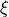, such that 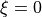 corresponds to
Cartesian geometry, while 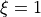 corresponds to cylindrical geometry.
, ) the x-coordinate is interpreted as the
radial direction, the y-coordinate is transformed to the azimuthal coordinate,
, and is the axial coordinate. For cylindrical geometry,
additional terms must be added to the Cartesian equations of motion. These terms
are included with a coefficient 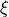, such that 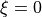 corresponds to
Cartesian geometry, while 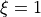 corresponds to cylindrical geometry.
All equations are formulated with area and volume porosity functions. This formulation, called FAVORTM for Fractional Area/Volume Obstacle Representation Method [HS85] is used to model complex geometric regions.
For example, zero-volume porosity regions are used to define obstacles, while area porosities may be used to model thin porous baffles. Porosity functions also introduce some simplifications in the specification of free-surface and wall boundary conditions.
Generally, in FLOW-3D , area and volume fractions are time independent. However, these quantities may vary with time when the moving obstacle model is employed.
Mass Continuity Equation and Its Variations¶
The general mass continuity equation is:
(1)¶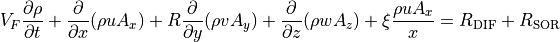
where:
- 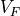 is the fractional volume open to flow,
 is the fluid density,
is the fluid density,- 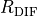 is a turbulent diffusion term, and
- 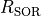 is a mass source.
The velocity components ( , 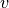,
, 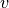,  ) are in the
coordinate directions (, , ) or (,
, ). 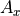 is the fractional area open to
flow in the x-direction, 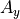 and 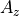 are similar area
fractions for flow in the and directions, respectively.
The coefficient
) are in the
coordinate directions (, , ) or (,
, ). 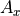 is the fractional area open to
flow in the x-direction, 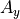 and 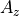 are similar area
fractions for flow in the and directions, respectively.
The coefficient  depends on the choice of coordinate system in the
following way. When cylindrical coordinates are used, derivatives
must be converted to azimuthal derivatives,
depends on the choice of coordinate system in the
following way. When cylindrical coordinates are used, derivatives
must be converted to azimuthal derivatives,
(2)¶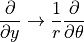
This transformation is accomplished by using the equivalent form
(3)¶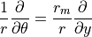
where:
- 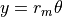 and
- 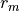 is a fixed reference radius.
The transformation given by Eq. (3) is
particularly convenient because its implementation only requires the multiplier
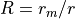 on each derivative in the original Cartesian
coordinate equations. When Cartesian coordinates are to be used, is
set to unity and is set to zero.
The first term on the right side of Eq. (1), is a turbulent diffusion term,
(4)¶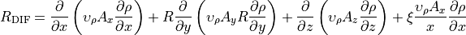
where:
- the coefficient 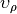 is equal to 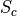 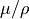, in which
 is the coefficient of momentum diffusion (i.e., the viscosity) and
is the coefficient of momentum diffusion (i.e., the viscosity) and - is a constant whose reciprocal is usually referred to as the turbulent Schmidt number.
- This type of mass diffusion only makes sense for turbulent mixing processes in fluids having a non-uniform density.
The last term,  , on the right side of Eq.
(1) is a density source term that can be used,
for example, to model mass injection through porous obstacle surfaces.
, on the right side of Eq.
(1) is a density source term that can be used,
for example, to model mass injection through porous obstacle surfaces.
Compressible flow problems require solution of the full density transport
equation as stated in Eq. (1). For
incompressible fluids, is a constant and Eq.
(1) reduces to the incompressibility condition
(5)¶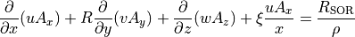
For problems in which the propagation of acoustic pressure waves is important, but the fluid may otherwise be treated as incompressible, the density time derivative is approximated by
(6)¶
where:
- 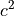 is the square of the sound speed and
 is the pressure.
is the pressure.
This approximation is valid in the range
(7)¶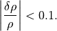
With this approximation the modified continuity equation then becomes
(8)¶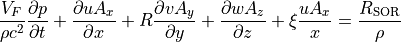
Momentum Equations¶
The equations of motion for the fluid velocity components (,
, ) in the three coordinate directions are the Navier-Stokes
equations with some additional terms
(9)¶![\begin{gathered}
\frac{\partial u}{\partial t} + \frac{1}{V_F}\left\{ {u{A_x}\frac{\partial u}{\partial x} + v{A_y}R\frac{\partial u}{\partial y} + w{A_z}\frac{\partial u}{\partial z}} \right\} - \xi \frac{{A_y}{v^2}}{x{V_F}} = - \frac{1}{\rho }\frac{\partial p}{\partial x} + {G_x} + {f_x} - {b_x} - \frac{R_{\rm{SOR}}}{\rho {V_F}}(u - {u_w} - \delta {u_s}) \hfill \\
\frac{\partial v}{\partial t} + \frac{1}{V_F}\left\{ {u{A_x}\frac{\partial v}{\partial x} + v{A_y}R\frac{\partial v}{\partial y} + w{A_z}\frac{\partial v}{\partial z}} \right\} + \xi \frac{{A_y}uv}{x{V_F}} = - \frac{1}{\rho }\left( {R\frac{\partial p}{\partial y}} \right) + {G_y} + {f_y} - {b_y} - \frac{R_{\rm{SOR}}}{\rho {V_F}}(v - {v_w} - \delta {v_s}) \hfill \\
\frac{\partial w}{\partial t} + \frac{1}{V_F}\left\{ {u{A_x}\frac{\partial w}{\partial x} + v{A_y}R\frac{\partial w}{\partial y} + w{A_z}\frac{\partial w}{\partial z}} \right\} = - \frac{1}{\rho }\frac{\partial p}{\partial z} + {G_z} + {f_z} - {b_z} - \frac{R_{\rm{SOR}}}{\rho {V_F}}(w - {w_w} - \delta {w_s}) \hfill \\
\end{gathered}](_images/math/28f08b02fdc7504e5305b6da572a54418f44f274.png)
In these equations:
- (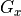, 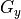, 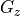) are body accelerations,
- (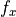, 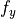, 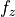) are viscous accelerations,
- (
 ,
,  ,
,  ) are flow losses in porous media or across porous baffle plates, and the final terms account for the injection of mass at a source represented by a geometry component.
) are flow losses in porous media or across porous baffle plates, and the final terms account for the injection of mass at a source represented by a geometry component.
The term 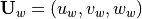 in Eq. (9) is the velocity of the source component, which will generally be non-zero for a mass source at a General Moving Objects Model.
The term is the velocity of the fluid at the surface of the source relative to the source itself. It is computed in each control volume as
(10)¶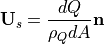
where:
- 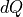 is the mass flow rate,
- 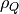 is the fluid source density,
- 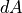 is the area of the source surface in the cell and
 the outward normal to the surface. When 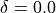 in Eq. (9) the source is of the stagnation pressure type. If 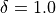, the source is of the static pressure type.
the outward normal to the surface. When 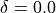 in Eq. (9) the source is of the stagnation pressure type. If 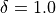, the source is of the static pressure type.
At a stagnation pressure source, fluid is assumed to enter the domain at zero velocity. As a result, pressure must build up at the source to move the fluid away from the source. Such sources are designed to model fluid emerging at the end of a rocket or a deflating balloon. In general, stagnation pressure sources apply to cases when the momentum of the emerging fluid is created inside the source component, like in a rocket engine.
At a static pressure source the fluid velocity is computed from the mass flow rate and the surface area of the source. In this case, no extra pressure is required to propel the fluid away from the source. An example of such source is fluid emerging from a long straight pipe. Note that in this case the fluid momentum is created far from where the source is located. The distinction between those two types of mass sources is important when the force acting from the fluid on the source component must be computed accurately. This is the case with coupled-motion GMO components. Note that the static or stagnation pressure property does not apply to negative mass source, i.e., sinks.
For a variable dynamic viscosity , the viscous accelerations are
(11)¶![\begin{gathered}
\rho {V_F}{f_x} = wsx - \left\{ {\frac{\partial }{\partial x}\left( {A_x}{\tau _{xx}} \right) + R\frac{\partial }{\partial y}\left( {A_y}{\tau _{xy}} \right) + \frac{\partial }{\partial z}\left( {A_z}{\tau _{xz}} \right) + \frac{\xi }{x}\left( {A_x}{\tau _{xx}} - {A_y}{\tau _{yy}} \right)} \right\} \hfill \\
\rho {V_F}{f_y} = wsy - \left\{ {\frac{\partial }{{\partial x}}\left( {A_x}{\tau _{xy}} \right) + R\frac{\partial }{\partial y}\left( {A_y}{\tau _{yy}} \right) + \frac{\partial }{\partial z}\left( {A_z}{\tau _{yz}} \right) + \frac{\xi }{x}\left( {A_x} + {A_y} \right) {\tau _{xy}}} \right\} \hfill \\
\rho {V_F}{f_z} = wsz - \left\{ {\frac{\partial }{\partial x}\left( {A_x}{\tau _{xz}} \right) + R\frac{\partial }{\partial y}\left( {A_y}{\tau _{yz}} \right) + \frac{\partial }{\partial z}\left( {A_z}{\tau _{zz}} \right) + \frac{\xi }{x}\left( {A_x}{\tau _{xz}} \right)} \right\} \hfill \\
\end{gathered}](_images/math/3e3905fcc84d96b29867ece337e4fb41b8552ed9.png)
where
(12)¶![\begin{gathered}
{\tau _{xx}} = - 2\mu \left\{ {\frac{\partial u}{\partial x} - \frac{1}{3}\left( {\frac{\partial u}{\partial x} + R\frac{\partial v}{\partial y} + \frac{\partial w}{\partial z} + \frac{\xi u}{x}} \right)} \right\} \hfill \\
{\tau _{yy}} = - 2\mu \left\{ {R\frac{\partial v}{\partial y} + \xi \frac{u}{x} - \frac{1}{3}\left( {\frac{\partial u}{\partial x} + R\frac{\partial v}{\partial y} + \frac{\partial w}{\partial z} + \frac{\xi u}{x}} \right)} \right\} \hfill \\
{\tau _{zz}} = - 2\mu \left\{ {\frac{\partial w}{\partial z} - \frac{1}{3}\left( {\frac{\partial u}{\partial x} + R\frac{\partial v}{\partial y} + \frac{\partial w}{\partial z} + \frac{\xi u}{x}} \right)} \right\} \hfill \\
{\tau _{xy}} = - \mu \left\{ {\frac{\partial v}{\partial x} + R\frac{\partial u}{\partial y} - \frac{\xi v}{x}} \right\} \hfill \\
{\tau _{xz}} = - \mu \left\{ {\frac{\partial u}{\partial z} + \frac{\partial w}{\partial x}} \right\} \hfill \\
{\tau _{yz}} = - \mu \left\{ {\frac{\partial v}{\partial z} + R\frac{\partial w}{\partial y}} \right\} \hfill \\
\end{gathered}](_images/math/6dd467453e91f11a6971761a6fb7579a768ab826.png)
Wall-Shear Stress¶
In the above expressions, the terms 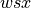, 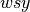 and 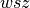 are wall shear stresses. If these terms are omitted, there is no wall shear stress because the remaining terms contain the fractional flow areas (, , ) which vanish at walls. The wall stresses are modeled by assuming a zero tangential velocity on the portion of any area closed to flow. Mesh and moving obstacle boundaries are an exception because they can be assigned non-zero tangential velocities. In this case, the allowed boundary motion corresponds to a rigid body translation of the boundary parallel to its surface. For turbulent flows, a law-of-the-wall velocity profile is assumed near the wall, which modifies the wall shear stress magnitude. These details are more fully explained in Turbulence Models.
Viscosity Evaluation¶
The dynamic viscosity, , can be assigned constant molecular values for each
fluid in a one or two fluid problem. In mesh cells containing a mixture, the
viscosity is evaluated as a volume fraction weighted average of the constant
values. In the single-fluid model the fluid can consist of two components, each
with its own constant density and viscosity. In this case, the mixture fluid
viscosity is evaluated as a volume fraction weighted average of the two
constants. Furthermore, fluid viscosity can be a function of solid fraction for
partially solidified fluids (see Solidification).
When the turbulence option is used, the viscosity is a sum of the molecular and turbulent values. For non-Newtonian fluids the viscosity can be a function of the strain rate and/or temperature. A generic expression based on the “Carreau” model is used in FLOW-3D for the strain rate-dependent viscosity:
(13)¶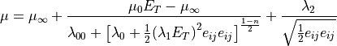
where
(14)¶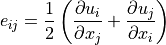
(15)¶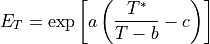
and:
- 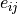 is the fluid strain rate in Cartesian tensor notation
- 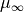, 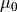, 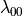,
 ,
,  ,
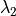,
,
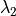,  ,
,  ,
,  , and
, and  are constants.
are constants.  is a reference temperature.
is a reference temperature. is the fluid temperature.
is the fluid temperature.
Expressions given by Eq. (13) and Eq.
(15) can be specified using input variables according to
the following correspondence table. Note that and the constant have dimensions of a
temperature. Also, a temperature-dependent viscosity can be defined even when there
is no shear dependence.
= MU1 |
a = MUTMP1 |
= MUC00 |
T* = TSTAR |
= MUC3 |
b = MUTMP2 |
= MUC0 |
n = MUC2 |
c = MUTMP3 |
= MUC1 |
||
= MUC4 |
For strain-rate-dependent viscosity, the primary variable is the strain rate magnitude, defined
as  . The same variable is output during simulation
as the Strain rate magnitude.
Also, if the viscosity, , is zero, no viscous stresses are computed. Furthermore,
wall shear stress evaluation may be turned off by the user in the input data
file (see
. The same variable is output during simulation
as the Strain rate magnitude.
Also, if the viscosity, , is zero, no viscous stresses are computed. Furthermore,
wall shear stress evaluation may be turned off by the user in the input data
file (see IWSH in Turbulence and Viscous Options).
Because the viscosity is evaluated in a separate subroutine (mucal), the user should find it relatively easy to customize other FLOW-3D non-Newtonian and temperature-dependent viscosity models.
Baffle Flow Losses¶
Flow losses across porous baffle plates have the form (e.g., in the x-direction),
(16)¶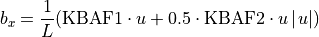
where:
KBAF1is an input constant having dimensions of velocityKBAF2is a dimensionless input constantPBAFis the porosity of the baffle is the length over which the loss occurs
is the length over which the loss occurs- is the microscopic fluid velocity inside the porous baffle
It is important to distinguish between the microscopic velocity (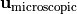) and the bulk velocity (), which are related as . The microscopic velocity is the one computed in the flow Eqs. (1) and (9), and displayed on 2D and 3D plots.
The length is set equal to the distance between pressure values
located on either side of the baffle. At constant flow speed, , this
form ensures a fixed pressure drop,  , across the baffle
independent of mesh spacing:
, across the baffle
independent of mesh spacing:
(17)¶
The and direction losses are defined in a similar manner
with the velocity and length in the corresponding direction. If KBAF1
and KBAF2 are zero, no flow loss calculations are performed.
Non-Inertial Reference Frame Motion¶
For applications to fluid sloshing in moving or spinning containers, for example, it is
useful to modify the equations of motion to have a formulation for general
non-inertial accelerations. The form of such accelerations on a fluid element at
and moving with velocity is
(18)¶
In this expression is a constant gravitational acceleration and is the translational acceleration of point in the mesh coordinate system with respect to an inertial reference frame [Bat83]. Eq. (18) is easily
derived from Eq. 3.2.9 in [Bat83] by a translation of origins.
Inclusion of the vector is useful in applications to rigid bodies where is often chosen to be the center of mass of the body. If this choice is made and no external forces act on the system, then . Often the origin of the body-fixed (mesh) coordinate system is at the center of gravity, in which case . The user can specify constant gravitational accelerations through the term or time-dependent translational accelerations through the term.
To use this last option, or for more general accelerations, the user must specify the quantities , and in the subroutine reserved for this purpose (motion). Furthermore, these quantities must be expressed in terms of the mesh coordinate system (i.e., body-fixed system). They are always specified in Cartesian coordinates regardless of whether Cartesian or cylindrical mesh coordinates are used. For cylindrical coordinates, the accelerations are automatically transformed to the proper local components. The components of the local accelerations experienced by the fluid are automatically calculated by the program from the nine reference frame motion components through Eq. (18). This is a completely general computation and does not require intervention by the user.
For special cases, the user must supply a motion routine for each new application. The standard version of motion can handle a limited number of situations via input data. These include harmonic variations of the acceleration components and tabular specification, including impulses.
Another special case of the non-inertial reference frame is handled by the coupled rigid body dynamics model in FLOW-3D . This model solves the dynamic equations for the movement of a rigid body in which the computational reference frame is embedded. Use of this model usually involves specification of control and environmental forces and torques experienced by the body through input parameters or by modifications to the two subroutines rbctrl and rbenvr. See Coupled Rigid Body Dynamics for a more detailed description.
See also
- Non-Inertial Reference Frame notation
- Rigid Body Dynamics Algorithm for Non-Inertial Reference Frame Model
- Non-Inertial Reference Frame Motion equations
- Rigid Body Dynamics for Non-Inertial Reference Frame
- Non-inertial reference frame application example: Centrifugal Casting
- Gravity
- Impulsive Motion of Non-inertial Reference Frame
- Non-Inertial Reference Frame Motion
- Smooth Tabular Motion
Fluid Interfaces and Free-Surfaces¶
Fluid configurations are defined in terms of a volume of fluid (VOF) function,
 (, , ,
(, , ,  ) [HN81].
This function represents the volume of fluid #1 per unit volume and satisfies
the equation
) [HN81].
This function represents the volume of fluid #1 per unit volume and satisfies
the equation
(19)¶
where
(20)¶
The diffusion coefficient is defined as where is a constant whose reciprocal is sometimes referred to as a turbulent Schmidt number. This diffusion term only makes sense for the turbulent mixing of two fluids whose distribution is defined by the F function.
The term corresponds to the density source in Eq. (1); is the time rate of change of the volume fraction of fluid #1 associated with the mass source for fluid #1.
The interpretation of depends on the type of problem being solved.
Incompressible problems must involve either a single fluid with a free-surface
or two fluids and no free-surfaces. For a single fluid, F represents the
volume fraction occupied by the fluid. Thus, fluid exists where F=1, and void
regions correspond to locations where F=0. “Voids” are regions without fluid
mass that have a uniform pressure assigned to them. Physically, they represent
regions filled with a vapor or gas whose density is insignificant with respect
to the fluid density.
Two-fluid problems may be composed of either two incompressible fluids or one
incompressible and one compressible fluid. represents the volume fraction of
the incompressible fluid component in either case, which is referred to as fluid
#1. The complementary region with volume fraction,  , represents fluid #2
and may have either a constant density or its density is computed from the
compressible fluid equation-of-state.
, represents fluid #2
and may have either a constant density or its density is computed from the
compressible fluid equation-of-state.
Fluid Energy Equations¶
For compressible or thermal flow problems, the internal energy equation is
(21)¶
where is the macroscopic fluid internal energy. For two-fluid problems Eq. (21) is solved separately for each fluid, i.e., for fluid #1
(22)¶
and for fluid #2
(23)¶
where is the volume fraction of fluid #1 and indexes indicate quantities
related to fluid #1 or fluid #2.
Heat of Transformation¶
In general, fluid thermal energy is assumed to be a piecewise linear function of temperature,
(24)¶
where denote temperature and specific heat values in the tabular definition of , and is such that .
Latent heat release due to solidification and melting, which can occur only in fluid #1, is accounted for with an additional term in Eq. (24):
(25)¶
where:
 is solid fraction, and
is solid fraction, and- the latent heat.
Latent heat release can be defined
in one of two ways. The simplest method consists of specifying the solidus
temperature, TS1, the liquidus temperature, TL1, and the specific energy of
the phase transformation occurring between these two temperatures, CLHT1. In
this case the latent heat is applied linearly with temperature between TL1 to TS1.
In many real materials, however, the release of latent heat is not a linear function of temperature. In this case, the latent heat can be defined as a tabular function of temperature. This can be done in the form of either specific energy vs. temperature or solid-fraction vs. temperature.
The Iron Solidification model has its own default behavior of latent heat release, although tabular input can also be used in it [CS11].
Only fluid #1 can undergo a liquid/solid or solid/solid phase change. Both solidification and melting are allowed. Solidification shrinkage is a separate option that can be activated (see Solidification).
It is permitted to have TS1 = TL1, which implies a discontinuity
in the energy-versus-temperature relation.
Macro-Segregation Model¶
The macro-segregation model describes the evolution of binary alloy composition due to phase transformation, diffusion in both liquid and solid phases and convection in the liquid metal. The transport equation for the liquid-solid mixture composition, , is
(26)¶![\begin{gathered}
{V_F} \cdot \frac{{\partial {C_m}}}{{\partial t}} + \left( {u{A_x}\frac{{\partial {C_l}}}{{\partial x}} + vR{A_y}\frac{{\partial {C_l}}}{{\partial y}} + w{A_z}\frac{{\partial {C_l}}}{{\partial z}}} \right) = \frac{\partial }{{\partial x}}\left( {{A_x}{D_l}\frac{{\partial {C_l}}}{{\partial x}}} \right) + R\frac{\partial }{{\partial y}}\left( {R{A_y}{D_l}\frac{{\partial {C_l}}}{{\partial y}}} \right) + \hfill \\
\frac{\partial }{{\partial z}}\left( {{A_z}{D_\ell }\frac{{\partial {C_\ell }}}{{\partial z}}} \right) + \frac{\partial }{{\partial x}}\left( {{A_x}{D_s}\frac{{\partial {C_s}}}{{\partial x}}} \right) + R\frac{\partial }{{\partial y}}\left( {R{A_y}{D_s}\frac{{\partial {C_s}}}{{\partial y}}} \right) + \frac{\partial }{{\partial z}}\left( {{A_z}{D_s}\frac{{\partial {C_s}}}{{\partial z}}} \right) \hfill \\
\end{gathered}](_images/math/05ae0ed3ddb8e0d3bb7f500ed2792d9a7819c092.png)
where:
- and are the liquid and solid phase compositions, and
- and the mass diffusion coefficients in the liquid and solid phases.
Composition can be described as solute mass per unit metal volume or as weight percentage. In this equation, the solid phase is assumed to be at rest with respect to the computational domain.
The mixture composition is obtained by averaging the liquid and solid phase compositions over the control volume. Assuming that and are constant within the control volume, i.e., using the lever rule, we have
(27)¶
with
(28)¶
where:
PCOEFis the partition coefficient [Fle74].PCOEFis constant, therefore, the liquidus and solidus lines of the phase diagram are straight lines.
(29)¶
(30)¶
where TS1 and TL1 are the solidus and liquidus temperatures at C =
CSTAR. If composition and temperature in a control volume are known,
then the solid fraction can be computed using Eqs. (27),
(28), (29) and
(30).
(31)¶
Eutectic reaction is included in the phase diagram. In a eutectic reaction,
phase transformation proceeds isothermally at the eutectic temperature
T = TEUT. Then the mass fraction of the eutectic in the solidified casting
is given by
(32)¶
Liquid metal density variation due to the changes in the composition are taken into account by using a linear expression for the liquid mixture density
(33)¶
where is the liquid density at the composition C = CSTAR and
(34)¶
if the composition is defined as percentage of weight and
(35)¶
if the composition is defined as mass per unit volume; and are the densities of the solvent and solute, respectively.
Liquid metal density can also include a temperature-dependent term, as described
in Buoyant Flow. Finally, the liquid/solid mixture
density is computed as the straight average of the liquid density given by Eq.
(33) and the solid phase density RHOFS.
(36)¶
Thermal Diffusion and Sources¶
Two diffusion processes are included in Eq. (21): one ( ) for the turbulent diffusion of I and the other () for heat conduction. These terms are defined as
) for the turbulent diffusion of I and the other () for heat conduction. These terms are defined as
(37)¶
(38)¶
As with energy in Eq. (21), temperature in Eq. (38) is specific to each fluid in two-fluid problems.
The coefficient is equal to
, where is a
reciprocal turbulent Prandtl number. In the thermal conduction term, the thermal
conductivity  can be directly specified or the Prandtl number can be
specified, in which case the conductivity is . For two-fluid problems the conductivities for
each fluid are locally weighted by the fluid volume fraction .
can be directly specified or the Prandtl number can be
specified, in which case the conductivity is . For two-fluid problems the conductivities for
each fluid are locally weighted by the fluid volume fraction .
The last term, , on the right side of Eq. (21) is an energy source term. Sources can be associated with the mass source , with heat transfer mechanisms at solid boundaries, distributed heat sources within the fluid or viscous heating. A detailed discussion of wall heat transfer is given in Wall Heat Transfer. The viscous heating source term is
(39)¶
where:
- are the components of the strain rate tensor, and
- .
Structure Temperature Equation¶
If the heat transfer option is selected (IHTC > 0) in the input, dynamic
temperatures of heat structures may be evaluated by FLOW-3D . Heat structures can
be either mesh wall boundaries or obstacles. The most general equation solved
for dynamic structure temperatures is
(40)¶
where:
- is the solid structure temperature,
- , , and are the solid material values of density, specific heat, and thermal conductivity, and
- is a specific energy source term composed of contributions from specified external sources and solid-liquid heat transfer.
Evaluation of heat transfer is discussed in Wall Heat Transfer.
Some obstacles or wall boundaries may be treated by a lumped temperature model. In this case the entire structure is assumed to be at a uniform temperature, which eliminates the conduction term and results in
(41)¶
where now is the mass of the structure, and is the volume and/or area integrated energy source term.
Equation-of-State¶
Compressible equations of state are assumed to have the form
(42)¶
A single-mixture energy is generally not sufficient to determine separate fluid states for two-material problems. Therefore, we assume that the two materials have the same temperature, which partitions energy between the materials. A perfect gas equation-of-state is the default available in FLOW-3D for compressible fluids.
For thermally buoyant flows the fluid densities are functions of temperature only, as described in Buoyant Flow.
Incompressible fluids generally have a constant and uniform density. However, one can also define a non-uniform density in an incompressible fluid.
General Scalar Transport¶
In addition to the flow parameters described above, FLOW-3D also uses general scalar quantities. A scalar can define a property of fluid #1, fluid #2, or both, in which case it is called advectable scalar. A scalar can also define a quantity that is attached to a location in the computational domain rather than fluid; such a scalar is called non-advectable.
Model scalars are those that are used in standard models, e.g., Defect Tracking or Air Entrainment. These scalars are defined automatically when their respective models are activated. User-defined scalars are not used in any standard model and can be introduced by the user either as a fluid marker, similar to Marker Particles, or as a part of a customization (see Example: Counting Particle Concentration in Mesh Cells in the Customization Chapter).
An advectable scalar is typically defined as concentration  in terms of mass per
fluid volume in cell. A transport equation is solved automatically for any advectable
scalar, user-defined or model:
in terms of mass per
fluid volume in cell. A transport equation is solved automatically for any advectable
scalar, user-defined or model:
(43)¶
in which  is the diffusion coefficient and is a source term.
is the diffusion coefficient and is a source term.
In the simplest case, scalars do not affect the fluid dynamics. They move with the mean
flow and diffuse with the diffusion coefficient
(44)¶
where RMSC is the inverse Schmidt number, dynamic fluid viscosity,
CMSC is a constant scalar diffusion coefficient and is the fluid density.
Scalars can also carry certain attributes that affect fluid properties such as density, viscosity,
elastic modulus and yield stress, providing a capability to model multiple materials or fluids
with localized variations of properties. When scalar mass is included in the calculation of the
fluid/scalar mixture it is simply added to that of the fluid. In other words, scalars are always
treated as interstitial solutes, when their molecules fit perfectly in the spaces between the
molecules of the solvent, i.e., fluid. A scalar can only make fluid heavier. Other mixture properties
carried by scalars are calculated as mass-averages of the pure fluid and scalar attributes. For example,
for a single scalar , the mixture viscosity :
(45)¶
where and are pure fluid density and viscosity, and is
the viscosity attributed to scalar . The summation is done over all scalars contributing to
the mixture viscosity.
Scalars can be introduced in the initial conditions, at mesh inlet boundaries and at fluid sources. They also provide a powerful platform for user customizations to fit particular modeling needs.
Auxiliary Models¶
Bubble and Void Region Models¶
Many calculations that involve the flow of both liquids and gases can be idealized as “free-surface” flows. This type of flow is analyzed by treating the gas as a region of uniform pressure and temperature, which frees one from determining the dynamics of the gas. In free-surface calculations, FLOW-3D identifies the region occupied by fluid as regions where the fluid fraction function is non-zero. Free-surface calculations must have domains in which the fluid fraction is zero. Each such region is called a “void region” (or sometimes a “bubble”). Void regions may be separated from one another by fluid cells, obstacles, or baffles. These regions physically represent volumes that are occupied by gas. The VOF solution algorithm does not solve for the dynamics of the gas in these regions; instead, it treats them as regions of uniform pressure, which is normally an excellent approximation. The pressure is used as a boundary condition on the liquid/gas interface.
Evaluation of the pressure (and possibly temperature) of void regions depends on the void region model. There are four kinds of void regions used in FLOW-3D :
- Constant Pressure Void Regions
- Cavitating Void Regions
- Adiabatic Bubble Model
- Homogeneous (Thermal) Bubble Model
Some calculations may combine different models for different regions or even for the same void region at different times.
The use of a single pressure for each connected void region presupposes that sound waves traverse the region in much shorter times than those associated with changes in the configuration of the surrounding incompressible fluid. These assumptions are, however, sufficiently accurate for many interesting problems.
Bubbles that impinge upon the mesh boundary may be affected by the boundary conditions. For example, any void region adjacent to a fixed pressure boundary will automatically take on the prescribed boundary pressure regardless of volume changes, coalescence, or breakup. Void regions adjacent to fixed velocity boundaries will gain (or lose) enthalpy. If the flow is into the computational region, the enthalpy gain is computed from the specified boundary conditions. For an outflow boundary, it is the enthalpy in the bubble that is fluxed out. Reference [NH80] describes the theoretical basis for this bubble model.
Constant Pressure Void Regions¶
When densities of the fluid and gas differ significantly, then small variations of pressure within the gas and gas inertia can be neglected compared to those in the fluid. For example, the ratio of water to air densities is about 1000. In these cases each void region can be treated as a uniform pressure region. In FLOW-3D such flows are described with the one-fluid model with gas boundaries treated as free-surfaces.
If the gas does not undergo volumetric changes (i.e., compression or expansion), then it can be further assumed that the pressure of the void regions is constant in time. The constant pressure void region model works well, for example, for open channel flows where the gas is air at atmospheric pressure. Another example is filling of a sand mold with liquid metal where the sand porosity ensures that air in the mold escapes without getting trapped.
If the void is connected to a specified pressure boundary, then the void will assume the pressure specified at that boundary, which may be a function of time.
Adiabatic Bubble Model¶
In situations when a volume of gas gets trapped in a confined region, the gas pressure can no longer be considered constant. For example, a submerged air bubble rising in water may have a variable pressure.
FLOW-3D can treat one or more void regions in its incompressible, one-fluid mode.
The bubble model evaluates the pressure  in each void region based on
the void region volume
in each void region based on
the void region volume  using the isentropic model of expansion or
compression in which is constant. Here
using the isentropic model of expansion or
compression in which is constant. Here  is normally
the isentropic exponent defined as the ratio of specific heats,
.
is normally
the isentropic exponent defined as the ratio of specific heats,
.
Strictly speaking, this model of the bubble pressure is only valid if the void region behaves as a perfect gas undergoing reversible adiabatic changes.
Void regions can behave in more complex ways than simple expansions and contractions. They may break up or coalesce, and they may receive or lose mass and energy at the mesh boundaries. All of these processes are approximated by the bubble pressure model in FLOW-3D . The pressure of a coalesced bubble is determined by volume weighting the pressures of the previous isolated bubbles. A bubble that breaks up creates new bubbles at its old pressure. These processes violate the constant condition, but as they only occur at discrete times, the accumulated error is expected to remain small.
If a bubble neither coalesces nor breaks up, the relation determines the new pressure.
Note
The adiabatic bubble model cannot account for Liquid-Vapor Phase Change
Homogeneous (Thermal) Bubble Model¶
In this section we describe an extension of the adiabatic bubble model that adds non-adiabatic mass and energy changes (see the Flow Science Technical Note #57 on the users site at http://users.flow3d.com/technical-notes/). Solid-to-void heat transfer provides for heat exchange between the gas in a bubble and solid obstacles exposed to the bubble. Mass and energy exchanges resulting from phase changes at the bubble’s surface can be included in cases where the bubble gas consists of liquid vapor.
Homogeneous bubbles have a simple and robust formulation that is consistent with the liquid thermodynamic properties used in FLOW-3D . The model is referred to as the Homogeneous Bubble Model. The nomenclature is meant to emphasize the fact that the pressure and temperature of gas in a bubble are spatially uniform (i.e., homogeneous), but these values can vary with time. There can be many such bubbles in a calculation, each having its own temperature and pressure.
The equation-of-state for a bubble is the ideal gas equation,
(46)¶
Here
- is the bubble pressure,
- is the gas density in the bubble,
- is the specific heat at constant volume of the vapor, and
- is the vapor temperature in absolute units.
- The quantity is the ratio of specific heats for the gas (see Variable Pressure Void).
Note that the gas constant, , for the bubble is equal to the product
.
If there are no sources of mass or energy for a bubble, then it will behave as though
it is adiabatic, changing pressure from some initial state (, ) to a new state (,) according to
) to a new state (,) according to
(47)¶
Liquid-Vapor Phase Change¶
When phase changes occur it is necessary to have an analytical relation that
expresses the saturation pressure of a vapor in terms of its temperature. In
FLOW-3D the default for this relation is the Clapeyron equation that gives
as a function of temperature ,
(48)¶
where:
- (
PV1,TV1) is a point on the saturation curve, and TVEXPis an exponent constant given by
(49)¶
where CLHV1 is the heat of transformation (latent heat) of phase change.
The rate of phase change is typically modeled as proportional to something that measures the deviation from saturation conditions. A typical formulation [TBIF69] based on kinetic theory is
(50)¶
where:
- is the molecular weight of the vapor,
- the vapor gas constant,
- is temperature, with subscripts and referring to liquid and vapor states,
- The superscript on indicates the saturation pressure corresponding to the liquid temperature .
- Finally, the coefficients and are the “accommodation coefficients” for evaporation and condensation, respectively.
The origin of this expression is that the mass flux (for example, condensation on a liquid surface) must be proportional to the local vapor density and local velocity of the molecules at the surface. Assuming a Maxwellian velocity distribution the local velocity into the surface is [PP76],
(51)¶
Combining this result with the vapor equation-of-state gives the second (condensation) term in the mass transfer expression Eq. (50). The evaporation term is arrived at in a similar way. The accommodation coefficient, say , is the probability that vapor molecules striking the liquid surface are captured. With this interpretation, the accommodation coefficients should generally be less than or equal to unity.
Most often the evaporation and condensation accommodation coefficients are assumed to be equal, but there is no theoretical reason why this must be so. Furthermore, there are no theoretical predictions for these values. It is worth noting here that this expression is for the “net” mass transfer from liquid to vapor. It says nothing about the possibility of molecular exchanges between the liquid and vapor that transfer energy without a net mass exchange. For present purposes we have chosen to simplify the phase change rate to
(52)¶
where RSIZE is a net “accommodation coefficient” and is the average liquid
temperature along the surface of the bubble. Different values of the accomodation coefficient can be defined
for evaporation and condensation thus allowing to account for situations when, for example, evaporation rate is lower
than that of condensation in otherwise similar conditions. By default, the two rates in the model are identical.
Cavitating Void Regions¶
Cavitating void regions are created in the fluid when the local pressure drops
below a critical value,  . There are two models to select
from to simulate the rate of cavitation bubble growth: a Simplified model
and an Empirical model (refer to Cavitation and Bubble Formation (Nucleation) for
details). To simulate the opening of cavitating voids, ensure that the
Active model is selected.
. There are two models to select
from to simulate the rate of cavitation bubble growth: a Simplified model
and an Empirical model (refer to Cavitation and Bubble Formation (Nucleation) for
details). To simulate the opening of cavitating voids, ensure that the
Active model is selected.
In the Simplified model, the initial rate of void creation can be controlled
by the input parameter CAVRT; in cells where the local fluid
pressure falls below , the fluid fraction is reduced such
that 1% of the cell become void after CAVRT time. If CAVRT
is not specified, then is used as the time scale.
In the Empirical model, the initial rate of void formation is controlled by
a balance of production and dissipation terms. Cavitation production
occurs in cells where the local pressure is below ; the
rate is determined by:
(53)¶
where  is the Cavitation production coefficient,
is the Cavitation production coefficient,
 is the turbulent kinetic energy (or 10% of the total
kinetic energy if no turbulence model selected),
is the turbulent kinetic energy (or 10% of the total
kinetic energy if no turbulence model selected),  is the
Surface tension coefficient, is the specified
Cavitation pressure, is the local fluid pressure, and
is the
Surface tension coefficient, is the specified
Cavitation pressure, is the local fluid pressure, and
 is the mass fraction of cavitation in the computational cell.
Note that this term is non-zero only for cells with
is the mass fraction of cavitation in the computational cell.
Note that this term is non-zero only for cells with  .
.
Cavitation dissipation occurs in cells where the local pressure is above
; the rate is determined by:
(54)¶
where is the Cavitation dissipation coefficient. This term is non-zero only for cells with , and is relevant only where there is already a positive cavitation volume fraction (ie., cavitation volume fraction cannot be negative).
Summed together into the transport equation for cavitation volume fraction, gives:
(55)¶
Regardless of the model chosen when the new void region opens it is treated as a fixed pressure bubble with pressure equal to the cavitation pressure. The latter is a fixed parameter and at present does not depend on temperature.
Cavitating bubbles can coexist with other types of void regions in a single calculation.
Vaporization Residue¶
Fluids at free surfaces in a one-fluid problem can either evaporate or condense when a phase change model is used. This holds true for both cases where the gas side of the interface is a constant pressure or when it is a homogeneous bubble region. If the fluid contains one or more solutes, the concentration of the solutes must change in response to the gain or loss of liquid. Typically, the solutes become more concentrated due to liquid evaporation.
In either the evaporation or condensation case, any scalar concentration that is associated with the fluid will have its concentration altered by the phase change. If a surface element is less than half filled with liquid, then the concentration change is spread into the principal neighbor of the surface element to the extent that the concentration region equals half the thickness of the surface element.
If enough evaporation occurs and the solute concentration becomes high enough, it may result in a surface skin or a residue may form on a solid surface if the liquid is completely evaporated. For this to be simulated in FLOW-3D , the residue model must be selected. Activation of this model causes the solute to form a non-moving residue once its concentration reaches a user-defined maximum packing density. If more than one solute is present the residue model will record the total of all solute contributions to the residue.
Buoyant Flow Model¶
Many flow situations can be approximated using incompressible fluids but require evaluation of the influence of buoyant forces associated with small density variations. In such cases the density is usually represented as a function of temperature only. Solidification and macro-segregation can also be taken into account in the buoyant flow model.
FLOW-3D permits a solution of these flows by coupling its incompressible flow solution algorithm with the solution of the energy transport equation and with a local evaluation of the density as a function of temperature. The model will work with single-fluid calculations, with or without a free-surface, and for two-incompressible-fluid problems. Additionally, the limited compressibility model may be employed with the buoyant flow model. Buoyant forces are automatically included in compressible fluids. Flow Science TN #58 on the users site at http://users.flow3d.com/technical-notes/ has details on the approximations and limitations of the model.
When the buoyant flow option is used, the continuity equation, Eqs. (1) or (5), the momentum-transport equations, Eq. (9), and the internal-energy-transport equation, Eq. (21), are solved. For free-surface or two-incompressible-fluid problems the fluid fraction equation, Eq. (19), is also solved.
Fluid density is determined in the buoyant flow model from the local fluid
fraction and temperature as
(56)¶
where
(57)¶
In Eq. (57), is a reference temperature at which
fluid #1 has the input density RHOF and fluid #2 density RHOFC.
The volumetric thermal expansion coefficients for these fluids are constants
THEXF1 and THEXF2, respectively. Buoyant forces arise from
imbalances of the pressure gradient and body forces in Eq.
(9), which include non-inertial as well as gravitational
accelerations.
The fluid temperature is determined from the transport equation for the internal energy with the assumption of equal local temperatures in two-fluid cases.
Core Gas Generation and Flow in Sand Cores and Molds¶
Gas defects are often found in sand cast parts that arise from gas generated by thermal decomposition of the sand binder in the sand. A computational model is available to predict the generation of gas and its transport within cores. The gas is treated as compressible to account for poor core venting scenarios and for transport across core regions of steep temperature gradients. The model considers true molding geometry and actual core venting locations and can be used to predict the amount of gas that would enter liquid metal from any location on the surface of the core.
A core is treated as a solid object in the program with no porosity, so that no liquid metal can flow into its interior. The core gas model then treats the core object as though it is a porous material in which gas can be generated, flow and pass in or out of its boundaries using special boundary conditions as described below.
The core gas generated is thought to be ideal and have a fixed composition with the gas constant, . The gas constant can be deduced from the experiments in which the gas is collected in a fixed volume apparatus and the gas pressure is measured. From the measured total collected standard volume, , and the initial mass of the binder, , the gas constant is
(58)¶
The microscopic velocity of the core gas, , is governed by the equation for flow in porous media:
(59)¶
where:
 is the core porosity,
is the core porosity, is the sand permeability,
is the sand permeability,- is the core gas viscosity and
- is the core gas pressure.
The macroscopic inertial terms are found to be small for the typical
conditions of the core gas flow and are not included in
(59). The permeability can be expressed in terms
of the drag coefficient  according to:
according to:
(60)¶
And the drag coefficient has a linear Darcy term and a quadratic
Forchheimer term:
(61)¶
where:
- is the core gas density and
- , are sand specific linear and quadratic flow loss (valve) coefficients.
The density of the core gas is governed by the mass transport equation:
(62)¶
where and  are the microscopic core gas and
macroscopic core binder densities. Since the core gas is compressible, even in
the absence of gas sources there can be a thermal expansion and flow of the
initial air in the core as the core heats up.
are the microscopic core gas and
macroscopic core binder densities. Since the core gas is compressible, even in
the absence of gas sources there can be a thermal expansion and flow of the
initial air in the core as the core heats up.
The core gas density is further constrained by the ideal gas law:
(63)¶
where the temperature of the gas is assumed to be equal to the local core temperature. This is a good approximation because of the high heat content of the solid core material compared to that of the gas.
Since it is assumed that the core and gas temperatures are equal, and the core
temperature is already computed by the heat transfer solver, the ideal
gas law can be used to compute gas pressure with its density defined by Eq.
(62).
The conversion of the solid binder to gas is described by an Arrhenius equation,
(64)¶
where:
- is the solid binder density,
- is the reaction rate constant the value of which is obtained empirically,
- is a component binding energy,
- is the universal gas constant and
- is the core temperature.
The gas source can exhibit an unphysical oscillatory behavior associated with the discrete size of the computational elements. To alleviate this problem a simple subdivision scheme is used in each computational cell. The solid binder density is stored at the sub-cells nodes, while the sub-cell temperature is obtained through a linear interpolation of the temperature field from the nodes of the main mesh.
Because the core-gas model is used concurrently with a mold filling model, it is possible that gas flow in cores may become sufficiently fast to limit the computational time-step size (by the Courant stability condition for an explicit advection approximation) to a value smaller than what is needed for the filling simulation, resulting in longer calculation times. To counter this possibility, a sub-time-stepping scheme has been incorporated into the core-gas model. This is possible because the model is coupled to the metal filling simulation through the boundary conditions at the outer surface of the core (see below). If it is found that the time-step size for the core-gas model must be smaller than that for the filling simulation, then the time-step size for the core-gas computations is reduced to a stable value and the model is run for several sub-time steps with the fixed thermal and flow solution in the metal. The size of the sub-time step is an integer fraction of the main time step size, so that the gas computations can be repeated for that integer number of steps to bring the gas solution forward to the correct time.
There may be a flow of gas either in or out of the core at boundaries of the core material. This exchange is treated as a boundary condition for the core-gas model. The passage of the gas through the core boundary depends on what is located outside the core. For instance, if the core surface is exposed to air, then gas may flow across the boundary in either direction depending on the pressure difference.
If there is liquid metal at the core surface, then gas is allowed to pass out of the core when its pressure is greater than the pressure of the metal at that location, but no metal is allowed to enter the core. If the metal has already solidified at the surface of the core, then no gas is allowed to flow across the boundary at that location.
Another boundary condition occurs at core print surfaces, that is, where a core surface is in contact with another solid part of the mold. At these surface locations, gas does not normally flow unless channels have been cut into the mold to allow for venting. The core-gas model has an option for allowing venting at print surfaces.
Permeable Mold Model¶
Sand is a common material for making casting molds. It is easily “molded” into any shape, recyclable and has suitable structural and thermal properties.
In addition, a sand mold is permeable which allows the air initially residing in the cavity to escape during pouring. However, the escape of the air occurs at a certain rate which, if too low, may result in a significant buildup of back pressure thus slowing down the filling process. There is a simple model for the escape of air through a permeable mold in FLOW-3D that provides the means to account for the buildup of the back pressure.
The volume flow rate  of the air through the mold is computed using a
linear formulation:
of the air through the mold is computed using a
linear formulation:
(65)¶
where:
 is the surface area of mold that is exposed to the air,
is the surface area of mold that is exposed to the air,- - the mold permeability,
- - the air viscosity,
- - average mold thickness, and
- is the pressure drop between the air inside and outside of the mold.
The mold permeability can be estimated from the mold porosity,
, and average sand grain size  :
:
(66)¶
The permeable mold model is used together with the adiabatic bubble model, in which
each air region, or bubble, has a uniform pressure that is a function of the
bubble volume. The flow rate is evaluated for each air region using
the bubble pressure and its surface area with the mold. The ambient pressure is
assumed to be the constant and the same for all air regions.
Over a small increment of time, , the back pressure in an air region,
, changes due to the compression by the incoming metal,
 , and to venting through the mold, :
, and to venting through the mold, :
(67)¶
where:
- is the ratio of the gas specific heats (1.4 for air) and
- is the air region volume.
mold coating is currently not taken into account.
Defect Tracking¶
Mechanical properties of a casting may strongly depend on the “cleanness” of the metal with regards to oxide films, air and other foreign inclusions that are likely to get trapped inside the metal during the filling process. In this section, a defect source and tracking scheme is described that gives a qualitative prediction of casting defects originating from surface turbulence [BH98]. The defect model is also coupled with the lost foam casting model to predict possible defects arising from the residue remaining on metal surfaces after the foam has been decomposed.
Inclusions at the free surface and from the lost foam residue are represented
as separate quantities. In the free-surface defect model, the quantity
accumulates at free surfaces at a constant Defect generation rate
DFTSRF. The foam residue is incremented by an amount proportional to
the mass of degraded foam with the coefficient of proportionality defined by
Residue generation rate DFTFOB. A transport equation is
solved numerically for each quantity with advection and diffusion terms,
similar to the one given by Eq. (279). A second-order in
space, monotonicity-preserving scheme is used to approximate the advection
terms for increased accuracy. Diffusion of the inclusions is usually small
and, by default, is turned off, but can be included by defining positive
values for the Molecular diffusion coefficient and/or the
Turbulent diffusion coefficient multiplier, which is the inverse
Schmidt number, for the Defect tracking and Lost foam
models.
Both quantities represent the concentration of contamination material. The likelihood of a defect due to contamination is proportional to the concentration. Defects are more likely in places of highly localized peaks of concentration of either quantity.
At this point no buoyancy or oxide film strength effects are included in the model. Also not included are such phenomena as oxide film sticking to mold walls and foam residue escape through the porous sand mold. The wicking of the liquid products of foam decomposition in the lost foam casting process can be included (see the Lost Foam Casting Process for details).
At the conclusion of a simulation, the spatial distribution of the inclusion concentrations indicates locations where defects are likely to be. In most cases the majority of the inclusions are found at the last place to fill, as would be expected. In other words, contaminants accumulate at the metal front and are pushed along until there is nowhere else for them to go. More interesting, however, are situations two fronts meet, trapping surface inclusions in the interior of the metal, or near corners where flow recirculation regions may develop. Even the circulation remaining in metal after a mold has filled can redistribute surface-generated contaminants.
Without detailed experimental comparisons to correlate predictions from this type of model with actual defects, it is impossible to assign any significance to the absolute values of the scalar. Therefore, the rate coefficients can have arbitrary positive values. However, qualitative results from even the simplest of test cases reveals a considerable amount of useful insight into the processes responsible for defect generation and their final distribution in a cast part.
Drift-Flux Model¶
In fluids composed of multiple components, e.g., fluid/particles, fluid/bubbles, fluid/fluid mixtures, where the components have different densities, it is observed that the components can assume different flow velocities. Velocity differences arise because the density differences result in non-uniform body forces. Often the differences in velocities can be very pronounced, for example, large raindrops falling through air or gravel sinking in water. Under many conditions, however, the relative velocities are small enough to be described as a “drift” of one component through the other. Examples are dust in air and silt in water.
The “drift” distinction has to do with whether or not the inertia of a dispersed component moving in a continuous component is significant. If the inertia of relative motion can be ignored, and the relative velocity reduced to a balance between a driving force (e.g., gravity or a pressure gradient) and an opposing drag force between the components, then we can speak of a “drift-flux” approximation. Drift velocities are primarily responsible for the transport of mass and energy. Some momentum may be transported as well, but this is usually quite small and has been neglected in the FLOW-3D drift model.
The idea behind the drift model is that the relative motion between components can be approximated as a continuum, rather than by discrete elements (e.g., particles). This enhances computational efficiency, as the need for tracking the motion and interaction of discrete elements do not need to be computed.
There are four different physical situations in which a drift velocity can be employed in FLOW-3D :
- One fluid, variable density flows, where the fluid is a mixture of two components having densities and .
- One fluid with solidification, where the fluid is a mixture of liquid and solid having densities and .
- Two incompressible fluids having densities and .
- A compressible gas with an incompressible component. In this case the density of the compressible gas is given by an equation-of-state, while the incompressible material has density , which is always assumed to be much larger than the gas density.
The formulation of the relative velocity in the drift approximation proceeds as follows. Suppose a flow is composed of two discrete components or phases, one the continuous phase, and the other the dispersed phase, which is discontinuous and surrounded by the continuous phase. Note that the same system of fluids can have opposite configurations: for the case of a small quantity of water contaminating a large volume of diesel fuel, the water is the dispersed phase; conversely, when small amounts of diesel fuel are present in water, the diesel fuel is the dispersed phase.
Define such that for the incompressible flow of a two-component fluid.
The volume fractions of the two components making up a mixture are denoted by and , where
(68)¶
If we presume that the two phases are incompressible, the momentum balance for the continuous phase is
(69)¶
while for the dispersed phase it is
(70)¶
where:
- and represent the microscopic velocities of the continuous and dispersed phases, respectively, and
 is the volume fraction of the continuous phase.
is the volume fraction of the continuous phase.- The microscopic velocity refers to the velocity of each phase about a small but finite volume of fluid.
- is the body force,
- is a drag coefficient that relates the interaction of the two phases, and
- is the relative velocity difference between the dispersed and continuous phases:
(71)¶
The goal of the drift-flux model is to compute the motion of the two phases relative to the volume-averaged velocity, . The volume-weighted average velocity is
(72)¶
The volume-weighted average velocity is chosen rather than the mass-weighted average because mass continuity is automatically enforced, without alteration,
(73)¶
as is momentum conservation.
Subtracting Eq. (69) from Eq.
(70) produces an equation for the relative
velocity where is the drag coefficient per unit volume,
(74)¶
The goal is to determine the relative velocity, . If we employ Eq. (74) in its entirety, this would constitute a two-velocity-field model for two-component flow. For simplicity, however, we have chosen to make the drift-flux approximation, i.e., we assume that the relative velocity is nearly steady and the advective terms cancel (i.e., for small relative velocity ). Under these assumptions we have
(75)¶
Since the relative velocity is based on the microscopic velocities of each phase, then the drag force must contain some information about the volume fraction of the suspended phase. For example, a suspension with an infinitesimally small amount of the suspended phase will produce an infinitesimally small momentum exchange between the components.
If we presume that the suspended phase is composed of particles that are the
same size, and there are of them in a unit volume, then
(76)¶
where:
- is the volume of a particle and
 is the drag coefficient for a single particle moving with velocity magnitude through the continuous fluid, and
is the drag coefficient for a single particle moving with velocity magnitude through the continuous fluid, and
(77)¶
is the volume-weighted average density.
A quadratic dependence between the drift coefficient and the relative flow
velocity is used in the model. If  is the magnitude of relative
velocity of the particle moving in a continuous fluid, then
is the magnitude of relative
velocity of the particle moving in a continuous fluid, then
(78)¶
where:
- is a drag coefficient,
 is the average particle radius and
is the average particle radius and is the cross sectional area of the particle, which is assumed to be spherical.
is the cross sectional area of the particle, which is assumed to be spherical.
The average particle size is defined either as a constant for all of the
particulate phase or, when the particulate phase is made of gas bubbles or liquid droplets,
can be calculated dynamically in space and time based on the local flow conditions.
When the volume fraction of dispersed material is not vanishing small, the use of a single particle drag force for computing the momentum exchange between components is not quite correct. The most frequently used correction to account for particle/particle interactions is an experimentally determined relation referred to as the Richardson-Zaki correlation.
Richardson-Zaki’s correlation is dependent on the particle Reynolds number,
. The correlation
consists of replacing the drift velocity by multiplying the computed value,
, by the continuous component volume fraction raised to a
power ,
(79)¶
The exponent is the product of the Richardson-Zaki coefficient and , that is, where
| Re < 0.2 | |
|---|---|
| 0.2 < Re < 1.0 | |
| 1.0 < Re < 500 | |
| 500 < Re |
The upper limit of 0.5 is used for the volume fraction of the continous phase to reflect the fact that the Richardson-Zaki correclation has been empirically validated for the dispersed phase concentrations below 50%. The adjusted, or effective, value of the relative velocity, , is used for the computation of all drift fluxes.
Electro-mechanics¶
Electric Field Model¶
To simulate physical processes such as movement of charged mass particles, particle and liquid dielectrophoresis, and electro-osmosis, an electric field distribution is needed. In FLOW-3D , the electric potential is solved for using the following equation.
(80)¶
with the electric field calculated by
(81)¶
where , are free charge density (i.e.,
electric charge per unit volume) and permittivity of vacuum or void (defined by
elperm in FLOW-3D ) respectively while is the spatially-varying
dielectric constant.
Numerical solution of the Poisson equation Eq. (80) is done by an iterative solver using the GMRES method.
At open boundaries (i.e., boundaries through which fluid flow can occur), either an insulation condition (i.e., where is a normal vector on the boundary in question) or a specified value of the electric field can be specified. Solid objects can be assigned time-dependent potentials if they are conductors. Alternatively, an object can be a dielectric material with an assigned dielectric constant. In this case, the electric potential is computed within the object. Also, solid dielectrics may have non-zero conductivities that support free charges and currents.
Optionally, a charge density equation that includes charge convection, charge relaxation and charge sources associated with non-uniform electric properties is solved simultaneously with the electric potential. Please refer to Electric Fields in the Model Reference chapter and the Technical Notes listed at the end of this section for more information.
Most people use the SI system of units for electrostatic and electromagnetic problems. In the SI system the standard unit of charge is the coulomb and the unit of potential is the volt. Electric field intensities are measured in Newton/coulomb in the SI system. When using the CGS system of units, it is customary to express charge and potential in the “electrostatic” units of statvolt and statcoulomb, where:
1 coulomb (C) = 2.998
109 statcoulomb (statC)
1 volt (V) = 3.336
Electric forces are then,
1 Newton = 1 C
V
1 dyne = 1 statC
If the fluid or solid regions are conducting then charges may develop in response to the applied field and to changes in conductivity and dielectric properties. If a thermal model is activated then Joule heating due to these currents is computed in all conducting fluids and solids. The heat source per unit open cell volume and time associated with passing electric current through conducting fluid, , is
(82)¶
where and are the fluid and open volume fractions in cell and
 is the fluid electrical conductivity. For two-fluid problems,
is replaced with 1.0 and with the volume-averaged mixture value of the
electrical conductivity. Similarly, the Joule heat source in solid is
is the fluid electrical conductivity. For two-fluid problems,
is replaced with 1.0 and with the volume-averaged mixture value of the
electrical conductivity. Similarly, the Joule heat source in solid is
(83)¶
More details are given in Flow Science Technical Notes #52, #56, #69 and #70 on the users site at http://users.flow3d.com/technical-notes/.
Electro-osmosis¶
Generally, most substances such as silica and glass will acquire a surface electric charge when brought into contact with an aqueous (polar) medium (electrolyte solution), as shown in the figure below.

A layer called the electric double layer (EDL) is formed close to the charged surface in which there is an excess of counter-ions over co-ions to neutralize the surface charge. There are more counter-ions than co-ions in the region near the fluid/solid interface. The electric potential created due to the EDL is called the potential and is assumed to be imposed at the solid surface. The potential is a property of the solid-liquid pair and can be measured experimentally. The thickness of the EDL is indicated by the following parameter, called the Debye shielding distance or Debye length.
(84)¶
where:
 = liquid permittivity
= liquid permittivity- = gas constant
- = temperature
- = Faraday’s constant
- = ion concentration
- = valence
More details on EDL and related physics can be found in [Pro94].
Electro-osmotic flow or electro-osmosis refers to the fluid motion that occurs when an electric field is applied to an electrolyte solution in the vicinity of a charged surface. The process can be described by the following equations
(85)¶
(86)¶
(87)¶
where  is the potential. An insulation-like boundary
condition is imposed for the potential on all mesh boundaries
with a symmetry condition. On solid (obstacle) surfaces, the potential is imposed. Here Boltzmann charge density distribution for liquid with
single valence is assumed. But the user can easily provide other different
charge density distributions in two simple functions named psi and
dfdpfi released to users. How to do this customization is described in
these two functions.
is the potential. An insulation-like boundary
condition is imposed for the potential on all mesh boundaries
with a symmetry condition. On solid (obstacle) surfaces, the potential is imposed. Here Boltzmann charge density distribution for liquid with
single valence is assumed. But the user can easily provide other different
charge density distributions in two simple functions named psi and
dfdpfi released to users. How to do this customization is described in
these two functions.
Please refer to Electro-osmosis in Model Reference to get related information on how to use the model.
Particle Movement and Fluid Flow Due to Electric Field¶
An electric charge or charge dipoles can be carried by molecules, small droplets, and particles which are called charge, or charge dipole carriers, or mass particles in FLOW-3D . If the charge of a mass particle, , is , the electric force (called coulomb force) acting on this particle is
(88)¶
where is the electric field intensity and its calculation is described above. If a mass particle, , carries charge dipoles and the corresponding dipole moment is , the electric force (called polarization force) imposed on this mass particle is
(89)¶
If all energy losses in the carriers are neglected, the dipole moment is calculated by
(90)¶
where is the particle dielectric constant, is the
fluid dielectric constant, is the particle radius and
is the permittivity of vacuum. Then, the electric force imposed on mass
particle, , carrying the charge dipoles can be cast into
(91)¶
Instead of paying attention to the carriers mentioned above, we consider fluid where these charges or charge dipole carriers are distributed. According to Newton’s law, the fluid will experience some body forces due to existence of charge or charge dipoles. The body force due to free charge is
(92)¶
where is the free charge density. The body force due to charge dipoles is
(93)¶
where is the density of the dipole moment. For dilute dipoles in fluid, this density can be calculated by
(94)¶
The body force is then calculated by
(95)¶
In FLOW-3D , users can provide a charge density distribution. This distributed
charge density is defined using the FLOW-3D scalar variable having index
IECHRG (a FLOW-3D input parameter).
Movement of particles carrying induced charge dipoles due to polarization is called particle Dielectrophoresis (DEP) while fluid flow due to existence of charge dipoles from polarization is called liquid Dielectrophoresis.
With the aforementioned equations included in FLOW-3D , users can simulate both particle and liquid Dielectrophoresis. Please refer to Dielectrophoresis to get related information on how to use the models.
High Concentration Granular Media Model¶
The designation of high concentration granular flow here means the volume fraction of the granular material is 50% or greater. At high concentrations a strong coupling exists between the solid particles and surrounding fluid so their mixture can be well approximated as a single, composite fluid. This mixture is treated as an incompressible fluid that may contain free surfaces separating it from regions of pure gas. Two-phase effects within the mixture resulting from differences in the velocities of the two materials are accounted for using a Drift-Flux approximation.
There are two versions of the granular flow model. In one version the continuous fluid surrounding the solid particulates is a gas, while in the other the continuous fluid is a liquid in which case the mixture is referred to as a slurry.
The composite fluid, in general, has a non-uniform density. Density of the fluid mixture cannot change with the bulk mixture flow because of the assumption of incompressibility. However, density variations do develop because of the relative flow between solid and gas within the mixture as described by the Drift-Flux model.
Solid packing requires the removal of fluid displaced when the solid particles are squeezed together. In the gas/granular mixture model this loss of mixture volume is treated as a loss of gas at the free surface of the mixture. Gas may escape to the surrounding void at a free surface because of the relative motion between grains and gas. All removed gas is transferred to an adjacent gas bubble. In the liquid/granular mixture model the compaction of solid material can result in regions of pure liquid, having free surface boundaries with void.
Discrete solids can only be packed to a specified close packing limit whose density is less than the density of the pure solid. A typical value for the solid volume fraction of close packed spherical particles, of uniform size, is . In the Drift-Flux model an option is available that defines the maximum solid fraction that can occur. This limit is imposed by forcing the drift velocity to zero when the limiting volume fraction is reached. This treatment is similar to the limiting of the drift-velocity by the Richardson-Zaki correlation, which is an empirical accounting for particle-particle interactions occurring at higher volume fractions of dispersed material.
Shear stress in granular materials at high concentrations is well known to be much larger than the viscous shear stress of the fluid carrying the dispersed solid. Extensive work, beginning with the 1941 work of [Bag05] has been summarized and further extended to a larger range of experimental conditions by [Mih99]. At high concentrations the principal contribution to the shear stress arises from impact forces, or collisions, between grains. A second, and generally, smaller contribution arises from the distributed solid affecting the fluid. Mih’s expression for the effective dynamic viscosity, adapted from Equation (39) in [Mih99], is,
(96)¶
Here:
- and are the continuous fluid viscosity and density,
- is the sand density,
 is the coefficient of restitution associated with grain impacts,
is the coefficient of restitution associated with grain impacts,- is the grain diameter and
 is a function of the maximum solid volume fraction divided by the solid volume fraction ,
is a function of the maximum solid volume fraction divided by the solid volume fraction ,
(97)¶
Physically, where  is defined as the average
distance between grain centers minus their diameter . When the grain
touch, i.e., are packed, S=0 and becomes infinite.
is defined as the average
distance between grain centers minus their diameter . When the grain
touch, i.e., are packed, S=0 and becomes infinite.
For our purposes, the simple shear rate is replaced by the magnitude of the rate of strain and a typical coefficient of restitution for sand of 0.7 is assumed as a good general value. With these changes, Eq. (96) is reduced to
(98)¶
This expression is a “shear thickening” viscosity. The thickening character arises from the impact mechanism between grains, a process referred to as saltation. That is, fast moving grains flowing over a bed of settled or slow moving grains will strike one another causing the slow moving grains to be knocked upwards into the moving stream where they absorb momentum from the stream through further collisions.
The impact viscosity term (the second term in Eq. (98)) has the generic form of a Large-Eddy-Simulation (LES) viscosity. Since the empirically derived expression in Eq. (98) involves turbulent flow conditions it is not necessary (and perhaps not consistent) to use a turbulence transport model with the granular flow model.
An important element in modeling two-phase flow of fluid/granular mixture is to have a mechanism for sand to pack and resist motion under applied pressures and body forces. A type of flow resistance model is used for this purpose that is based on observations of blowing sand with air. As granular material packs to a density where individual grains begin to touch one another, it becomes more difficult for the mixture to flow. This state is sometimes referred to as one of mechanical jamming and has a typical volume fraction of . At still higher solid densities, corresponding to solid packing, grains remain in contact with their neighbors and are not able to flow at all.
According to Bagnold, grains that have settled and packed on a bed can
only be dislodged or knocked up into a region of flowing sand if the flowing
sand has a velocity that exceeds a threshold value,  . Based on empirical
studies and an approximate theory, which includes the magnitude of the gravity
. Based on empirical
studies and an approximate theory, which includes the magnitude of the gravity
 and grain diameter , the threshold velocity is
and grain diameter , the threshold velocity is
(99)¶
where is equal to 1.0. The inclusion of in this expression is to allow for future adjustment to the threshold velocity to possibly account for cohesion effects between grains.
The packing resistance in a mesh element containing fluid is assumed to be zero if the fluid velocity in the element is larger than this threshold value or if the volume fraction of the solid material is less than that necessary for mechanical jamming. For volume fractions larger than the jamming value and velocities less than the threshold value, a flow resistance term is added to the right side of the fluid momentum equation as a negative acceleration given by
(100)¶
where is a non-dimensional coefficient of order unity. This resistance is proportional to the flow velocity in excess of the threshold speed and also proportional to the volume fraction of sand.
When the volume fraction of solid material reaches , the flow velocity is set to zero and the material is considered to be fully packed and immobile. An exception to this rule is in surface elements having a slope greater than an angle of repose defined as the angle between the inward surface normal and the direction of the body force, e.g., gravity. In such elements there is no flow resistance.
There are exceptions to the angle of repose and close packing limits that give the present model more realism for granular flow. One exception is the inclusion of an friction angle chosen as 2 degrees larger than the angle of repose. When a surface is packed, and at rest, it cannot flow until the surface slope is greater than the friction angle, but then it will continue to flow only as long at the slope remains greater than the angle of repose. The friction angle acts as a kind of static friction that must be overcome before flow can occur. A similar “static friction” concept is used in the interior of the composite fluid to unpack a previously packed region.
At a solid wall boundary where granular material may be falling (drifting) away from the boundary resulting in a solid volume fraction of less than 50%. In the case gas/granular mixture, a special treatment is necessary. In this case there is initially no free surface so one must be created by a kind of “cavitation” process. When a solid fraction less than 50% is found at a location that is not identified as a free surface, the pressure at that grid element location is allowed to relax toward the external gas pressure and the grid element is flagged as a special element in which the pressure is defined and incompressibility is not enforced. This action allows the element to open up and become a new pure gas region.
The maximum packing volume fraction is an input
variable with the default value of 0.63, that can be changed by the user. The volume
fraction of jamming,  , defaults to 0.61 and is also an input
parameter.
, defaults to 0.61 and is also an input
parameter.
The granular flow model described here has some limitations, such as not allowing for a detailed flow of fluid through packed solids. Nevertheless, it produces useful results with many realistic features. For example, in applications to the making of sand cores for metal casting, very good qualitative agreement has been obtained with experimental data.
Sand Core Blowing Model¶
The generation of sand cores for metal casting applications is typically done by blowing a sand/air mixture into a box containing a cavity with the desired shape of the core. Multiple air vents are usually provided in the box in an effort to achieve a uniform sand fill over the entire volume of the core. These vents are also used in many cases to allow hot air or a catalyst gas to be blown through the sand to affect a thermal or chemical cure of a bonding agent coated on the sand particles.
The sand core model is an application of the model for granular flow supplemented with specially defined air vents. Output from the model includes not only a history of the filling pattern within a core box, taking into account the location and size of the air vents, but also provides information about density variations that may exist within the finished core.
Details of the basic flow model can be found in the description of the High Concentration Granular Media Model. Vents necessary for sand core blowing are of two types; regular vents that directly exchange air between pockets of air in a die and air external to the die, and venting that is the result of an indirect air flow from the pockets through sand to vents that have been covered over by sand. The latter venting is referred to as “global venting.”
Regular vents are similar to valves as both are mechanisms for exchanging gas
between pure gas regions (bubbles) within a computational grid and pressure
regions external to the grid. A vent is characterized by a location, flow
area, , an external pressure, , and a vent pressure (valve)
coefficient, . If a pure gas region encompasses a vent it will
either gain or lose gas depending on the pressure difference. The volume flow
rate through a vent, , is defined as,
(101)¶
The square root factor is a Bernoulli approximation for the flow velocity
passing through the vent because of a pressure drop. The variables and
are the pressure and density of the gas adjacent to the vent. For
simplicity this is rewritten as,
(102)¶
where the vent coefficient, vent flow area the factor of 2 and the gas density
under the root sign have all been combined into the vent pressure (valve) coefficient
.
For typical sand core blowing applications, sand screens are placed over vent channels having openings that are holes or slots with sharp edges. A reasonable estimate for the flow loss through these openings is . Thus, the vent coefficient is given by,
(103)¶
where is the actual open flow area of the vent (e.g., the screen).
Any number of vents can be defined. If the mixture fluid fraction in a computational grid cell containing a vent location is greater than 0.5 it is assumed that the vent is blocked by the fluid and no further gas flow is allowed through the vent.
In sand core blowing even packed sand is porous to the flow of gas. A simple representation of this gas flow that allows all air bubbles in a core box to be vented whether or not they contain a vent is referred to as a global vent. The global vent has the same formulation as an individual vent except that the external pressure for the global vent is the average of all the regular values and the global vent coefficient is the sum of all the regular values. In addition, the flow coefficient of the global vent is multiplied by a factor that accounts for the average flow losses through sand plus the reduction in area of the vents because of blockage by sand.
A simple estimate can be made for the global vent coefficient multiplier . In a standard vent the flow velocity passing through the vent is estimated using a Bernoulli approximation together with a flow loss factor. For the global vent the air must flow through the porous sand before escaping through the actual vents. We shall assume that the permeability of the sand is dominated by form losses, an assumption that allows a more direct comparison with the Bernoulli expression for a normal vent. Using this assumption the air velocity passing through the sand to the vents can be estimated by the expression,
(104)¶
In this expression is the air pressure in the die, is
the external pressure, is the density of air, is the
diameter of the sand grains, is the average distance between the air
pocket and the vents and is the volume fraction of
fully packed sand. The factors involving the packed solid fraction account for
the porosity in the sand. The volume of air vented through this global vent
per unit time, , is the product of the number of normal vents,
, times the vent area, , reduced by sand blockage and
times the above velocity,
(105)¶
Comparing this rate with a normal vent rate, Eqs. (102) and (103), gives the effective additional coefficient associated with flow through sand that must multiply the sum of the normal vent pressure (valve) coefficients,
(106)¶
For a maximum sand packing fraction of , a nominal grain diameter of 0.02 cm and an estimate of cm this expression gives . This value has been found computationally to give reasonable results.
Slurry Model¶
A mixture of solid particulates and liquid is often referred to as a slurry. Slurries may be encountered in manufacturing processes and occur naturally in debris flows in mountain canyons following heavy rains. An important feature in a slurry - because of the relatively small difference in densities between the carrier fluid and the solid - is a dispersive pressure that arises from the many collisions of particles in shear flow that tend to knock them apart. Under a sufficiently large shear stress the dispersive pressure can prevent the particles from settling and packing. The friction angle connects the tangential and normal stresses occurring in particle collisions. Typically this angle is on the order of 2 to 8 degrees larger than the angle of repose. A larger friction angle reduces the dispersive pressure.
[Bag05] introduced the notion of dispersive pressure in connection with the flow of sand and air. At high solid fraction concentrations, the principal viscous mechanism in a solid/fluid mixture arises from collisions between grains, which are very effective in transferring tangential momentum in a shearing flow. When particle collide, however, they bounce off one another and in addition to exchanging tangential momentum also tend to move away from each other in a direction normal to the shear. This tendency for grains to move apart and opening up a larger space between them is also referred to as Reynolds dilatation when it occurs during an initial application of a shear flow. Bagnold recognized that in general a collision-generated shear stress should always have a corresponding normal stress, which he called the dispersive pressure, because it tends to disperse the solid grains. The relation between the two is expressed simply as,
(107)¶
where is the tangential collision stress and the corresponding dispersive pressure, or normal stress. The friction angle is a property of the granular material that is associated with frictional stresses acting between colliding grains. This angle is generally larger when the grains are surrounded by liquid than by a gas, because of the additional fluid viscosity influences.
Elasto-visco-plastic and Viscoelastic Model¶
For some materials, there is an additional stress in the total state of stress aside from pressure and viscosity: the elastic stress. Whilst viscous stress is a function of the strain rate of the material, the elastic stress is a function of the local total strain of the material. Such materials include Bingham fluids, where the elastic stress grows until a yielding limit, and then the material behaves like a viscous liquid, and viscoelastic materials, where the amount of viscous and elastic stresses varying constantly within the material depending on the local rate of strain. Examples of a Bingham fluid are solid-filled suspensions, like toothpaste, where the solid particles “lock” together under low strain, and when this binding breaks, will flow as a liquid. Polymer melts and solutions are examples of viscoelastic fluids, where the long molecules of the polymer become entangled and resist deformation when rapidly sheared, yet can easily slide past one another when shearing is slow.
Since the viscous stress is solely based on the instantaneous strain rate at every point in the domain at a particular point in time, and thus need not be stored in FLOW-3D during the course of the simulation, the elastic stress must be stored since the history over time of a material point needs to be known to compute the current state of elastic stress. Furthermore, because most materials are isotropic in nature, the Cauchy stress is symmetric, so there are 6 unique components of the elastic stress tensor. By default, these are stored as advecting quantities, so the elastic stress is advected along with the flow of the material through the domain. For simulations where minimal flow is expected, the advection of elastic stress can be turned off.
Only the deviatoric part of the elastic stress is stored; the isotropic part is merely the pressure, and is solved via the enforcement of the continuity equation as with any viscous liquid in FLOW-3D . The deviatoric part is the elastic stress associated with shearing and stretching of the material. The isotropic part of stress is solved much like pressure for (nearly) incompressible materials; it is solved implicitly for all cases to avoid the small time steps associated with the high bulk modulus of most materials. The deviatoric part of stress is solved separately, either implicitly or explicitly, by activation of the Elastic stress solver.
Model Formulation¶
The incremental elastic stress model incorporated into FLOW-3D computes the elastic stress using linear Hookean theory. Although this simple constitutive equation predicts linear responses to stress, implementation as an incremental model allows the prediction of highly nonlinear responses because the response within each small time step can be well approximated as linear, since the incremental strain during each time step is small.
The relationship between elastic stress, viscous stress and yielding depends on the model chosen.
For the Elasto-viscoplastic model, the figure below shows pictorially how the total stress is a summation of the viscous stress and the elastic stress, along with the slip due to the yield stress limit. Thus the model predicts that the total state of stress is a summation of the viscous stress and the elastic stress, represented by the dashpot and spring, respectively. Suppose a rod of this material, as described by this model, undergoes a fixed amount of strain, imposed over a very short time. This model would predict a corresponding rise in elastic stress that is linearly proportional to the strain. Also, during the short time of the strain imposition, the viscous stress would become significant, only to fall to zero the instant the imposed strain ceases. If further strain were to be imposed to a point such that the elastic stress surpasses the yield stress, the material would yield and begin to flow as a liquid.
Figure 1: Pictorial view of Elasto-viscoplastic model, showing the relationship between the elastic and viscous stresses.
If a viscoelastic model (either the Oldroyd-B model or the Giesekus model) is selected, the pictorial relationship between viscous and elastic stresses are shown in the figure below. Note that the spring and dashpot are in series in this model, meaning that the total state of forces at any point in the material is the same for both the viscous and elastic stress. However, the strain and strain-rate can be very different. A rod of this material that is quickly stretched would have a large viscous stress because the strain rate is large due to the rapid movement. The elastic stress would be equally large, and so the material would have a solid-like behavior. If the same total strain were to be applied over a very long period of time, the resulting strain-rate would be very small, and thus the viscous forces would also be very small. Likewise, the elastic forces must be very small, even if the total strain is very large. In this scenario, the material would appear very much like a viscous liquid.
Figure 2: Pictorial view of viscoelastic model, showing the relationship between the elastic and viscous stresses.
Models to relate the strain and strain rate to the total state of stress are constitutive equations, and in FLOW-3D there are 3 choices (along with the standard assumption of no elastic forces at all).
The total state of stress, which is needed for the solution of the Navier-Stokes system of equations, is:
(108)¶
where is the local pressure, is the
deviatoric part of the viscous stress and is the
deviatoric part of the elastic stress. and
are already taken care of with existing models; the goal of this model
is to compute .
Elasto-viscoplastic model¶
For the Elasto-viscoplastic model, we use the Hookean assumption of small deformations between each time step and thus the incremental stress (the change from one computational cycle to the next) is related to the incremental strain as:
(109)¶
where:
- is the elastic stress tensor,
- is the strain tensor,
- is the unit isotropic tensor,
 is the shear modulus,
is the shear modulus,- is the bulk modulus,
 is the linear thermal expansion coefficient,
is the linear thermal expansion coefficient,- is the local temperature increment, and
- is the volume strain; this characterizes the isotropic expansion or contraction of the material and is equal to the trace of strain
(110)¶
Although Eq. (109) is a linear model, if computed incrementally over small enough time periods such that each incremental deformation is small enough to obey the linear assumptions, non-linear processes can be predicted. Eq. (109) can be written for both the deviatoric and isotropic parts of (by definition, is symmetric). The deviatoric part is
(111)¶
where is the deviatoric part of the elastic
stress, is the shear modulus, and is
the deviatoric part of incremental strain:
(112)¶
where is the local material velocity (as computed in
FLOW-3D ), and  is the time step.
is the time step.
The isotropic part of Eq. (109) is
(113)¶
where is negative of the mean isotropic stress, or “pressure,” and is
equal to .
We can write (111) as a differential equation:
(114)¶![\underbrace{\frac{\partial {\boldsymbol \tau '}_E}{\partial t}}_{\substack{\textrm{Change in stress} \\ \textrm{at fixed point in space}}}
+ \underbrace{\nabla \cdot \left( {\mathbf u} {\boldsymbol \tau '}_E \right)}_{\substack{\textrm{Change in stress}\\ \textrm{due to movement}\\ \textrm{of material}}}
= \underbrace{2G {\mathbf{D'}} \left( {x, t} \right) }_{ \substack{\textrm{Change in stress}\\ \textrm{due to stretching}\\ \textrm{or shearing}}}
+ \underbrace{{\boldsymbol \tau '}_E \cdot {\mathbf{W}} + {\mathbf{W}}^{ \mathbf{T}} \cdot {\boldsymbol \tau '}_E}_{ \substack{\textrm{change in stress due to}\\ \textrm{solid-body rotation}}}](_images/math/f32cc2dcb4b966569fbb28da571adfc183ac2ba2.png)
where is the deviatoric part of the strain rate tensor. In three dimensions, it is
(115)¶
and is the vorticity tensor:
(116)¶
We note that the elasto-viscoplastic and viscoelastic model in FLOW-3D applies only to incompressible fluids. Therefore, in Eqs. (112) and (115) vanishes. Equation (114) is solved by using scalar arrays to store the components of the elastic stress tensor; these components are already advected with the motion of the material, and the incremental strain is added to the stress tensor components at each time step. Similarly, Eq. (113) can be rewritten as
(117)¶
The advection term in Eq. (117) (second
term on left side) is assumed to be small, relative to the time derivative of
because pressure waves, especially within solids, move far faster than
the material advects (in all subsonic simulations). Therefore, this term is
assumed to be zero.
The current value of stress is a function of the past history of a material element. Material that enters the domain has a null state of stress, unless specified otherwise at the domain boundaries. Also, the initial condition at the beginning of the simulation has a null state of stress, unless specified otherwise by the initial conditions.
In order to predict yielding effects, the Mises yield condition is used. This condition is
(118)¶
where is the second invariant
of the deviatoric part of the elastic stress tensor and  is the yield
stress limit, a user-defined parameter. In regions of the material where the
elastic stress (measured by )
exceeds the yield criterion, the elastic stress is relaxed such that the
condition in Eq. (118) is met:
is the yield
stress limit, a user-defined parameter. In regions of the material where the
elastic stress (measured by )
exceeds the yield criterion, the elastic stress is relaxed such that the
condition in Eq. (118) is met:
(119)¶
where is the yield-limited elastic stress tensor; it is this tensor that is applied to the Navier-Stokes equations for the momentum balance of the fluid.
Viscoelastic models¶
For viscoelastic materials, there is a continual balance between viscous and elastic forces within the fluid, and so a different constitutive model is needed. Instead of Eq. (109) along with the yielding condition of Eq. (118), the constitutive equation to define for the Oldroyd-B model is:
(120)¶
where is the relaxation time and is the
elastic viscosity. is
the upper-convected derivative of , written as
(121)¶
Alternatively, can be defined as , where
is the shear modulus of the solid-like behavior of the material.
Therefore,
(122)¶
Large values of the relaxation time, , mean that the last term in Eq. (122) is
small, and the elastic stress relaxes slowly. For small , the
term is large, and the elastic stress relaxes very quickly.
Similarly, for the Giesekus model, there is an additional nonlinear term added to Eq. (120):
(123)¶
where is the the dimensionless mobility factor. This factor
provides an additional fitting parameter for the viscoelastic behavior of the
material. The other parameters have the same meaning as for the Oldroyd-B model.
Rearranging Eq. (123), we get:
(124)¶
With both the Oldroyd-B and Giesekus models, the constitutive equations (122) and (124) are solved using FLOW-3D ’s scalar advection model, and the additions terms in (114), (122), or (124) (depending on model chosen) are solved implicitly or explicitly. The next section describes this in more detail.
Solution Method¶
The solution of the strain rate tensor, , is similar to that used in the viscous stress algorithm. The normal components of are computed at the cell center, while the shear components are calculated at the cell edges. The figure below shows a typical computational cell and the stress component calculation locations. The shear components are computed on the cell edges for computational convenience and numerical stability.
At free-surfaces, the external fluid is presumed to be a gas vapor which exerts negligible stress on the fluid surface. Therefore, at such interfaces. In FLOW-3D , the principal directions in which free-surfaces and the status of neighboring cells are known. From this information, the appropriate components of are set to zero at free-surface to ensure that the aforementioned condition is met. At interfaces with solid walls or obstacles, the fluid velocity in the cell neighboring the wall (or obstacle) and the velocity of the wall (or obstacle) are used to compute the strain rate using Eq. (115).
If the explicit method is chosen, the elastic stress is updated with Eq. (114), (122) or (124) using information from the previous time step, and the resulting value of is used in Eq. (9) (as additional terms to the viscous accelerations) to compute the new velocity for the current time step.
This method has the advantage of simplicity and rapid computation during each time step. However, for materials whose elastic effects dominate other effects, the numerical stability limit can be very small. Therefore, the implicit method can be selected to eliminate this time-step limit for such problems. The disadvantages of this method are that the computational effort required during each time step is much greater and it can dampen out oscillations that may physically occur.
If the implicit algorithm is chosen, a prediction of the velocity is computed in the same way as the explicit method. However, the velocity is updated based on the remainder of the momentum equation (the differences between the explicit approximation, and the approximation using the most up-to-date velocity), along with the equation of isotropic stress Eq. (117):
(125)¶
where the value of is the most up-to-date value.
The method used to solve Eq. (125) is the Jacobi method; in this method, all of the updated elastic stress tensor components throughout the domain are solved based on the velocity computed from the previous iteration; components from neighboring recently computed cells are not included until the next iteration. This is repeated until the change in velocity from one iteration to the next is smaller than a preset tolerance. If desired, this method can be used in conjunction with the Jacobi implicit viscous stress method for materials whose viscous effects are also very large. Currently, the implicit elastic stress model cannot be used with the ADI or GMRES implicit viscous stress algorithms.
The pressure, , is computed separately, using Eq.
(117), and the solution algorithm is
exactly the same as that for liquid pressure. The pressure and velocity
components are updated for each iteration until the residual of Eq.
(117) falls below a preset tolerance. The
numerical method can be SOR, ADI, or GMRES. The SOR algorithm is
very similar to the aforementioned Jacobi method, except that the most
up-to-date values, including neighbor values computed in the current iteration, are
used. The ADI algorithm solves
simultaneously an entire row of cells in the direction chosen, while the
GMRES algorithm solves the fully
coupled system of equations.
Computation of parameters¶
The shear modulus , the yield stress limit , relaxation
time and the mobility factor can be defined on
both fluid 1 and fluid 2. Additionally, tabular temperature-dependent data can
be provided.
When two viscoelastic fluids occupy a computational cell, the parameter used in that cell is a weighted linear interpolation of the properties of the two fluids. For tabular temperature-dependent data, a piecewise linear interpolation is assumed between data points, as with any other temperature-dependent quantities in FLOW-3D .
Elastic Membrane and Elastic Wall Model¶
A limited Fluid-Structure Interaction (FSI) capability is available in FLOW-3D with the elastic membrane and wall model. In this model, deformation of an elastic membrane or an elastic wall impacts the adjacent fluid flow, while fluid pressure, in turn, affects the deformation. These interactions are described in the code in a fully coupled fashion.
The main limitation of the model is that the deformation is assumed to be small, i.e., for each membrane and elastic wall, its deflection is much smaller than its size. This allows useful simplifications for the model. The geometries of membranes and elastic walls are thus assumed to be time-invariant throughout calculation, while effects of their deformation on fluid flow are described with volume source or sink distributed on the fluid-structure interface. With the further assumption that the pressure force is uniformly distributed on the membrane surface, analytical solutions rather than structural analysis algorithms are used to determine membrane deformation for a better computational efficiency.
Elastic Membrane¶
An elastic membrane in FLOW-3D is a rectangular or circular thin plate which undergoes a small elastic deformation under action of external forces. Its thickness and material properties are assumed to be uniform. Its edge can be either simply supported or clamped. By simply supported edge we mean an edge with both zero deflection and zero net force moment. At a clamped edge, however, both deflection and its first order derivatives are zero, but the force moment is generally non-zero. In any case, the model requires that a membrane has the same condition all along its edges. There is no restriction on location of a membrane in the mesh grid, but the membrane’s surface must be perpendicular to x, y, or z axis.
The model considers two external forces acting on the membrane: the hydraulic pressure force and an actuator force. The hydraulic pressure force is obtained by integration of pressure over both sides of the membrane. It is then converted into a uniformly distributed force over the whole membrane.
An actuator force is present in many applications such as micro-pump flow and inkjet droplet formation. One example is about a piezoelectric actuator attached on a membrane. When an electric voltage is applied, the piezoelectric actuator exerts a force on the membrane in the surface normal direction, which is the so called actuator force. Users can prescribe the actuator force either as a sinusoidal or piecewise linear function of time. In the model, the actuator is always assumed to be centered on one side of the membrane, and the shape (but not necessarily the size) of the contact area of the actuator with the membrane is the same as that of the membrane. In other words, both membrane and the actuator must be either rectangular or circular and have the same symmetric axis. Because the actuator itself usually has much lower rigidity than the membrane, it is further assumed the actuator force always acts uniformly over the contact area. If a zero contact area is given, then the actuator force is treated as a concentrated force at the membrane’s center.
To achieve a better computational efficiency, analytical solutions rather than structural analysis algorithms are used for the deflection calculation. At any point in time the membrane is assumed to be in an equilibrium state, defined by balance of the hydraulic force, actuator force and the membrane’s rigidity. Analytical solutions are obtained by solving the equilibrium equation for a thin plate with small deformation,
(126)¶
where:
- is deflection,
- is the net external force per unit area on the membrane,
- is flexural rigidity,
(127)¶
where:
 is Young’s modulus,
is Young’s modulus, is Poisson’s ratio, and
is Poisson’s ratio, and is the membrane’s thickness.
is the membrane’s thickness.
Consider a rectangular membrane with its surface perpendicular to the z axis. In a Cartesian coordinate system Eq. (126) is then written as
(128)¶
For convenience, we place the coordinates’ origin at the membrane center. Let
and represent the membrane’s lengths in x and y directions,
respectively. The boundary conditions for the membrane with the simply supported
edges are
(129)¶
If the membrane has clamped edges, the boundary conditions are
(130)¶
For a circular membrane, it is convenient to write Eq. (126) in a cylindrical coordinate system with its origin located at the membrane’s center,
(131)¶
With denoting the membrane’s radius, the boundary condition for the simply
supported edge is
(132)¶
For the clamped edge, the boundary condition is
(133)¶
All the analytical solutions for the membrane’s deflection used in the model satisfy the above equations. Some of these solutions are found in Timoshenko (1959), while the others are derived from Timoshenko’s solutions using the supposition method. Please refer to Flow Science Technical Note #79 on the users site at http://users.flow3d.com/technical-notes/ for the details of these solutions.
To account for effects of the membrane motion on fluid flow, the continuity
equation is modified with a volume source (or sink) term added to its
right hand side,
(134)¶
In a computation control volume, or mesh cell,
(135)¶
where is the cell volume, , and are respectively surface area, unit outer normal vector and velocity of the membrane surface in the mesh cell. is obtained from the rate of deflection change. The transport equation for the VOF function is also modified with a source term ,
(136)¶
Other transport equations for momentum, energy, turbulence and scalars remain unchanged because in FLOW-3D these equations are used in their non-conservative forms. When they are derived from their conservation forms with consideration of the continuity equation, the source terms due to membrane motion are canceled out.
Elastic Wall¶
An elastic wall in FLOW-3D is an elastic object of arbitrary shape, and its surface deformation is small and proportional to hydraulic pressure, namely
(137)¶
where:
- is local deflection in surface normal direction,
- is local pressure,
- is a reference pressure,
- is coefficient of rigidity per unit area.
Such kind of elastic deformation occurs if the Poisson’s ratio for the wall material is zero, which means the normal stress causes no lateral strain. It is a good approximation for elastic wall deformation if the Poisson’s ratio is not zero but small. With the lateral strain term neglected, the Hooke’s law is reduced to
(138)¶
where:
- is the strain,
- is the normal stress, and
- is Young’s modulus.
in Eq. (137) is a user-prescribed
parameter. To determine the value of , consider a plate at
equilibrium with one side fixed and the other side under a normal force.
Assume the Poisson’s ratio is negligible and the normal stress is at a
location on its surface. From force balance, the normal stress inside the
plate has the same value along the vertical line through that
location. Denote the plate’s thickness as and the deflection as
. The strain is then , and the Hooke’s law in Eq.
(138) gives
(139)¶
It indicates that in this case . In general,
can be estimated as
(140)¶
where is a length scale comparable to the depth of the elastic wall.
It may also be obtained from other means such as experimental measurement or
full structural analysis.
Effects of the elastic wall motion on fluid flow are described by adding a volume source (or sink) at the wall surface. The continuity and the transport equations for VOF are modified in the same way as described in the section for elastic membranes.
Model Limitations¶
The model allows for multiple elastic membrane and elastic wall objects with different shape, size, orientation and physical quantities. It is compatible with most other models of FLOW-3D . For example, heat transfer across membranes and elastic walls can be included. However, restrictions and limitations exist.
The model requires that both elastic membranes and elastic walls have small deflections. A small deflection for a membrane means the deflection is less than the membrane’s size. For an elastic wall, its deformation needs to be small compared to the computational cell size. This assumption allows us to ignore the actual change in the position of the deforming surfaces. In other words, the shape of the membranes and deforming walls are fixed throughout the calculations, as defined by their initial setup. As shown above, effects of surface deformation on fluid motion are modeled through the fluid source distribution on the deforming surface. When computational results are displayed, deformation can be visualized by plotting the contours of deflection. It is also noted that an elastic membrane/wall cannot be porous or a moving object at the same time. If a moving object collides with a membrane or elastic wall, the latter is treated as a non-moving rigid object in collision simulation, thus the impact will only affect motion of the moving object.
Fan and Impeller Model¶
The fan and impeller model used in FLOW-3D can be used when the rotation rate of the blades is such that many revolutions are required before a steady flow is established in the fluid.
This model induces both swirl and axial velocity components. The definition of a
fan or impeller is done in terms of a “phantom” obstacle that defines a region
but does not have any real obstacle blockage effects. Generally, these obstacles
are assumed to be right-circular cylinders of outer radius , inner
radius and thickness , which defines the region swept out by
the rotating blades.
Aside from the geometry, the remaining parameters that determine the performance
of a fan or impeller are its rotation rate  , an accommodation
coefficient
, an accommodation
coefficient  that controls how effective the blades are in setting
fluid into motion, and a coefficient
that controls how effective the blades are in setting
fluid into motion, and a coefficient  that controls the amount of
axial flow induced.
that controls the amount of
axial flow induced.
It is best to determine the values of and from empirical
data because the performance of a fan or impeller depends on details of the
blade sizes and shapes and on the number of blades. The manufacturers of these
devices often characterize them by so called “performance curves,” which are
plots of pressure drop across the device versus the average flow rate passing
through it. The figure below shows a typical (made up) example of a performance
curve.
A performance curve for the model used in FLOW-3D can be derived by relating the rotating momentum source to an equivalent pressure drop across the thickness of the device and averaging the flow rate over the entire cross section. The result is:
(141)¶
In this expression is the fluid density and is the net flow
rate. This relationship gives a linear performance curve with y-intercept
and x-intercept in the above figure given
by:
(142)¶
Using these relations and a given rotation rate OSPIN , the
OADRG , and OBDRG parameters can be computed to give
a linear approximation to any desired performance curve.
Fluid-Structure Interaction (FSI) and Thermal Stress Evolution (TSE) Models¶
The Fluid-Structure Interaction (FSI) and Thermal Stress Evolution (TSE) models are based on the same approach: solving the fully coupled solid dynamics and fluid flow within FLOW-3D . The former solves elastic stresses within solid components, while the latter solves them within solidified fluid regions.
The approach used for this model is unlike any other module in FLOW-3D . The original structured finite-difference mesh used for the fluid and heat transfer computations is not used with this module. Instead, a conforming and unstructured finite element (FE) grid is used which deforms along with the solid. This is because solving the solid mechanics equations is far more convenient and accurate with a conforming FE mesh than with a non-conforming finite difference mesh.
The standard FLOW-3D mesh is used to generate the new finite-element (FE) mesh for solid components (for FSI) or solidified fluid regions (for TSE). Throughout the bulk of the solid regions, the standard hexahedral mesh is used without alteration (when the Hexahedron option is selected), and by splitting the standard mesh into 5 tetrahedrons (when the Tetrahedron option is selected). At the boundaries of the solid regions, the nearest node points are moved onto the surface of the solid region along the normal to the surface.
For the Hexahedron option, nearby nodes can be eliminated or merged with neighbors. The figure below shows a simplified two-dimensional example of this process. Therefore, the creation of the FE mesh is completely automatic and requires no additional input from the user. Elements away from the interface always have 8 nodes. Due to the merging of nodes near the solid interface, elements at the surface can have 7, 6, 5, or even 4 nodes.
For the Tetrahedron option, all elements that are generated will have 4 nodes, and thus provide a more uniform algorithm throughout the domain of the solid region, although the element sizes can vary adjacent to the boundary.
In Model Reference sections Fluid-Structure Interaction (FSI) and Thermal Stress Evolution (TSE) in Solidified Fluid Regions, there are discussions on how to control the resolution of the finite element meshes.
Equation of Motion and Stress¶
The FSI and TSE models solve the standard equation of motion in solid regions (solidified fluid for the TSE model, and solid components for the FSI model:
(143)¶
where:
- is the density of the material,
- is time,
- is the coordinate of a point in the material,
- is the Cauchy stress tensor, and
- is the body force vector.
The Cauchy stress tensor is a measure of the state of stress in the material. For elastic solids, it is related to the strain of the material, as well as thermal and other internal stresses. The strain is the amount of physical deformation undergone by the material, and is also a tensor.
The approach used in this work is based on small, incremental deformations. That is, from one time step to the next, the strain increment is computed:
(144)¶
Here  is the strain increment, the subscripts and
refer to the Cartesian coordinate directions (,,), and refer to the unit normal
vectors in , , .
refers to the displacement vector, and is equal to:
is the strain increment, the subscripts and
refer to the Cartesian coordinate directions (,,), and refer to the unit normal
vectors in , , .
refers to the displacement vector, and is equal to:
(145)¶
where:
- is the position of a material point in the previously computed time cycle, and
- is the position of the same point in the current time cycle.
The Cauchy stress tensor for the current time-level, , is computed from the linear Hookean model for each time-step increment, and is:
(146)¶
Here again, the and  superscripts refer to the previous and
current time cycles. and are the bulk and shear moduli,
respectively, refers to the trace of
the strain tensor and is the sum of its diagonal
components. The bulk modulus is a user-defined parameter that
describes the material resistance to isotropic expansion or contraction. The
shear modulus describes the material resistance to shearing.
superscripts refer to the previous and
current time cycles. and are the bulk and shear moduli,
respectively, refers to the trace of
the strain tensor and is the sum of its diagonal
components. The bulk modulus is a user-defined parameter that
describes the material resistance to isotropic expansion or contraction. The
shear modulus describes the material resistance to shearing.
The bulk and shear moduli, and , are either specified
directly or can be obtained from specifying the Young’s modulus ()
and the Poisson’s ratio ().The model works with any combination of two out
of four elastic properties. The relationships are:
(147)¶
Note that when the Poisson’s ratio approaches , then
approaches infinity, meaning that the material approaches the
incompressible limit. All of these properties can be defined as tabular
functions of temperature.
The acceleration term in Eq. (143) is solved from the positions of the points at different times. Therefore,
(148)¶
Finite Element Method (FEM)¶
Equation (143) comprises a three-dimensional partial differential equation, solved during each time-step, whose unknowns are ( are computed directly from and earlier time level values of in Eq. (146)). The finite element method (FEM) uses the method of weighted residuals to solve Eq. (143). The weighted residual form of Eq. (143) is:
(149)¶
Here, represents the weighting function, and the domain. To keep the order of derivatives to a minimum in the formulation, the following identity is used:
(150)¶
With Eq. (150), Eq. (149) then becomes:
(151)¶
From Green’s theorem, the last term on the right hand side of Eq. (151) can be converted to a surface integral:
(152)¶![0 = \int\limits_\Omega {
\left[ \nabla \Psi \cdot {\boldsymbol \sigma^{n+1}}
- \Psi \rho {\mathbf{b}}
+ \Psi \rho \left( \frac{ {\mathbf x^{n+1}} - 2 {\mathbf x^n} + {\mathbf x^{n-1}}}{\Delta t^{n + 1} \Delta t^n}
\right) \right] } d\Omega
- \oint { {\mathbf n} \cdot \left( \Psi { \boldsymbol \sigma^{n+1}}
\right)} d\Gamma](_images/math/fdb8fdd1b3d6349da0783a9346f70fc52c4c4238.png)
Here is the outward pointing normal on the surface of the
domain . is the area of a
infinitesimal portion of the solid region interface. The superscripts
, , and refer to the time-level of each
variable. The last term on the right-hand side is non-zero only at the interface
of the domain. The weighting function is comprised of a
series of basis functions, which are defined as non-zero only around the node
point they correspond to and are zero at all other nodes. Therefore,
(153)¶
Here:
is the total number of nodes present in the mesh,
is the position in physical coordinates, and
are the local basis functions defined in the vicinity of node number . The basis functions are continuous, and their first derivative exists but is not continuous.
The concept of the element helps when thinking about the basis functions . An element is a small volume of the domain whose vertices correspond to the nodes. The figure above shows the 8 nodes within a standard hexahedral element. For tetrahedral elements, the picture is similar but there are 4 nodes with vertices at (0,0,0), (1,0,0), (0,1,0) and (0,0,1). The basis functions corresponding to these nodes are all non-zero within this space. The basis functions for nodes which are not part of the current element are all zero. Therefore, considering Eq. (153), when Eq. (152) is re-written, the result:
(154)¶![0 = \sum\limits_{k = 1}^{\rm{nnodes}}
{\int\limits_\Omega
{\left[ {\nabla {\psi _k} \cdot {\boldsymbol \sigma^{n+1} }
- \psi_k \rho {\mathbf b}
+ \psi_k \rho \left( \frac{ {\mathbf x^{n+1}} - 2{\mathbf x^n } + {\mathbf x^{n-1}}}{ \Delta t^{n + 1} \Delta t^n}
\right)} \right]} d\Omega }
- \sum\limits_{k = 1}^{\rm{nnodes}} {\oint \psi_k
\left( {\mathbf n} \cdot {\boldsymbol \sigma^{n+1}} \right)} d\Gamma](_images/math/ab9c3d53ba66d18191e76888e0dd1d50c102d743.png)
is a series of terms, of which only a few are non-zero within a particular
element. Then, Eq. (154) is
assembled element-by-element. Because the in Eq.
(154) are non-zero only in the
elements shared by node , Eq.
(154) is in fact a set of
equations, one for each node. Furthermore, because there
are three Cartesian directions, there are a total of 3 scalar equations.
The individual basis functions, , are repeated for each element. Within each element, these basis functions are computed using the computational coordinates of each element (,,), regardless of the element orientation. For hexahedral elements, they are:
(155)¶
For tetrahedral elements, they are:
(156)¶
Here the subscript refers to the local (i.e., element-level) node. Note that each basis function is equal to 1 at its local node, and 0 at all other nodes. The basis functions are used as both the weighting function for the weighted residual equation, as well as representing the position and displacement:
(157)¶
Here:
- refers to the position of a point in the physical domain, and
- refers to the value of the positions stored at each global node , and
- is the basis function at node .
Note that although Eq. (157) is written in general form for a point anywhere in the domain, it can be used within an individual element considering only nodes within the local element. This is because the values of for all nodes outside of the element are zero by definition.
With Eq. (157), Eq.
(154) can be written as a
series of 3 scalar equations with 3 unknowns: the three coordinates of the
position at each node. The integral is solved
numerically with the method of Gaussian quadrature and the resulting system of
linear equations is solved iteratively with a generalized minimum residual
(GMRES) solver, similar to the one used to solve the coupled momentum and
continuity equations in the fluid.
Boundary Conditions on Solid Regions¶
The fluid-structure interaction and thermal stress evolution models automatically determine the boundary conditions on each element face of the solid component.
Where such faces contact fluid regions, the local fluid pressure determines the traction () in Eq. (154). Therefore,
(158)¶
The negative sign is present because in the convention of solid stresses, compression is negative.
Where the boundary faces are adjacent to the (fluid) domain boundary, the boundary type determines the condition to impose on the solid. Adjacent to wall boundaries, the solid regions are fixed; i.e., the nodes are attached to the boundary and cannot move. At symmetry boundaries, the nodes can slide freely along the boundary, but cannot penetrate nor pull away. At other boundaries, the pressure in the neighboring boundary cell is used to compute the traction, based on Eq. (158).
For FSI components, when the default coupling option (No coupling) is selected, wherever a FSI component is in contact with another component (standard or FSI), the interface is always assumed to be fixed; i.e., the nodes at the interface do not move during the course of the simulation.
When the Partial coupling option is selected between two neighboring components, there is a transfer of stress across the boundary between these components where they are in contact. Normal compressive stresses are fully transferred, while normal tensile forces are not (i.e., partially coupled components can freely pull apart), and tangential forces are partially transferred, depending on the user-specified friction coefficient.
When the Full coupling option is selected between two neighboring components, the meshes of the two components are actually fused together where they are in contact, and there is always a complete transfer of stresses between the two components.
When a solidified fluid region is in contact with another component (standard or FSI), the solidified fluid region can pull away freely and form a gap. When the heat transport properties of the gas in the gap are supplied (gas conductivity and/or emissivity), the heat transfer coefficient is automatically computed in the gap (wider gaps will reduce heat transport). When the neighboring components (FSI or non-FSI) are specified to be Constraining, and the solidified fluid region pushes into a component, a restraining force is applied to the solidified fluid region to prevent interference into the component. Alternatively, if the component is chosen to be a Non-constraining component, then only a minimal force is applied to maintain the position of the solidified region. This is useful to simulate thermal stress development in sand molds.
Additionally, where solidified fluid regions are in contact with neighboring FSI components, the coupling between the two can be coupled, just as between two FSI components. In this case, there is a partial transfer of stress across the boundary between the TSE region and the FSI component: normal compressive stresses are transferred (interference cannot occur), while normal tensile stresses are not, and tangential stresses are partially transferred, depending on the Friction coefficient specified.
Solidified/non-Solidified Coupling¶
The pressure from liquid/void can be applied as a normal force at the solidification front in order to prevent large displacements of the interface. A web of springs applied at nodal locations maintains the position of the interface. The springs are weak enough not to affect the stresses but strong enough to maintain stability.
Yielding model¶
Metal plasticity as illustrated in the hypothetical uniaxial tensile stress-strain curve shown below:
This image shows three main features corresponding to the numbers in the figure.
- A linear elastic range where stress is proportional to strain and elastic deformations occur (Hooke’s law).
- The yield point beyond which plastic deformations begin to occur. This is the maximum stress that a material can withstand before permanent plastic deformations begin.
- The ultimate strength, i.e. the maximum stress that a material can withstand while being stretched before breaking.
In FLOW-3D , the behavior of a material from yield point is modeled using the Prandl-Reuss equations of perfect plasticity following the discussion in [SH98]. This model assumes:
- a linear isotropic linear response,
- the Huber-von Mises yield condition:
![f\left(\sigma\right)=\sqrt{{\|} \sigma^2 {\|}-\frac{1}{3}tr\left[\sigma^2\right]}-R](_images/math/57a1ffbc21b5216a66456a1da537a7662e235217.png) , where is the radius of the yield surface and is the flow stress.
, where is the radius of the yield surface and is the flow stress. - the associative Levy-Saint Venant flow rule,
- and no hardening.
From these assumptions the plastic-strain rate is given by the evolutionary equation:
where denotes the deviator of the indicated argument, . The stress increment from the strain is computed for every cycle and the Von Mises stress is compared to the user defined yield stress condition. If the difference between the two is positive then plastic yielding occurs. The magnitude of the plastic strain is computed accordingly and the incremental plastic strain is computed and stored for a given cycle. This computation is done for every element in the finite-element mesh as they exceed the yield strength.
Note
The user defined yield stress can be tabular or a constant value.
General Moving Objects Model¶
A general moving object (GMO) is a rigid body under any type of physical motion which is either dynamically coupled with fluid flow or user-prescribed. It can move with six degrees of freedom (DOF) or rotate about a fixed point or a fixed axis. The GMO model allows users to have multiple moving objects in one problem, and each moving object can have any independently defined type of motion. GMO components can be of a mixed motion type, namely have translational and/or rotational velocities that are coupled in some coordinate directions and prescribed in the other directions. A body-fixed reference system (“body system”), defined for each moving object, and the space reference system (“space system”) are employed. At each time step, the hydraulic force and torque due to pressure and shear stress are calculated, and equations of motion are solved for the moving objects under coupled motion with consideration of hydraulic, gravitational, spring, mooring line tension and control forces and torques. Non-inertial force and torque are also considered if the space system is non-inertial. Area and volume fractions are recalculated at each time step based on updated object locations and orientations. Source terms are added in the continuity equation and the VOF transport equation to account for the effect of moving objects to displace fluid. The tangential velocity of the moving object boundaries is introduced into shear stress terms in the momentum equation. Two numerical options for the coupling of fluid flow and GMO motion are available: an explicit and an implicit method. In the former, fluid and GMO motions of each time step are calculated using the force and velocity data from the previous time step. In the implicit method these are calculated iteratively. The explicit method only works for problems of heavy objects (i.e., object density is larger than that of fluid) and problems with small added mass. The implicit method, however, works for all kinds of problems and is the recommended numerical method.
The GMO model also includes the capability to simulate rigid body collisions. Collisions are assumed to be instantaneous. They are allowed to occur between rigid bodies (one of which must be moving) and between rigid bodies and wall/symmetry boundaries of the computational domain. The collision model has two parts: collision detection and collision integration. At each time step, once a collision is detected, a set of impact equations are integrated. Depending on the value of Stronge’s restitution coefficient, a collision can be perfectly elastic, partially elastic or completely plastic. Friction at the point of contact is also allowed to exist during collision. There can be relative sliding between two colliding bodies at their contact point and the speed and direction of sliding can vary throughout the collision process. If the sliding stops before completion of the collision, the two bodies can either resume sliding immediately or keep sticking till their separation. Continuous contact between moving objects, such as sliding, rolling and resting of one body on the other, is modeled through a series of rapid and low-amplitude collisions called micro-collisions. The GMO model works in both Cartesian and cylindrical coordinate systems and is compatible with most physical models and numerical methods. See Flow Science Technical Notes #75 and #76 on the users site at http://users.flow3d.com/technical-notes/ for more details.
Equations of Motion for Rigid Body¶
For convenience of computation, a body system (, ,
) is set up for each moving object with its coordinate axes parallel
to those of the space system at time t=0. If an object motion has six DOF, the
origin of the body system is set at the object mass center . The body
system is fixed on the moving object and experiences the same translation and
rotation as the moving object. Coordinate transformation between the space
system (x, y, z) and the body system (x’, y’, z’) is
(159)¶
where:
- and are position vectors of a point in space and body systems, respectively,
- is position vector of mass center in space system, and
- is an orthogonal coordinate transformation tensor,
(160)¶
where:
- , and
 is the Kronecker symbol.
is the Kronecker symbol.
It is a property of that its inverse and transposed matrices are identical. For a space vector A, transformation between space and body systems is
(161)¶
where:
- and denote expressions of in space and body systems, respectively.
- is calculated by solving
(162)¶
where
(163)¶
,  and are ,
and components, respectively, of the object’s angular
velocity in space system.
and are ,
and components, respectively, of the object’s angular
velocity in space system.
According to kinematics, general motion of a rigid body can be divided into a
translational motion and a rotational motion. Velocity of any point on a rigid
body is equal to the velocity of an arbitrarily selected base point on the
object plus velocity due to rotation about the base point. It is convenient to
select the object mass center as the base point for an object with six-DOF
motion. Denoting as any point on the object, its velocity is related
to the mass center velocity and angular velocity
of the rigid body by
(164)¶
where is the distance vector from to . The
first term on the right-hand side of Eq.
(164) represents translation of the mass
center, and the second term represents rotation about the mass center. It is
noted that is a property of the moving object and
independent of the choice of the base point. Equations of motion governing the
two separate motions are
(165)¶
and
(166)¶
respectively, where:
- is the total force,
 is rigid body mass,
is rigid body mass,- is the total torque about ,
- is moment of inertia tensor in the body system (“inertia tensor”),
(167)¶
The elements , and are moments of inertia while the other elements products of inertia,
(168)¶
(169)¶
If the , and coordinate axes coincide with the principle axes of the object, products of inertia vanish. To simplify calculation, Eqs. (165) and (166) are solved in space and body systems, respectively. The total force and the total torque may include hydraulic, gravitational, spring, non-inertial and control forces and torques.
If an object’s motion is about a fixed point, it has three DOF. It is convenient
that the body system is set up with its origin located at the fixed point. The
coordinate axes of the body system, as described previously, are parallel to
those of the space system at t=0. Let denote the fixed point and
its position vector in space system, coordinate transformation between space and
body systems can be performed using Eq.
(159) with substitution of
by . For any point on
rigid body, its motion is 3-D rotation about the fixed point and its velocity is
written
(170)¶
where:
- denotes distance from to , and
- is obtained by solving Eq. (166) in the body system with in respect to .
Rotation about a fixed axis is a planar motion, which has one DOF only. In this
case, it is required that the rotation axis be parallel to one of the space
coordinate axes. The body system is set up with one of its three coordinate axes
coinciding with the rotation axis and the other two parallel to those of space
system. Two of the three coordinates of the body system origin are thus the same
as those of the rotation axis, and the third coordinate is set zero. For
example, if the rotation axis is parallel to and the and
coordinates of the rotation axis are and ,
respectively, then the body system (, , ) are
set up with the axis coinciding with the rotational axis while and
parallel to and , respectively, and the body
system origin is set at (, , ). Angular
velocity of the rotating body has one non-zero component only and can be
calculated by solving the corresponding component of Eq. (166), or,
(171)¶
where ,  and are total torque, moment of
inertia and angular acceleration about the fixed axis in body system. Equation
(170) is used to calculate the velocity
of any point on the rigid body with representing any point
at the rotation axis.
and are total torque, moment of
inertia and angular acceleration about the fixed axis in body system. Equation
(170) is used to calculate the velocity
of any point on the rigid body with representing any point
at the rotation axis.
Source Terms in Conservation Equations¶
The general form of the continuity equation based on the FAVORTM method is
(172)¶
where:
 is a physical mass source term of fluid,
is a physical mass source term of fluid,- and are volume and area fractions, respectively.
In contrast to stationary obstacle problems, and vary with
time in moving object problems, thus their effects on fluid flow must be
considered. Equation (172) can be rewritten
(173)¶
For incompressible flow, it is reduced to
(174)¶
Comparing with the continuity equation for stationary obstacle problems, it is seen that is equivalent to an additional volume source term. When using the control volume method, this source term exists only in mesh cells around the moving object boundary. The term is calculated using
(175)¶
where:
- is volume of a mesh cell,
- ,
 and are respectively surface area, unit normal vector and velocity of the moving object in the mesh cell.
and are respectively surface area, unit normal vector and velocity of the moving object in the mesh cell.
Equation (175) has a good mass conservation property because the net generation of fluid mass over all mesh cells around the moving object boundary is close to zero. It is also exact in time and there are no major difficulties to calculate it.
Similar terms appear in the transport equations for other quantities that are solved in a conservative form, such as energy and scalar transport.
It is noted a non-conservative form of the momentum equation is used in FLOW-3D . This is obtained by subtracting the continuity equation from the conservative form of the momentum equation. The terms due to time-change of are found canceled thus momentum equations in the non-conservative form keep the same form as those for stationary object problems.
The non-zero tangential velocity of the moving objects is considered in the calculation of the shear stress terms in fluid in Eq. (9).
Dynamic Equations for Rigid-Body Collision¶
Coulomb’s Law of Friction¶
Assume body B collides on body B’ and their contact point (or collision point) is respectively denoted as C on body B and C’ on body B’. A collision reference system (collision system) is set up with its origin located at the contact point with , , denoting the unit vectors of its three coordinate axes. is along the normal direction of the common tangential plane of the two bodies at the contact point and directs from body B’ to body B. Let represent the relative velocity of point C to C’, and the impulse of contact force on body B. In vector form, they are
(176)¶
where the lower index represents the corresponding component in ,
, or . We now simply denote for normal direction
and for normal impulse , Coulomb’s law of
friction is then written
(177)¶
(178)¶
Equation (178) can also be written
(179)¶
where  is the angle of sliding direction measured from about
.
is the angle of sliding direction measured from about
.
Stronge’s Energetic Coefficient of Restitution¶
As generally understood, a collision process is divided into compression and
restitution phases. Stronge’s hypothesis is to relate the work done by normal
impulse during restitution to that during compression. Stronge’s energetic
coefficient of restitution is defined as
(180)¶
where:
- is work done by normal impulse,
- is the normal impulse when collision reaches maximum compression, and
- is the total impulse of collision.
In Eq. (180), the numerator under the square root is the
total work by normal impulse during restitution and always non-negative, and the
denominator is the work done during compression and is always negative. The value of
is between 0 and 1. is calculated by
(181)¶
Dynamic Equations in General Form¶
Assume the two bodies B and B’ have mass M and M’, and their mass centers are located at G and G’, respectively. In the collision system, the relative velocity at the contact point satisfies the equations of motion,
(182)¶
where Einstein’s convention of summation is used, and
(183)¶
in which and are terms for bodies B and B’, respectively. If both bodies have 6 DOF, the expressions of and are
(184)¶
(185)¶
where:
- is Kronecker delta,
- is permutation tensor,
- and are elements of inverses of inertia tensor about mass center for the two bodies in the collision system, respectively,
- and are components of distance vectors from the mass center to the collision point for the two bodies, respectively,
Expressions for for fixed-axis and fixed-point motions can be found in Flow Science Technical Note #76 on the users site at http://users.flow3d.com/technical-notes/.
Dynamic Equations in Terms of Normal Impulse¶
If two bodies in collision slide initially at their contact point, friction may bring slip to a halt when collision is eccentric and initial speed of sliding is small enough. After that, they either stick at the contact point (called slip-stick) or renew sliding immediately (called slip reversal) in a new direction until they are separated, depending on inertia property of the two objects and the friction coefficient. The sliding before halt occurs is called the first phase of sliding, and that in slip reversal is called the second phase of sliding. If friction does not cause halt of slip or the collision is frictionless, only the first phase of sliding can exist throughout collision.
When two objects slide during collision, the tangential velocity components are
(186)¶
where is sliding speed,
(187)¶
and is sliding direction which varies during collision. Introducing
Coulomb’s Law of friction in Eq.
(179) into Eq.
(182), equations of motion in terms of the
normal impulse for the first phase of sliding are
(188)¶
(189)¶
(190)¶
If the objects are perfectly smooth (), then Eqs.
(188) to
(190) are independent, otherwise they
are coupled. Equations governing and are
(191)¶
(192)¶
For slip-stick, and . The zero tangential velocity is accompanied by a tangential frictional force along a constant direction . It is shown [Str00],
(193)¶
Components of differential impulse of the tangential force in and satisfy
(194)¶
where is coefficient for stick,
(195)¶
and . Equations of motion are thus
(196)¶
During the second phase of sliding, or slip reversal, equations of motion,
Eqs. (188) to
(190), are still valid. However,
different from the first phase of sliding in which sliding direction varies
during collision, sliding in the second phase is along a constant direction
. It is obtained by solving in Eq.
(192) for . There can be multiple
solutions of . The sliding direction is the unique solution satisfying
defined in Eq.
(191).
If friction causes slip halt, then comparison of the friction coefficient
and coefficient for stick determines if slip stick or slip
reversal occurs after that. If , slip-stick is achieved.
Otherwise, slip reversal happens immediately.
For further details of the dynamic equations and the numerical method for collision simulation, please refer to Flow Science Technical Notes #75 and #76 on the users site at http://users.flow3d.com/technical-notes/.
Mooring Line Model¶
The mooring line model allows moving objects with prescribed or coupled motion to be connected to fixed anchors or other moving or non-moving objects via compliant mooring lines. Multiple mooring lines can exist in one simulation, and their connections to moving objects are arbitrary. The mooring lines can are be taut or slack and may be partially rest on sea/river floor. The mooring line end point(s) can be tethered on moving objects with coupled or prescribed motion, fixed in space, or completely free. The model considers gravity, buoyancy, fluid drag and tension force on the mooring lines. It numerically calculates the full 3D dynamics of the lines and their dynamic interactions with the tethered moving objects.
The model assumes that the mooring lines are cylinders with uniform diameter and material distribution. Each line, however, can have its own length, diameter, mass density and physical properties. The model uses a finite segment approach to calculate mooring motion. As shown in figure below, a mooring line is divided uniformly into a certain number of discrete segments which are represented by mass particles located at the segment centers. The dynamic equation of motion for each segment is
(197)¶
where:
- is mass of the segment,
- is is the mass center velocity of the segment,
- is the gravitational force,
- is the buoyant force,
- and are the tension forces at the two ends of the segment,
- and are the fluid drag forces in normal and tangential directions of the segment, respectively. They are evaluated using the quadratic drag law:
(198)¶
(199)¶
where:
- and
 are the drag coefficients in the normal and the tangential directions of the segment, respectively,
are the drag coefficients in the normal and the tangential directions of the segment, respectively, - is the velocity of the segment mass center relative to fluid flow,
- and are the components of in the normal and the tangential directions of the segment, respectively,
- and are the cross-sectional areas in the normal and tangential directions of the segment, respectively,
 is fluid density.
is fluid density.
The forces applied on a segment are sketched in the figure below. At each time step of fluid flow calculation, (197) is integrated explicitly for using a sub-time step algorithm: the time step is divided into sub-time steps to integrate the equation to ensure numerical stability. Mass center location of the segment is calculated by integrating over the sub-time steps. The instantaneous mooring line shape is determined by the updated locations of all the segment mass centers.
For initial condition, the mooring lines are assumed to be in static equilibrium. Their shapes are calculated by numerical integration of (197) with and replaced by a high artificial drag so that equilibrium state can be obtained quickly. The first guess of a mooring line shape is a straight line between its two end points.
Mooring lines are allowed to be partially or completely outside the computational domain. When a line is anchored deep in water, depending on the vertical size of the computational domain, the lower part of the line can be located below the domain bottom where there is no computation of fluid flow. In this case, it is assumed that a uniform water current exists below the domain for that part of mooring line, and the corresponding drag force is evaluated based on the uniform deep water velocity.
Mooring line failure can be simulated using the model. At each time step, the maximum tension force of a mooring line is computed and compared with the Minimum Breaking Load (MBL) which is the lowest amount of tension force required to break the mooring line. If the former is equal or greater than the latter, the mooring line breaks at the location of the maximum tension force.
Interactions between the mooring lines and the tethered moving objects are implemented by data exchange: the moving objects provide instantaneous locations of the tether points of the mooring lines, and the mooring line model supplies tension forces on the moving objects.
The model has limitations. It does not consider bending stiffness of mooring lines. When mooring line networks are simulated, free nodes are not allowed.
Dissolving Solid Solute Model¶
Dissolution of solid solute in liquid may be of interest in several applications - from solution mining to food processing to medical applications. This section describes a model for dissolving solid solute in fluids and tracking the solute in the brine.
The dissolution of solid solute increases the density of the fluid and thus may affect the flow. In addition, as the solute is dissolved, the flow domain increases. The model accounts for the basic physical phenomena, such as mass transfer at the interface between solid and fluid, the change of volume and shape of the solid solute, diffusion and convection of the dissolved solute in fluid and, finally, the change in fluid density, viscosity and surface tension coefficient.
The amount of dissolved solute in fluid is represented with its mass
concentration . The transport equation for is
(200)¶
where  is the fluid velocity and is the diffusion
coefficient of the dissolved solute in the fluid. The mass flux of solute,
, at the fluid/solid boundary is defined as
is the fluid velocity and is the diffusion
coefficient of the dissolved solute in the fluid. The mass flux of solute,
, at the fluid/solid boundary is defined as
(201)¶
where is the constant mass transfer coefficient and is
the solute saturation concentration. The fluid mixture density is assumed
to be a linear function of concentration:
(202)¶
where is the density of pure liquid and is a constant
obtained experimentally. Accordingly, the fluid volume varies with the
concentration, also linearly:
(203)¶
The mixture density coefficient may take values in the range between for substitutional solutes ( is the
solid solute density), when the solvent molecules are completely displaced by
the larger molecules of the solute, and 1.0 for interstitial solutes, when the
smaller solute molecules fit perfectly in the spaces between the molecules of
the solvent.
For example, the density of the saturated sea water (brine) at room temperature is about 26% greater than the density of fresh water, while its volume increases by 13%, resulting in .
Note that there is no change to the mixture volume upon dissolution when . This assumption can also be used as a simplification of the model if:
- the velocity of the interface controlled by the dissolution rate is small compared to the average fluid velocity; and
- solute concentrations are small compared to fluid density.
The flow equations are
(204)¶
with being fluid pressure, viscosity and  gravity. The
source term accounts for the change in the position of the boundary
between fluid and solid solute as well as for the increase in the fluid specific
volume (see Eq. (208)).
gravity. The
source term accounts for the change in the position of the boundary
between fluid and solid solute as well as for the increase in the fluid specific
volume (see Eq. (208)).
The Fractional Area/Volume Obstacle Representation method (FAVORTM) is used to represent the changing geometry of the solid solute. To account for the presence of solid solute in the flow domain, and its change in volume and shape as it is dissolved in the fluid, a variant of General Moving Objects Model model has been developed. While the standard GMO model describes the motion of rigid objects moving through the flow domain, the solute model tracks the change of the solid solute boundary of the otherwise stationary dissolving component. Both models use time-dependent area and volume fractions to represent the changing geometry in the fixed rectangular grid. These variables are updated at every time step to reflect the changes in component’s boundary location. Fluid quantities such as pressure and velocity must be initialized in newly-opened cells. Volume sources and sinks are also computed at the moving boundaries to maintain continuity of the fluid and solid.
In the augmented model, the geometry component representing the solid solute is
designated as a component of a type dissolving: it is stationary but changes
shape and volume. It is designated with the input variable
IFOBDISS(nob)=1, where nob is the component number. The area and volume
fractions are recomputed at every time step to reflect the gradual dissolution
of the solid solute. The primary variable representing such geometry component
is the relative (fractional) volume of solid solute in a cell, which is the
ratio of the solid volume in the cell to the total cell volume:
(205)¶
The open volume fraction in cell, or volume fraction, is then
(206)¶
The area fraction at a cell face, , is computed from the volume fractions in the two cells sharing the face.
The rate of change of the solid solute content in a computational cell is defined is:
(207)¶
where:
- is the wetted area of solid surface in the cell and
- is the density of solid solute.
The sink term in the continuity equation, Eq. (204),
reflecting continuity of fluid and solid at the interface and the change in
fluid volume as solute is dissolved, is:
(208)¶
Figure 7: A schematic of the interface region in the numerical model. The shaded area to the right of the interface is occupied by a dissolving component representing the solid solute whose shape and volume vary with time. The dissolved solute is distributed in the fluid within the volume adjacent to the interface marked by the thin dashed line. The thick dashed line shows the volume of solid solute in cell.
The amount of solute dissolved in a given time increment, , is distributed over a fluid volume adjacent to the interface equal to the volume of the mesh cell containing the interface (thin dashed-line rectangle in the figure above. If the interfacial cell is only partially filled with fluid, then part of the dissolved solute will be apportioned to a neighboring cell. Such averaging of the solute concentration makes the solution less dependent on the position of the interface within a cell and is consistent with the control volume approach, where each volume is associated with a single solute concentration value.
The dissolution rate of the solid solute is assumed to be limited by diffusion, that is, the dissolved solute must diffuse away from the interface before more can be dissolved. The volume of solute dissolved in a time increment per unit surface area is . In the same period of time, the amount of solute that diffuses from the interface into the bulk is approximately . Comparing the two expressions imposes a limit on the effective solute mass transfer coefficient:
(209)¶
Once the dissolved solute has been apportioned to the control volumes, diffusion and convection take over and may further redistribute the solute within the mixture.
Combustible Object Model¶
The combustion of solid propellant is of interest in rocket engine design. This section describes a model for the burning of solid propellant in gas.
The burning of the propellant results in increased temperature and pressure of the surrounding gas. In response, stresses and deformations develop in the solid propellant. In addition, as propellant is being spent, the flow domain increases. It is of interest to predict these changes. The model has the following properties:
- The combustion rate is controlled by gas pressure using a power function with empirical coefficients;
- The chemistry of the combustion reaction is not modeled;
- The spent solid propellant is converted into gas with equivalent mass which is then transported according to the dynamically computed pressure and velocity fields as well as diffusion;
- Density of the combustion gas is calculated from the ideal gas equation-of-state (EOS);
- Direct turbulence effects on the burn rate are ignored;
- The calculation of stresses and deformations in the combusting component can also be included.
The numerical approach is similar to that used in Dissolving Solid Solute Model. The combustible solid is represented by a special type of geometry component. The mass of the solid is converted to fluid based on a calculated mass transfer rate. Mass, energy and momentum sources are applied at the interface of the solid propellant. The shape of the solid is adjusted using the area and volume fractions.
The combustion mass flow rate at the gas/propellant boundary, , is defined as
(210)¶
where is the solid propellant density, is the gas pressure at the interface
and and are user-defined empirical constants. The expression in the parenthesis in
(210) is effectively the normal speed of the interface.
The energy produced by the reaction, , is
(211)¶
where is the gas specific heat at constant pressure, and is the user-defined combustion temperature.
The mass source is assumed to be of the stagnation type, i.e., the initial velocity of the exhaust gas is zero. As a result of this assumption, no additional source term is present in the momentum equations.
The Fractional Area/Volume Obstacle Representation method (FAVORTM) is used to represent the changing geometry of the combusting solid object. To account for the presence of the propellant in the flow domain, and its change in volume and shape as it is dissolved in the fluid, a variant of General Moving Objects Model model has been developed. While the standard GMO model describes the motion of rigid objects moving through the flow domain, the combustible object model tracks the change of the propellant’s boundary of the otherwise stationary combustible component. Both models use time-dependent area and volume fractions to represent the changing geometry in the fixed rectangular grid. These variables are updated at every time step to reflect the changes in component’s boundary location. Fluid quantities such as pressure and velocity must be initialized in newly-opened cells. Volume sources and sinks are also computed at the moving boundaries to maintain continuity of the fluid and solid.
In the augmented model, the geometry component representing the propellant is
designated as a component of a type : it is stationary but changes
shape and volume. It is designated with the input variable
IFOBBURN(nob)= 1, where nob is the component number. The area and volume
fractions are recomputed at every time step to reflect the gradual diminishing
of the propellant. The primary variable representing such geometry component
is the relative (fractional) volume of solid in a cell, which is the
ratio of the solid volume in the cell to the total cell volume:
(212)¶
The open volume fraction in cell, or volume fraction, is then
(213)¶
The change in the cell solid propellant content is then
(214)¶
where is the area of solid propellant surface in cell.
Figure 8: A schematic of the interface region in the numerical model. The shaded area to the right of the interface is occupied by a combustible component representing the solid propellant whose shape and volume vary with time. The reaction gas is distributed in the fluid within the volume adjacent to the interface marked by the thin dashed line. The thick dashed line shows the volume of solid propellant in cell.
The amount of propellant burned in a given time step , , and energy are distributed over the gas volume immediately adjacent to the interface. Once the mass and energy have been apportioned to the control volume, diffusion and convection processes take over.
A mass transport equation is solved for the gas produced by the reaction. The solution is output as the mass fraction of the combustion gas in the mixture with the initial gas (presumably air) and can be viewed in the post-processor along with other spatial variables. The properties of the gas initially in the cavity are assumed to be the same as those of the combustion gases, which, of course, is not always true. However, the errors introduced by this assumtpion descrease as the initial gas is expelled from the cavity. Therefore, the properties of the compressible fluid #2 should correspond to those of the combustion gas.
If the elastic stresses within the solid propellant are to be modeled, the Fluid Structure Interaction model (Fluid-Structure Interaction (FSI) and Thermal Stress Evolution (TSE) Models) needs to be deployed, with the combustible component designed as of type FSI (Model Setup). As the shape and volume of the solid propellant vary with time, so too does the Finite Element mesh used to simulate the elastic stresses: in regions where the solid fuel has burned away, the elements are eliminated from the simulation and the resulting pressure of the gas is applied to the newly exposed solid surface.
In order to use this model, the mesh for the combustible component needs to be
generated by turning on the Fluid Structure Interaction or Thermal Stress
Evolution (FSI/TSE) model temporarily and turning off the combustible
component flag (ifobburn(nob) =0). The mesh file created should be
saved following which, the FSI/TSE model can be turned off and the
combustible component flag can be turned back on (ifobburn(nob) =0).
The mesh generated should be used during the simulation using the
iffem(nob) =1 and ffem(nob) = fe_mesh_file.FEMESH
flags. This completes the setup for a combustible component.
Lost Foam Model¶
In the lost foam casting process, foam occupies the mold cavity and offers a resistance to the flow of metal. Momentum plays only a small role in the lost foam process.
Foam is represented with a special kind of obstacle that prevents the flow of metal unless it is heated sufficiently to lose its strength. In this sense the movement of metal into foam is controlled by heat transfer mechanisms and not by pressure or inertia of the metal.
When metal enters a control volume containing foam, the heat transferred to the foam from the metal during one increment in time is computed. This amount is then used to compute the volume of foam that is decomposed and raised to the temperature of the metal. When computing the amount of foam decomposed, it is necessary to include the heats-of-transformation for melting and vaporization of the foam. Energy transferred to the foam is removed from the metal. Thermal conduction in the foam is ignored in the model.
Metal advances through the action of a sink equal to the amount of foam volume removed in each control volume. The sink is specified in terms of velocity components at the metal surface, which keeps the metal moving into the foam as long as the pressure in the metal is sufficiently high.
The average speed of the metal front, , can be estimated as
(215)¶
where:
HOBS1is the metal/foam heat transfer coefficient, andRCOBSis the foam density times specific-heat product.
No attempt has been made to directly model the flow of gas produced from vaporized foam. The importance of gas is well known in terms of the effect that different coating permeabilities on the foam pattern may have on the performance of a casting. With insufficient permeability, gas buildup may actually blow metal back out of the mold. The effects of coating permeability are approximately included in the present model through a change in the metal/foam heat transfer coefficient. The reasoning behind this is that the rate of heat transfer should be proportional to the thickness of the gas region. A low permeability coating would result in gas buildup and reduce heat transfer.
A gravity effect can be taken into account in the calculation of the
metal/foam heat transfer coefficient using variable CGFOB. Since the
foam decomposition products are usually lighter than the metal, they can be
displaced by the metal advancing downwards and accumulate above the metal
front that is moving upwards. Thus, one can expect a smaller interfacial gap
when metal is above foam than in the reverse situation. This effect is
described by making the metal/foam heat transfer coefficient a function of the
gravity component, , normal to the metal/foam front
(216)¶
where
(217)¶
ROUGH is user-defined roughness for each foam obstacle. The roughness
parameter describes the characteristic length scale of the surface
irregularities at the metal/foam interface (a value of 0.1 cm is not
unreasonable). According to the expression, the heat transfer coefficient
between metal and foam is larger where metal is above foam, therefore making it
easier for the metal to advance downwards than upwards. The recommended value
for CGFOB is 0.5.
A special simplified filling model is available, IFLFOAM=2, that may be used to
determine general filling patterns and locate possible sources of defects
arising from the convergence of metal fronts (folds). This model, however, gives
no information about temperature or velocity distributions, surface defects, or
solidification.
For better pressure iteration convergence it is recommended to use a small
degree of limited compressibility by setting RCSQL to a value around 10-6 in CGS units or to a value on the order of 0.1/(estimated maximum
fluid pressure).
Porous Media Models¶
Filters, soils, fractured rock, sponges, and paper are all examples of porous media. Porous media refers to solid materials with connected interstitial voids through which fluid can flow. On a microscopic scale the velocities and pressures in the void spaces are highly irregular but from a macroscopic viewpoint, a volume averaged approach represents the flow quite well.
The size of the voids relative to the overall dimensions of the material suggests the appropriateness of modeling a material as porous vs. simulating each individual void. For example, although a sheet of paper is quite thin, the size of the voids within the sheet is much smaller. If the average flow through the paper is of interest, treating the paper as a porous medium with certain volume-averaged macroscopic properties, such as porosity, would be appropriate. However, if the wicking behavior in a small region within the paper, due to anisotropic fiber distribution, is of interest, each fiber would need to be represented in the simulation. For the concept of averaging many pores over the volume of a computation cell to be valid, the size of the voids must be much smaller than the control volume.
Figure 9: Left: A porous model is appropriate when the size of the pores is much smaller than the size of the control volume, for example, sandstone, and packed powder. Right: A discrete model (each solid modeled) is appropriate when the size of the pores is on the same order as the control volume and flow details in the pores is of interest. For example, micro-flows in fiber mats.
Governing Equations in Porous Media¶
The porosity of a porous medium is defined as the open volume divided by the total volume. In FLOW-3D nomenclature, porosity is identical to volume fraction .
(218)¶
Materials such as metallic foam filters are almost completely open and may have porosities approaching 1.0. The porosity of close packed spheres varies from 25% to 47% depending on the packing configuration.
By constructing a continuum model of the porous material and applying averaging to each control volume, the usual conservation equations are obtained. Conservation of mass is expressed by Eq. (219).
(219)¶
where is the microscopic flow velocity. A momentum equation in porous media can be formed based on the observation of French engineer Henry Darcy in 1856 who noted that the unidirectional flow rate through porous media is proportional to the applied pressure difference. This relationship is expressed as
(220)¶
where the coefficient is the specific or intrinsic permeability of the
material. is generally independent of the fluid and has dimensions of
length2. Equation (220) is
referred to as Darcy’s law. Values of for common materials are 10-7 10-9 m2 for gravel and 10-13
10-16 m2 for clay. The smaller the value of the
permeability the greater the resistance to flow. This resistance is commonly
referred to in porous media modeling as drag. The resistance to flow in a porous
medium is represented in the Navier-Stokes equations as a drag term proportional
to the velocity
where  is the porous media drag coefficient.
is the porous media drag coefficient.
The permeability can be expressed in terms of the drag coefficient
according to
(222)¶
Before discussing the various types of drag models available in FLOW-3D , it should be noted that there are two flow regimes possible within the porous medium - saturated and unsaturated. A saturated flow is one where the interface between the gas and the liquid is relatively sharp. An unsaturated flow is one where the interface between gas and liquid is diffuse and may exhibit fingering and trapped gas regions.
Saturated porous media¶
Resistance to flow (drag)¶
Since the permeability is determined by geometry factors rather than
fluid properties, it is possible to derive from geometrical parameters
such as particle size and fiber diameter. The Carman-Kozeny equation
(223) is derived from the hydraulic radius theory, and is
stated as
(223)¶
where is the particle or fiber diameter and 180 is referred to as the
Carman-Kozeny constant. Equation (223) gives good results
when the porous medium consists of nearly spherical shapes of similar size. Some
researchers have found that the Carman-Kozeny constant is dependent on porosity
and fiber aspect ratio.
Darcian Saturated Drag¶
From Equation (222), the drag
coefficient used in FLOW-3D can be expressed in terms of the permeability
as:
(224)¶
The drag coefficient can also be written as:
(225)¶
where is a positive constant, when a constant drag coefficient is
desired. Equations (224) and
(225) hold true in saturated flows in porous
media where the pore Reynolds number, computed from
(226)¶
is less than 1. This is usually true for low velocity flows or for porous media with small pore sizes.
Forchheimer Saturated Drag¶
If a porous medium is composed of coarse particles or fibers, the microscopic velocity may be significant and the flow losses it induces may be proportional to the square of the flow velocity rather as well as being a linear function of the velocity. This is typically the case when . In Forchheimer’s equation, the pressure drop is given by
(227)¶
where  is the non-Darcian or inertial permeability.
is the non-Darcian or inertial permeability.
The linear (Darcian) and quadratic (non-Darcian) flow loss equations can be
combined into a single expression for
(228)¶
where and are constant coefficients. They can be defined
by experimental data. When experimental data is unavailable, they can be
estimated as:
where:
- The constant typically has the value of 180, and
 is a roughness factor in the range of 1.8 to 4.0 (smooth to rough).
is a roughness factor in the range of 1.8 to 4.0 (smooth to rough).
The parameter should be specified for each porous component to
prevent unphysical flow. The definition of is optional; it defaults
to zero.
Capillary Pressure¶
Within a saturated porous medium, the effects of surface tension on the fluid/gas interface may be significant if the fluid is strongly wetting or non-wetting relative to the porous material. This capillary pressure arises because of the high surface curvatures present in the tiny pores of the material. When the material is wetted by the fluid (i.e. the static contact angle is less than ), absorption and wicking of the fluid into a porous medium occurs. When the fluid and porous material are non-wetting, the opposite occurs and external pressure must be applied to force fluid into the material. The strength of the wetting or non-wetting dynamics of the porous medium are defined by the capillary pressure.
The value of the capillary pressure is based on the average pore diameter, the surface tension of the imbibing fluid, and the static contact angle to the porous material and can be estimated using
(229)¶
where is the surface tension coefficient of the fluid, is the
static contact angle of the fluid relative to the porous solid and is
the average pore diameter. The most accurate method of determining
is experimentally through the use of laboratory apparatus.
The capillary pressure represented by Eq. (229) is applied to the liquid/gas interface (cells where the fluid fraction is less than 1.0 and greater than 0.0).
Unsaturated Porous Media¶
The unsaturated porous media model is designed to simulate two phases (usually
liquid and gas) which intermingle to varying degrees throughout the porous
medium. Therefore, the fluid fraction (akin to saturation, the local volume
fraction of the pore space occupied by liquid) varies throughout. In FLOW-3D , the
Volume-of-Fluid technique (VOF) is used to track this fluid fraction, .
The drag is a function of the saturation because there is more flow resistance within a porous material where there are two phases than a single phase. This is due to the many small bubbles which are difficult to dislodge because of the strong surface tension effects at small scales.
Drag Calculations in Unsaturated Flows¶
Drag losses in unsaturated porous components, like capillary pressure effects, are primarily a function of saturation, as well as intrinsic characteristics of the media like pore size, tortuosity, and microscopic geometry.
Three drag models for unsaturated flow have been incorporated into FLOW-3D .
Power Law Unsaturated Drag Model¶
The simplest of the unsaturated drag models relates the drag coefficient
(described above) to a constant Drag Coefficient A and
a power-law relation to saturation via Drag Coefficient B:
(230)¶
where:
 is the empirically-determined parameter Drag Coefficient B and describes
the saturation relation, and it can be shown that = 3.0 theoretically represents a close-packed bed of uniform pore size, and
is the empirically-determined parameter Drag Coefficient B and describes
the saturation relation, and it can be shown that = 3.0 theoretically represents a close-packed bed of uniform pore size, and is the effective saturation of the porous material. The saturation is computed from:
is the effective saturation of the porous material. The saturation is computed from:
(231)¶
where:
- is the fluid fraction within the control volume,
- is the irreducible saturation and
- is the maximum saturation limit for the porous medium.
- is the Drag Coefficient A and describes the drag when the media is fully saturated (units of inverse time), and can be empirically estimated as:
where:
- is a constant that typically has a value around 180 (150 is correct for the Ergun equation for randomly-packed spheres), and
- is the porosity of the porous material.
There is evidence that the relation to drag also follows hysteresis in the same way as capillary pressure; in this simplified power-law model, the uncertainties of the hysteresis effect are ignored.
Exponential Unsaturated Drag Model¶
More physically descriptive than the power-law model, the exponential model
uses the following relation between the drag coefficient and the
cell fluid fraction :
where:
- is the drag coefficient (described above),
 is the Minimum Saturation,
is the Minimum Saturation,- is the Drag Coefficient A,
- is the Pressure Curve Fitting Coefficient, and
- is the Drag Coefficient B.
Choose values of Minimum Saturation, Pressure Curve Fitting Coefficient, and Drag Coefficient B to fit to known permeability data, and the Drag Coefficient A (units of inverse time) can be estimated using
Mualem’s Unsaturated Drag Model for Relative Permeability¶
This model has a strong experimental basis and defines permeability as
the product of the saturated permeability (units of area) and a
relative permeability (dimensionless):
is defined as a function of effective saturation (defined above)
and the dimensionless parameter (Drag Coefficient B):
All porous drag models in FLOW-3D relate permeability to a calculated
drag function :
In this model, , the saturated permeability is set by the reciprocal of the
Drag Coefficient A (represented by below):
The resulting drag coefficient is:
Capillary Pressure in Unsaturated Flows¶
The capillary pressure model in porous media can be used only in one-fluid, free-surface flows. There are two models that describe the relationship between saturation and capillary pressure: the Simplified capillary pressure model and a more thorough Van Genuchten capillary pressure model [NB88].
Simplified Unsaturated Capillary Pressure Model¶
The capillary pressure is a function of the local saturation. In regions of the medium where the saturation is low, there are multiple interfaces with a high degree of curvature and a resulting very high capillary pressure. Conversely, in saturated regions, there are few free surfaces and the capillary pressure is near zero.
In FLOW-3D , there are two capillary pressure curves computed: one for when the material is draining (i.e., the saturation is going down) and the other for when the material is filling (i.e., the saturation is going up). The relationship between capillary pressure and saturation is shown in the diagram below for advancing flows (filling curve) and receding flows (draining curve).
The draining curve is defined as
(232)¶
where:
- is the maximum capillary pressure at saturation condition and
- is the saturation.
The bubbling pressure, , is defined as
(233)¶
The filling curve is defined as
(234)¶
Note
The filling and draining curves are always equidistant and separated by the value of bubbling pressure.
Transition between Draining and Filling Curves¶
When a local region of the material switches between filling to draining (or vice versa), the capillary pressure follows a scanning curve between the curves. The slope of this scanning curve is computed from the local slope of the draining curve, plus 10 times the local difference between the target curve (either draining or filling) and the locally computed pressure until the scanning curve intersects the target curve.
If a simulation is expected to involve only the filling or draining of a region,
then it is only necessary to specify the appropriate capillary
pressure-versus-saturation curve. However, when there are alternating filling and draining
transients, then both curves must be considered and some means must be provided
to numerically transition between these processes. Experimentally it is observed
that the transition occurs along a “scanning” curve. This curve must have a
slope that is larger than the slopes of the filling and draining curves,
otherwise it would not be possible to pass between them. Because no experimental
data has been found for guidance, we have arbitrarily set the slope of the
scanning curve. We use a value equal to the slope of the draining curve at the
current value of plus an additional slope computed as the difference
between the filling and draining curve pressures at saturation divided
by a change in saturation of 0.1.
When evaluating , which is done in the user-accessible subroutine
pcapcl, a first guess for the new capillary pressure at time step is
obtained from the previous time-step value by assuming a variation along the
scanning curve:
(235)¶
where is the slope of the scanning curve at the current saturation. The new value is then tested against the filling and draining curve values and such that:
(236)¶
These tests ensure that the capillary pressure is between the limits imposed by the two curves, or in the case of only one curve, maintain on that curve. This behavior can be customized by modifying the subroutine pcapcl.
Van Genuchten Unsaturated Capillary Pressure Model¶
A more physical form of the complex relationship between saturation, capillary pressure, and draining/wetting state of the fluid is provided by the Van Genuchten capillary pressure model illustrated below, with arrows showing the state path for a series of changes in wetting direction:

The numbers on the plot are from a typical saturation path with a porous material, which proceeds as follows:
- Begin draining from saturated media. Capillary pressure follows envelope.
- Reverse to filling. Capillary pressure follows 1st-order filling scanning curve.
- Reverse to draining. Capillary pressure follows 2nd-order draining scanning curve.
- Continue draining. Capillary pressure follows draining envelope.
- Minimum absolute saturation. Begin filling. Capillary pressure follows envelope.
- Reverse to draining. Capillary pressure follows 1st-order draining scanning curve.
- Reverse to filling. Capillary pressure follows 2nd-order filling scanning curve.
- Reverse to draining. Capillary pressure follows 3rd-order draining scanning curve.
- Finish experiment.
The primary wetting and draining curves define the envelope of the capillary pressure for each porous media-liquid system. If the process switches between wetting and draining before filling or draining is complete, the capillary pressure follows scanning curves inside the envelope. There are an infinite number of wetting and draining scanning curves within the envelope, and the actual curve depends on the local saturation and capillary pressure when the reversal occurs. The model detailed by [NB88] has been enhanced to include the first-order draining and second-order wetting scanning curves.
![p_{cap,wet} &= \alpha_w \left[ \left( \frac{1}{S_e} \right)^{\frac{1}{m_w}} - 1 \right]^{\frac{1}{n_w}} \\
p_{cap,drain} &= \alpha_d \left[ \left( \frac{1}{S_e} \right)^{\frac{1}{m_d}} - 1 \right]^{\frac{1}{n_d}}](_images/math/f19920d6ae31d1a4752e614317fc7b7ca041c696.png)
where:
 is the wetting capillary pressure
is the wetting capillary pressure is the Wetting Curve Alpha Coefficient in units of pressure: you may need to convert literature values that are in units of inverse length (head)
is the Wetting Curve Alpha Coefficient in units of pressure: you may need to convert literature values that are in units of inverse length (head) is the Wetting Curve m-exponent, for soils often assumed to be
is the Wetting Curve m-exponent, for soils often assumed to be 
 is the Wetting Curve n-exponent
is the Wetting Curve n-exponent is the draining capillary pressure
is the draining capillary pressure is the Draining Curve Alpha Coefficient in units of pressure like and in soils is often assumed to equal
is the Draining Curve Alpha Coefficient in units of pressure like and in soils is often assumed to equal  is the Draining Curve m-exponent, for soils often assumed to be
is the Draining Curve m-exponent, for soils often assumed to be 
 is the Draining Curve n-exponent, for soils often assumed to equal
is the Draining Curve n-exponent, for soils often assumed to equal
The curves should be defined from experimental data and curve-fit using the equations above. The first-, second-, and higher-order draining curves define intermediate capillary pressure vs. saturation paths depending on whether the direction of flow has reversed once, twice, or more than twice. The scanning curve shapes are set by the primary curve parameters, which should be determined experimentally.
Rigid Body Dynamics for Non-Inertial Reference Frame¶
Sometimes we are interested in the flow of fluids within rigid bodies whose motion is itself influenced by the dynamics of the fluid. In such cases, one may apply the coupled rigid body dynamics model, integrated into FLOW-3D , to predict the combined motion of the rigid body and the associated fluid.
We shall consider the evaluation of the motion of a rigid body relative to inertial space. Furthermore, we shall suppose that the body contains internal cavities (tanks) which may be partially filled with fluid. We wish to simulate the motion of the rigid-body center of mass, its rotation (attitude) and the motion of the fluid in its tanks. The simulation is to predict these attributes as time progresses. Evaluation of the fluid motion and the resulting forces and torques are performed with the usual FLOW-3D algorithms, allowing inclusion of a wide variety of physical phenomena.
Figure 10: Inertial and body-fixed coordinates
To perform this simulation, we define both inertial and body-fixed reference frames, as shown in the figure above. We label the Cartesian coordinates fixed in the rigid body as (x, y, z) and those fixed in inertial space as (x’, y’, z’). The fluid dynamics calculation uses the body-fixed coordinates as usual. Newton’s equation for the location of the rigid-body center of mass is solved in the inertial reference frame, but the equations for the rotation of the body are formulated in body-fixed coordinates.
We also define a gravitating-body reference frame, the origin of which coincides with that of the inertial coordinate system but which may rotate at a constant rate about the z’ axis. We use a spherical coordinate system for this reference frame to reduce confusion. This reference frame is not used in the formulation of the equations of motion. It is intended as a convenience for the user, directly relating the computed results to an earth (or solar) based system. It should be kept in mind that an earth-based reference frame is only approximately inertial. Corrections to this approximation can be implemented elsewhere in the solution algorithm if necessary.
The effect of the gravitational force emanating from this body is included in the rigid-body motion equations and the fluid motion equations. Torques resulting from the gravitational field have been ignored.
Provision has been made for the inclusion of both environmental and control forces and torques. This is accomplished by including subprograms that can easily communicate with the other portions of the solution algorithm. These subprograms do not model specific sources of force and torque but are available for the user to include such phenomena as aerodynamic and geomagnetic effects or control jets and/or flywheels.
Sometimes more than one tank may influence the motion of the rigid body. FLOW-3D can account for this by treating each tank as an independent flow region (or component). The fluid forces and torques are then summed over all components to determine their effect on the rigid body.
See also
- Non-Inertial Reference Frame notation
- Rigid Body Dynamics Algorithm for Non-Inertial Reference Frame Model
- Non-Inertial Reference Frame Motion equations
- Rigid Body Dynamics for Non-Inertial Reference Frame
- Non-inertial reference frame application example: Centrifugal Casting
- Gravity
- Impulsive Motion of Non-inertial Reference Frame
- Non-Inertial Reference Frame Motion
- Smooth Tabular Motion
Sediment Scour Model¶
The sediment scour model assumes multiple non-cohesive sediment species with different properties including grain size, mass density, critical shear stress, angle of repose and parameters for entrainment and transport. For example, medium sand, coarse sand and fine gravel can be categorize into three different species in a simulation. The model is applicable for both 3D and shallow water flows. It estimates the motion of sediment by predicting the erosion, advection and deposition of sediment. It does so by:
- Computing the suspended sediment transport.
- Computing the settling of sediment due to gravity.
- Computing the entrainment of the sediment due to bed shearing and flow perturbations.
- Computing the bed-load transport, whereby sediment grains roll, hop or slide along the packed sediment bed.
In FLOW-3D this is done by considering two states in which sediment can exist: suspended and packed sediment. Suspended sediment is typically of low concentration and advects with fluid flow. Packed sediment exists at the critical packing fraction which can be defined by the user (default value is 0.64). Only a thin surface layer of grains of the packed sediment (in the thickness of a few grain diameters) can move in the form of bed-load transport.
Sediment is entrained by the picking up and re-suspension due to shearing and small eddies at the packed sediment interface. Because it is not possible to compute the flow dynamics about each individual grain of sediment, an empirical model must be used. The model used here is based on Mastbergen and Van den Berg [MVanDBerg03]. Also, the Soulsby-Whitehouse equation [Sou97] can be used to predict the critical Shields parameter, or a user-defined parameter can be specified. By default, the critical Shields parameter is 0.05. The first step to computing the critical Shields parameter is calculating the dimensionless parameter :
(237)¶
where:
- is the density of the sediment species ,
- is the fluid density.
- is the diameter.
- is the dynamic viscosity of fluid.
- is the magnitude of the acceleration of gravity .
From this, the dimensionless critical Shields parameter is computed using the Soulsby-Whitehouse equation [Sou97]:
(238)¶
The critical Shields parameter can be modified for sloping surfaces to include the angle of repose. The idea here is that at sloping interfaces, the packed sediment is less stable and is thus more easily entrained by fluid moving down the slope. The modification further alters [Sou97]:
(239)¶
where is the angle of slope of bed, is the user-defined angle of
repose for sediment species (default is ), and is the angle between the flow
and the upslope direction. For flow directly up a slope  .
.
The local Shields parameter is computed based on the local bed shear stress, :
(240)¶
where is calculated using the law of the wall and the quadratic law of bottom shear stress for 3D
turbulent flow and shallow water turbulent flow, respectively, with consideration of bed surface roughness.
It is assumed that the Nikuradse roughness of the bed surface  is proportional to the local median grain
diameter in packed sediment ,
is proportional to the local median grain
diameter in packed sediment ,
(241)¶
where is a user-defined coefficient with default value 2.5.
The entrainment lift velocity of sediment is then computed as [MVanDBerg03]:
(242)¶
where is the entrainment parameter, whose recommended value is
0.018 [MVanDBerg03], and  is the
outward pointing normal to the packed bed interface.
is then used to compute the amount of packed
sediment that is converted into suspension, effectively acting as a mass
source of suspended sediment at the packed bed interface. After that,
the sediment is transported with fluid flow.
is the
outward pointing normal to the packed bed interface.
is then used to compute the amount of packed
sediment that is converted into suspension, effectively acting as a mass
source of suspended sediment at the packed bed interface. After that,
the sediment is transported with fluid flow.
Deposition is the process that the sediment grains either settle out of suspension onto packed bed due to their weight or come to rest in bed-load transport. Settling and entrainment of grains are opposite processes and often occur at the same time. The settling velocity equation proposed by Soulsby [Sou97] is used:
(243)¶
where is the kinematic viscosity of fluid. It is assumed that the settling motion is in the gravity direction,
(244)¶
To account for the particle-particle interactions, Richardson-Zaki”s correlation is applied to the settling velocity,
(245)¶
where is the total volume fraction of suspended sediment. The exponent is
(246)¶
 is the Richardson-Zaki coefficient multiplier (default is 1.0),
and is the Richardson-Zaki coefficient defined by:
is the Richardson-Zaki coefficient multiplier (default is 1.0),
and is the Richardson-Zaki coefficient defined by:
| Re < 0.2 | |
|---|---|
| 0.2 < Re < 1.0 | |
| 1.0 < Re < 500 | |
| 500 < Re |
Here  is the particle Reynolds number,
is the particle Reynolds number,
(247)¶
Bed-load transport is the mode of sediment transport due to rolling or bouncing over the surface of the packed bed of sediment. Users can choose one of the three equations for volumetric transport rate of sediment per width of bed:
- Meyer, Peter and Müller [MPM48]
(248)¶
- Nielsen [Nie92]
(249)¶
- Van Rijn [vanRijn84]
(250)¶
where ,  and are coefficients typically equal to 8.0, 12.0 and 0.053, respectively. is the volume fraction of species in the bed material. It does not exist in the original equations but is added in Eq. (248), (249) and (250) to account for the effect of multiple species. is the dimensionless bed-load transport rate, and is
related to the volumetric bed-load transport rate, ,
by
and are coefficients typically equal to 8.0, 12.0 and 0.053, respectively. is the volume fraction of species in the bed material. It does not exist in the original equations but is added in Eq. (248), (249) and (250) to account for the effect of multiple species. is the dimensionless bed-load transport rate, and is
related to the volumetric bed-load transport rate, ,
by
(251)¶
Equation (251) computes the bed-load transport rate in units of volume per bed width per time. Another piece of information needed is an estimate of the bed-load thickness, i.e., the thickness of the saltating sediment. The relationship chosen to estimate this thickness is [vanRijn84].
(252)¶
To compute the motion of the sediment in each computational cell, the value of is converted into the bed-load velocity by [vanRijn84]:
(253)¶
where  is the critical packing fraction of the sediment. The bed-load velocity is assumed to be in the
same direction as that of the fluid flow adjacent to the packed bed interface.
is the critical packing fraction of the sediment. The bed-load velocity is assumed to be in the
same direction as that of the fluid flow adjacent to the packed bed interface.
For each species, the suspended sediment concentration is calculated by solving its own transport equation,
(254)¶
Here is the suspended sediment mass concentration of species , which is defined as the sediment mass per volume of fluid-sediment mixture; is the diffusivity; is the suspended sediment velocity. It is noted that each sediment species in suspension moves at its own velocity that is different from those of fluid and other species. This is because grains with different mass density and sizes have different inertia and receive different drag force.
Correspondingly, the suspended sediment volume concentration is defined as the volume of suspended sediment species per volume of the fluid-sediment mixture. It is related to by
(255)¶
To solve equation Eqs. (254) for , must be calculated first. It is assumed that: 1) the grains in suspension do not have strong interactions with each other; 2) the velocity difference between the suspended grains and the fluid-sediment mixture is mainly the settling velocity of grains, . is thus evaluated using
(256)¶
where denotes velocity of the fluid-sediment mixture.
To avoid convective numerical instability, there is restriction of time step for suspended sediment transport. Sediment grains are not allowed to be transported across more than one computational cell in one time step. The effect of fractional area and volume open to sediment advection must also be considered. The stability condition is
(257)¶
where are the x, y and z components of , respectively, and is a safety factor to account for “worst cases” of convective numerical instability.
The model has limitations. It is not valid for cohesive soils including silts and clays. Caution should be taken when it is applied with excessively large grains due to the limited validity of the sediment theory used in the model. Due to the empirical nature of the sediment theory and other approximations such as those in the turbulence models, parameter calibration may be needed in applications to achieve the best results.
Note that alterations to the empirical equations for lifting velocity, critical Shields parameter and
settling velocity in shallow water can be made by modifying the user-customizable routines scour_lift.F,
scour_critic.F and scour_uset.F90.
Shallow Water Model¶
A shallow flow is one in which the horizontal extent is much larger than the vertical extent. Examples include flow in the sea, estuaries, large lakes, seasonal floods, liquid coatings, lubricating films, and water on automobile windshields.
It can be shown that in a shallow flow, the vertical acceleration of fluid is negligible, and it is a good approximation to the full three-dimensional model to replace all flow variables by their depth-averaged equivalents [Ped87]. The three-dimensional equations of motion are then reduced to two-dimensional equations in the horizontal plane, referred to as the shallow water equations or shallow water model. With this model, the fluid free surface is free to exhibit wave phenomena. Non-uniform horizontal boundaries (e.g., a sloping beach) may also induce small deviations from purely horizontal flow. In this sense the depth-averaged approximation still includes some three-dimensional effects. There are excellent discussions of the shallow-water equations and their higher order refinements in references [Kna78], [SG69].
The shallow water model in FLOW-3D assumes that the shallow direction is the z-direction and gravity is in the negative z-direction. When depth averaging is applied to the three-dimensional momentum equation in the z-direction, it reduces to a hydrostatic relation for the pressure
(258)¶
in terms of fluid density , vertical acceleration of gravity ,
fluid elevation measured from , and external pressure at the
free surface which includes the effect of surface tension force.
In FLOW-3D , shallow water flow can reside in only one horizontal layer of control volumes. Pressure in an element containing a free-surface is defined as
(259)¶
where is the surface elevation measured from the bottom of the grid. is, therefore, the sum of the fluid depth and obstacle height
(260)¶
where is the cell size in z-direction,
is fluid fraction, and
is volume fraction (fraction of open volume in cell).
The volume/area blockages used in the FAVORTM method can be interpreted as the height of the bottom contour. When making this correspondence, it is only necessary to make sure all the approximations used in FLOW-3D consider the solid blockage to lie at the bottom of the control volumes.
Applying depth-averaging to the three-dimensional momentum equations in the horizontal direction, we obtain the momentum equations for the shallow water model,
(261)¶
(262)¶
where and are the depth-averaged and
velocities, respectively. One additional assumption made in Eqs.
(261) and (262) is that viscous
diffusion in horizontal direction is negligible compared to the diffusion in the
vertical diffusion. The third term on the right-hand side accounts for the
depth-averaged effect of the viscous diffusion in the vertical direction, which
is related to the sum of the wind shear stress at the free surface and the shear
stress at the bottom of the reservoir. Here is the water depth;
and are the wind shear stress on
fluid surface in and directions, respectively; and are the and
components of the bottom shear stress, respectively.
and follow the quadratic law
(263)¶
(264)¶
where:
- is the air density;
 is the wind drag coefficient which is typically equal to 0.003;
is the wind drag coefficient which is typically equal to 0.003; and are the and velocities of wind at 10m above the water surface, respectively.
and are the and velocities of wind at 10m above the water surface, respectively.
Eq. (264) assumes that the wind speed is much larger than that of the fluid.
For turbulent flow, the shallow water model does not use any of the turbulent models in FLOW-3D . Instead, it uses a quadratic law to evaluate the bottom shear stress,
(265)¶
where  is the drag coefficient. can be either
user-defined with the default value of 0.0026 or calculated using surface roughness or Manning’s roughness coefficient (or, Manning’s )
is the drag coefficient. can be either
user-defined with the default value of 0.0026 or calculated using surface roughness or Manning’s roughness coefficient (or, Manning’s )
The equation to calculate using surface roughness is
(266)¶
where is Von Karman constant, B=0.71, , is surface roughness.
If Manning’s is used instead of surface roughness, the equation to calculate is
(267)¶
where is the gravitational acceleration. It is noted that n is a dimensional parameter, and its dimension is , where is time, and is length. It is also seen that is inversely proportional to  . To avoid unphysically high value of when water is too shallow, a cap is applied to , which is a user-specific parameter with a default value of 0.1.
. To avoid unphysically high value of when water is too shallow, a cap is applied to , which is a user-specific parameter with a default value of 0.1.
For laminar flow, and are calculated as
(268)¶
where is the vertical viscosity multiplier that is designed to compensate for the lack of velocity profile in the vertical direction. For a steady-state shear flow that has a quadratic velocity profile in the vertical direction, the theoretical value of is 1.5.
The last term in equation (261) or (262) represents the Coriolis force due to rotation of the Earth. The Coriolis force is important for geophysical fluid flow such as those in the sea, estuaries and large lakes. In this term, is the vertical component of the earth’s angular velocity,
(269)¶
where:
- rad/s is the Earth’s angular speed and
- is the constant (i.e., average for the flow domain) latitude. It is positive in the northern hemisphere and negative in the southern hemisphere.
Depth-averaging the three-dimensional continuity equation and then substituting the fluid elevation using Eq. (260), and considering the appropriate area fractions for the x and y directions, we arrive at
(270)¶
This is precisely the equation for used in the VOF method for flow
in a single, horizontal layer of control volumes, provided there is no
transport in the z-direction, which is a restriction necessary in the
shallow-flow model (see Eq. (19)). The VOF method for
shallow water flow allows fluid to move into dry regions or withdraw from
previously wet regions.
Equations (259), (261), (262) and (270) can be solved explicitly, in which case, there is a limitation on the size of the time step to prevent gravity waves from moving more than one grid cell in one time step. An implicit, iterative solution is also available that removes the limitation on the time-step size. The implicit option is used by default.
The shallow water model can be combined with the full 3D solution in a hybrid approach, using a multi-block mesh. A given mesh block is either of the shallow water or 3D type. Blocks of either type are interfaced with each other at their common boundaries. Blocks can be linked with each other (non-overlapping) and/or nested within other blocks (fully overlapping).
A mesh block of the shallow water type must have at least two cells defined
in the -direction, with the bottom one containing all the fluid and
the upper layer void of fluid and geometry. There is no reason to have more
than two cells since fluid is only allowed to exist in the bottommost layer
of cells. Therefore, the cell size in the -direction should be
sufficiently large to contain all fluid in that layer throughout the
simulation. An error is generated if fluid crosses into an upper layer of
cells. Cells in the second layer of -cells should be left empty of
fluid and geometry. This will enable the model to properly treat the free
surface in the lower layer.
Sludge Settling Model¶
The sludge settling model is used to simulate sludge settlement in septic tanks, clarifiers and other sewage treatment equipment. Sludge motion is governed by both sewage flow and gravity-caused settling. The transport equation for sludge is
(271)¶
where denotes sludge concentration that is defined as sludge mass per unit volume of sludge-water mixture; is sludge diffusion coefficient; is total sludge velocity and can be written as
(272)¶
where  is velocity of sludge-water mixture; is sludge settling velocity and is always in the direction of gravity. In general, value decreases with increasing . It drops to zero when reaches a critical value, , which is the maximum sludge concentration in settling tanks. In the fully settled regions, , and sludge stops settling but its advection with fluid flow continues. is a user-specified input parameter in the model.
is velocity of sludge-water mixture; is sludge settling velocity and is always in the direction of gravity. In general, value decreases with increasing . It drops to zero when reaches a critical value, , which is the maximum sludge concentration in settling tanks. In the fully settled regions, , and sludge stops settling but its advection with fluid flow continues. is a user-specified input parameter in the model.
Users are allowed to define as a function of using either tabulated data or the Vesilind equation [Ves68],
(273)¶
where is the maximum sludge velocity, and n is Vesilind parameter with the dimension of volume/mass. When , is set to zero in the model.
Solidification Model¶
Solidification Shrinkage and Porosity Models¶
FLOW-3D can be used to model casting processes such as high pressure injection, gravity and tilt pours, and centrifugal and squeeze castings. One such application is modeling volumetric shrinkage during solidification, which is a common cause of porosity defects leading to poor mechanical properties of the final product. FLOW-3D provides an efficient way to help design a cost-effective process that minimizes the occurrence of these defects.
Porosity in solidifying metal occurs as a result of gas evolution as well as volumetric changes (i.e., shrinkage) during phase transformation. There are two models in FLOW-3D that can be employed to predict macro-porosity formation in metals due to shrinkage. The first model involves the solution of the full system of hydrodynamic equations. As a result, the evolution of velocity and pressure in the solidifying metal can be predicted. Therefore, this model is called the Hydrodynamic, or First Principles (FP), shrinkage model.
The continuity and energy equations, Eqs. (5) and (21), are modified to include volumetric source terms. These are defined by the solidification rate and solid/liquid density difference. The basis of the model is that material contracts when it solidifies, and this induces some tension in the material in the form of a lowered pressure that attempts to pull surrounding liquid in to replace the volume lost to shrinkage. If the surrounding liquid is confined and cannot flow, the pressure will continue to decrease with further shrinkage until the critical pressure is reached. At that point a shrinkage cavity is allowed to open. The critical pressure can be related to the typical pressure at which dissolved gases come out of solution.
Despite being an accurate tool to study the porosity formation phenomena, the FP model may be computationally costly because at each time step the numerical algorithm involves the complete solution of momentum and energy equations. The size of the time step, controlled by various stability criteria associated with fluid flow, may also be small compared to the total solidification time of the casting. The latter may be as long as hours for large sand castings.
The other, simplified shrinkage model is based on the solution of the metal and mold energy equations only. No fluid flow equations are solved in this case. Porosity is predicted by evaluating the volume of the solidification shrinkage in each isolated liquid region in the casting at each time step. This volume is then subtracted from the top of the liquid region in accordance with the amount of liquid metal available in the cells from which the fluid is removed. The “top” of a liquid region is defined by the direction of gravity. The relevance of this approach is supported by the fact that in many situations fluid flow in the solidifying metal can be ignored. Porosity formation in that case is primarily governed by metal cooling and gravity. Feeding due to gravity often occurs on a time scale much smaller than the total solidification time. This model is called Simplified Solidification Shrinkage (SSS) model. The SSS model in FLOW-3D provides a simple tool to perform quick simulations of shrinkage in complicated castings.
Neither model includes the evolution of gases, therefore, the porosity volume is defined by the cooling rate and solid/liquid density difference.
The simplified model accounts for the compressibility of the fluid as pressure descreases due to shrinkage, stretching the metal before pores actually open. A linear relationship between volume and pressure is used, with the bulk modulus as the coefficient of proportionality. The opening of the pores is delayed until the local pressure drops below a critical value. Thus applying a large external pressure can delay and reduce the formation of porosity.
The most important aspect of shrinkage modeling in FLOW-3D is that shrinkage cavities are explicitly described, therefore, its influence on fluid and heat flow is also taken into consideration. Volumetric expansion, e.g., due to remelting, is also included in these models.
Both shrinkage models account for volume changes occurring during solidification as well as during the cooling of the liquid phase before it begins to solidify.
The Simplified Solidification Shrinkage model is also coupled to the Cast Iron Solidification model which describes the evolution of gamma-iron (austenite), graphite and carbide phases during the eutectic solidification [CS11]. The evolution of these phases affects the density and, therefore, the volumetric changes of the solidifying alloy. The metal may shrink or expand during solidification of a casting, depending on the initial carbon and silicon compositions of the alloy as well as the cooling rate. Liquid shrinkage upon cooling is also included in the model.
The full flow shrinkage model does not account for the density changes due to the formation of graphite and carbon during cast iron solidification. Instead, the volume changes in that model are defined by the thermal expansion/contraction of the liquid phase and the densities of the liquid and solid phases.
In addition to the shrinkage models designed to predict macro-cavity formation, FLOW-3D computes a variety of solidification functions that can be used to evaluate the occurrence of microporosity and some microstructural features [Ove92]. These are:
Solidus velocity, , which is the velocity of the solidus isotherm at the time of solidification.
Thermal gradient,
, at the time of solidification.Cooling rate,
, at the time of solidification. Local and absolute solidification times,
and .Local solidification time is the time it takes metal temperature ito descrease from the liquidus to the solidus.
Solidification time is the time when the metal temperature in a cell reaches a user-defined value
TNIYAMduring cooling.Note
By default, the Niyama temperature is set to the larger value between the solidus temperature and eutectic temperature
Feeding efficiency index, . This function can be visualized by plotting the
SLDCF2variable.Niyama criterion function, . This function can be visualized by plotting the
SLDCF1variable.Lee, Chang and Chieu (LCC) criterion, . This function can be visualized by plotting the
SLDCF3variable.
Solidification Drag¶
The effect of solidification on fluidity can be accounted in one of two ways: either by using an enhanced viscosity of the solidified fluid or through the use of a drag force.
The viscosity-based approach is useful when the solidified phase is deformable and can still move as, for example, in the twin-roll continuous casting process or for amorphous alloys. A constant finite viscosity, higher than that in the liquid, is assigned to the solidified fluid and the liquid/solid mixture viscosity is calculated as a solid-fraction weighted average of the viscosities of the liquid and solidified phases.
The drag-based flow model is constructed using the porous media drag concept. By neglecting volume changes associated with a phase change and assuming that solid material is at rest with respect to the computational mesh, we can approximate solidification processes (i.e., the state of zero flow velocity) by using a drag coefficient that is a function of the local solid fraction.
The drag should be effectively infinite when material is in the solid phase. At intermediate states consisting of a mush, the drag should assume an intermediate value. In FLOW-3D , the drag coefficient is
(274)¶
where is the local solid fraction. When FSCR, the drag
coefficient, , becomes effectively infinite. FSCR is a
user-defined constant denoting the critical solid fraction value at which all flow in
the mushy zone seizes. TSDRG is a user-defined constant. Its value
depends on the mushy zone microstructure the modeling of which is outside the
scope of the solidification model in FLOW-3D . The actual choice for TSDRG is
likely to depend on the specific application and, in general, will require some
confirmation with experimental data. When the value of TSDRG is set to
zero, then no drag force is applied to the fluid in the mushy region.
The Darcy-type drag model for the liquid phase flow in the mushy zone given by
Eqs. (220) and (274)
can be enhanced to include additional flow effects at low and high solid
fractions. At low solid fraction values, FSCO, crystals of the
solid phase are sparse and float freely in the liquid without forming a coherent
solid structure [BAAmericanFoundrymensSociety+96]. The solid/liquid mixture can then be approximated
as a single fluid with the mixture viscosity dependent on the solid fraction
according to
(275)¶
where is the molecular viscosity of the liquid phase. The drag
coefficient in this range of solid fraction values is zero. As
solidification continues and the solid fraction reaches the coherency point,
FSCO, the solidified phase is assumed to form a rigid structure. In this
case the fluid viscosity is maintained at the value given by Eq.
(275) with FSCO and the drag term given
by Eq. (274) is applied. This continues until the solid
fraction exceeds the critical solid fraction, FSCR, at which point the
flow stops.
Both FSCO and FSCR are user-defined constants. It is assumed in
the model that
(276)¶
In addition, the solid phase can be moving at a uniform linear velocity (which may be time-dependent) as happens during a continuous casting process. Please refer to Moving Solid Phase in the Model Reference chapter for more details.
Other models could be incorporated into FLOW-3D by altering the subroutines drgcl, in which the drag coefficient is computed, and mucal, where the fluid viscosity is computed.
The concept of the solidification drag and the effective viscosity described by Eqs. (274) and (275) is based on the important assumption that a mushy zone exists within the solidification range through which the liquid phase flows. This assumption is not true for materials with a zero freezing range, like pure metals. In this case it helps the accuracy of the model is a small artificial freezing range is introduced of the order of 0.1 to 1.0 degree.
Turbulence Models¶
Turbulence is the chaotic, unstable motion of fluids that occurs when there are insufficient stabilizing viscous forces. At high Reynolds numbers, the natural instabilities that occur within the flow are not dampened and they manifest in the formation of eddies of various sizes. This behavior is easily observed in flow out of a faucet or in a fast-moving stream by the striations visible on the free surface. Less visible are the turbulent eddies swirling around the car during your daily commute. Turbulence can be important in industrial processes as well: high pressure die casting filling is most certainly turbulent, as are almost all medium to large scale flow processes.
In short, turbulence is all around us, and cannot be ignored in numerical flow modeling. Ideally, we would be able to simulate, with the equations of mass and momentum conservation, the full spectrum of turbulent fluctuations. This is possible only if the mesh resolution is sufficient to capture such details. However, this is generally not possible because of the computer memory and processing time limitations. Therefore, we must resort to simplified modeling that describes the effects of turbulence on the mean flow characteristics.
In FLOW-3D , there are six turbulence models available: the Prandtl mixing
length model, the one-equation, the two-equation  ,
RNG, and
,
RNG, and  models, and a large eddy simulation, LES, model. Our
formulation, however, differs slightly from other formulations in that we have included
the influence of the fractional areas/volumes of the FAVORTM method and have generalized
the turbulence production (or decay) associated with buoyancy forces. The latter generalization,
for example, includes buoyancy effects associated with non-inertial accelerations.
models, and a large eddy simulation, LES, model. Our
formulation, however, differs slightly from other formulations in that we have included
the influence of the fractional areas/volumes of the FAVORTM method and have generalized
the turbulence production (or decay) associated with buoyancy forces. The latter generalization,
for example, includes buoyancy effects associated with non-inertial accelerations.
Turbulence Transport Models¶
One-equation model¶
The one-equation turbulence transport model consists of a transport equation for the specific kinetic energy associated with turbulent velocity fluctuations in the flow (the turbulent kinetic energy)
(277)¶
where , , are the , ,
 components of the fluid velocity associated with chaotic turbulent
fluctuations. This corresponds to a turbulence intensity of
components of the fluid velocity associated with chaotic turbulent
fluctuations. This corresponds to a turbulence intensity of
where is the mass-averaged mean kinetic energy in the domain, as defined in (278) and represents the total volume of the domain.
(278)¶
The transport equation for includes the convection and diffusion of the turbulent kinetic energy, the production of turbulent kinetic energy due to shearing and buoyancy effects, diffusion, and dissipation due to viscous losses within the turbulent eddies. Buoyancy production only occurs if there is a non-uniform density in the flow, and includes the effects of gravity and non-inertial accelerations. The transport equation is:
(279)¶
where , , , and are FLOW-3D ’s FAVORTM functions, is the turbulent kinetic energy production:
(280)¶![{P_T} = {\rm{CSPRO}}\left( {\frac{\mu }{{\rho {V_F}}}} \right)\left\{ \begin{gathered}
2{A_x}{\left( {\frac{{\partial u}}{{\partial x}}} \right)^2} + 2{A_y}{\left( {R\frac{{\partial v}}{{\partial y}} + \xi \frac{u}{x}} \right)^2} + 2{A_z}{\left( {\frac{{\partial w}}{{\partial z}}} \right)^2} \hfill \\
+ \left( {\frac{{\partial v}}{{\partial x}} + R\frac{{\partial u}}{{\partial y}} - \xi \frac{v}{x}} \right)\left[ {{A_x}\frac{{\partial v}}{{\partial x}} + {A_y}\left( {R\frac{{\partial u}}{{\partial y}} - \xi \frac{v}{x}} \right)} \right] \hfill \\
+ \left( {\frac{{\partial u}}{{\partial z}} + \frac{{\partial w}}{{\partial x}}} \right)\left( {{A_z}\frac{{\partial u}}{{\partial z}} + {A_x}\frac{{\partial w}}{{\partial x}}} \right) \hfill \\
+ \left( {\frac{{\partial v}}{{\partial z}} + R\frac{{\partial w}}{{\partial y}}} \right)\left( {{A_z}\frac{{\partial v}}{{\partial z}} + {A_y}R\frac{{\partial w}}{{\partial y}}} \right) \hfill \\
\end{gathered} \right\}](_images/math/d9e163b17a1ad6a54338613469cef83a2ce6636d.png)
where:
CSPROis a turbulence parameter, whose default value is 1.0, and- and are described earlier in the Mass Continuity Equation section and are related to the cylindrical coordinate system (if used). The buoyancy production term is
(281)¶
where:
- is the molecular dynamic viscosity,
- is the fluid density,
- is the pressure, and
CRHOis another turbulence parameter, whose default value is 0.0, but for thermally buoyant flow problems should be chosen to be approximately 2.5. The diffusion term is
(282)¶
where is the diffusion coefficient of and is
computed based on the local value of the turbulent viscosity. The user-defined
parameter RMTKE is the multiplier of viscosity used to compute the
turbulent diffusion coefficient (its value defaults to 1.0).
The rate of turbulent energy dissipation, , in the one-equation model is related to the turbulent kinetic energy :
(283)¶
where:
CNUis a parameter (0.09 by default),- is the turbulent kinetic energy and
- is the turbulent length scale.
This is consistent with mixing-length-based formulations. In this case, by default FLOW-3D chooses a value for that is 7% of the smallest domain dimension; however, it is recommended that this value should instead be 7% of the hydraulic diameter [ShojaeeFardB07], which is a characteristic length scale of the flow. In pipe flow, the hydraulic diameter is equal to the inner pipe diameter. In stream flows, it is the depth of the stream.
k-epsilon¶
A more sophisticated - and more widely used - model consists of two transport
equations for the turbulent kinetic energy and its dissipation
, the so-called model
[HN67], thus eliminating the need for Eq.
(283) (except at inflow boundaries and in flow
regions with near-zero dissipation ). The model has been shown to provide reasonable approximations to many
types of flows [Rod80]. An additional transport equation is solved for
the turbulent dissipation, :
(284)¶
Here CDIS1, CDIS2, and CDIS3 are all dimensionless
user-adjustable parameters, and have defaults of 1.44, 1.92 and 0.2, respectively for
the model. In most of the flow domain, Eq.
(284) replaces Eq.
(283) and thus reduces the need for a
user-specified value of throughout the domain.
The diffusion of dissipation, , is:
(285)¶![{\rm{Diff}}_\varepsilon = \frac{1}{{{V_F}}}\left\{ {\frac{\partial }{{\partial x}}\left( {{\upsilon _\varepsilon }{A_x}\frac{{\partial {\varepsilon _T}}}{{\partial x}}} \right) + R\frac{\partial }{{\partial y}}\left( {{\upsilon _\varepsilon }{A_y}R\frac{{\partial {\varepsilon _T}}}{{\partial y}}} \right) + \frac{\partial }{{\partial z}}\left( {{\upsilon _\varepsilon }{A_z}\frac{{\partial {\varepsilon _T}}}{{\partial z}}} \right) + \xi \frac{{{\upsilon _\varepsilon }{A_x}{\varepsilon _T}}}{x}} \right\}](_images/math/3d7009eec931992de5c8a1f406f5142529dbbfc5.png)
Another turbulence model is based on Renormalization-Group (RNG) methods [YO86] [YS92]. This approach applies statistical methods to the derivation of the averaged equations for turbulence quantities, such as turbulent kinetic energy and its dissipation rate.
RNG k-epsilon¶
The RNG model uses equations similar to the equations for the model. However, equation constants that are found empirically in
the standard model are derived explicitly in the RNG
model. Generally, the RNG model has wider applicability than the standard
model. In particular, the RNG model is known to
describe low intensity turbulence flows and flows having strong shear regions
more accurately. Also, the default values of RMTKE, CDIS1 and
CNU are different than are used in the model;
they are 1.39, 1.42 and 0.085, respectively. CDIS2 is computed from the
turbulent kinetic energy () and turbulent production () terms.
In all turbulence transport models, the kinematic turbulent viscosity is computed from
(286)¶
where is the turbulent kinematic viscosity.
One particular numerical challenge of both the two-equation and RNG models is the need to limit the value of from below. Equation (284) could
produce values of very near zero, and although physically
should approach zero in such instances as well, it may fail to do so
for numerical reasons, resulting in unphysically large values of  in Eq. (286). To deal with this
problem, we limit the value of such that it cannot fall
below
in Eq. (286). To deal with this
problem, we limit the value of such that it cannot fall
below
(287)¶
where TLEN is the maximum turbulent length scale. This can be defined
by the user or the turbulent length scale can be limited automatically. Further
discussion on this is presented in the following section.
k-omega¶
Each of the models above offers a set of strengths at varying levels of complexity. The two-equation model is no exception. In certain flow conditions, it is superior to the or RNG models, in particular, near wall boundaries and in flows with streamwise pressure gradients like jets and wakes. FLOW-3D users often encounter these flow regimes in their applications and therefore, could benefit from the superior properties of this turbulence model.
The variable [Kol42] has dimensions of 1/time. The [Wil98] is formulated as:
(288)¶
where:
(289)¶
with and
(290)¶
where:
(291)¶
RMTKE for the diffusion term is 1/2.
For  transport we have:
transport we have:
(292)¶
where  ,
, RMDTKE = and
(293)¶
with and
(294)¶
where:
(295)¶
and are the mean-rotation and mean-strain-rate tensors respectively and the buoyancy term is the same as Eq. (281).
For reference, in the model and .
The principal goal of any turbulence model is to provide a mechanism for estimating the influence of turbulent fluctuations on the mean flow quantities. This influence is usually expressed by additional diffusion terms in the equations for mean mass, momentum, and energy transport, Eqs. (1), (9) and (21). Because turbulence enhances the diffusion of momentum, it effectively enhances the viscosity. Wherever the coefficient of dynamic viscosity appears in the equations, we assume that it is a sum of the molecular and turbulent viscosities,
(296)¶
Strictly speaking, this is not always correct, but it is a good approximation for high levels of turbulence, i.e., when the turbulent viscosity is much larger than the molecular value. At low levels of turbulence the model is not correct without additional modifications.
Prandtl Mixing Length Model¶
The simplest model, the Prandtl mixing length model, assumes that the fluid viscosity is enhanced by turbulent mixing processes in regions of high shear, e.g., near solid boundaries. However, this is really only adequate for fully developed, nearly steady flows. More generally, it is necessary to account for some transport processes (i.e., convection and diffusion) to better emulate the space and time distributions of turbulence intensity. The Prandtl mixing length model assumes that turbulence production and dissipation are in balance everywhere in the flow:
(297)¶
where, as above,
- and are the turbulence productions due to shearing and buoyancy effects, respectively, and
- is the turbulence dissipation.
- and are defined as above. In other words, advection, diffusion, and the time rate of change of turbulent energy are neglected. The turbulence dissipation can also be written as
(298)¶
where CNU is a parameter (0.09 by default). Combining Eqs.
(297) and
(298), is computed in terms of
TLEN and the local shear rates and pressure/density gradients. Then
and TLEN can be used to compute the turbulent kinematic viscosity
from
(299)¶
It has been shown that this procedure produces a result which is a generalization of the original Prandtl mixing length model [Rod80]. Because of its restrictive assumptions, this model is less useful than the one- and two-equation turbulence transport models.
Large Eddy Simulation Model¶
The Large Eddy Simulation (LES) model of turbulence arose from atmospheric modeling efforts. The basic idea is that one should directly compute all turbulent flow structures that can be resolved by the computational grid and only approximate those features that are too small to be resolved [Sma63]. When using the LES model, it is important to remember that the model is inherently three dimensional and time-dependent. Furthermore, fluctuations must be initialized and/or input at inflow boundaries. Although this requires more effort, and computations can be CPU-intensive due to the finer meshes than otherwise would be required, LES results often provide more information than that produced by models based on Reynolds averaging (i.e., the aforementioned models). For example, when LES models are used to compute turbulent flow around large buildings, one gets not only mean wind stresses but also an estimate of the magnitude and standard deviation of force fluctuations associated with the turbulent flow.
In the LES model, the effects of turbulence too small to compute are represented by an eddy viscosity, which is proportional to a length scale times a measure of velocity fluctuations on that scale. For the length scale, [Sma63] uses a geometric mean of the grid cell dimensions,
(300)¶
and scales velocity fluctuations by the magnitude of times the mean
shear stress. These quantities are combined into the LES kinematic eddy
viscosity,
(301)¶
where is a constant having a typical value in the range of 0.1 to 0.2
and denotes the strain rate tensor components. This kinematic
eddy viscosity is incorporated into the dynamic viscosity used throughout FLOW-3D in
exactly the same way as it is for the turbulence transport models (Eq.
(296)):
(302)¶
Turbulent Scales¶
Turbulent time and length scales can be formed from turbulent kinetic energy and dissipation
(303)¶
In the equation for as well as turbulent viscosity the term is replaced by the turbulent time scale.
In FLOW-3D , TLEN is a user-defined parameter that represents an estimate of
the actual turbulent length scale for the one-equation model, and a maximum
value of the length scale for the two-equation models. Additionally, this
maximum turbulent length scale can be computed automatically as a function of
space and time during the simulation.
When the dynamic computation is selected, the model computes the bounded turbulent time and length scales. The bounded turbulent time scale is
(304)¶
(305)¶![{\tilde L_T} = \max \left[ {L_T^{\rm{low}},\min \left( {L_T^{\rm{up}},{\rm{CNU}}^{3/4} \frac{{ k_T^{3/2}}}{{{\varepsilon _T}}}} \right)} \right]](_images/math/10cfad38a1841834249955394d6073dea58a4d18.png)
These limiters originate from the Kolmogorov scales [Pop00] on the lower bound and the rapid distortion theory on the upper bound [KL93], [Dur96].
In the case of :
(306)¶
and the limiters follow similarly.
Turbulence Boundary Conditions¶
Equations (277) and (284) constitute the two-equation turbulence models used in FLOW-3D . Boundary conditions for these equations are partly built into the equations through the fractional areas. For instance, all advective and diffusive fluxes are automatically zero at rigid walls where the fractional open areas vanish. At free surfaces, tangential stresses are zero because of vanishing velocity derivatives across the surface.
At inflow boundaries, the user can specify turbulent kinetic energy and
dissipation directly. If a value is provided for the turbulent kinetic energy,
but not dissipation, then a value for the dissipation will be automatically
computed based on the value of TLEN.
Tangential stresses evaluated at wall boundaries are also zero because of zero flow areas. However, there should be contributions to the and transport equations arising from tangential wall shear stresses. These stresses occur in laminar sub-layers and are proportional to the molecular viscosity and local velocity gradients. Thus, we could incorporate wall shear stress contributions in the production term . Unfortunately, this approach does not always seem to work well. It does not properly limit the values of and near boundaries. Therefore, we have followed the more standard procedure (e.g., Reference [Rod80]) in which and are specified at mesh locations adjacent to wall boundaries.
Because the FAVORTM method accounts for wall boundaries that can pass through a mesh cell at any angle, the calculation of suitable boundary values for and has been generalized beyond a simple cell edge evaluation.
In FLOW-3D values are assigned to and in every mesh cell that has one or more of its faces partially blocked or wholly blocked by a rigid wall. To determine boundary values for and , the usual procedure assumes a local equilibrium between turbulent shear production and decay processes and a law-of-the-wall velocity profile [Rod80]. Combined with the definition of the turbulent viscosity, Eq. (286), this leads to the values
(307)¶
where is the local shear velocity determined from the equation
(308)¶
and is the parallel component of the velocity computed adjacent to the
wall. The normal distance of the computed velocity from the wall is denoted by
and is the von Karman constant.
Since the FAVORTM method does not precisely locate wall locations within a cell,
approximations must be introduced to find , and
. For this purpose, we first determine the direction of the wall normal
in the cell, then can be computed as the component of the
cell-centered velocity that is parallel to the wall. The average distance to the
wall, , is estimated to be half of the cell width in the wall normal
direction. That is, the triplet ( ,
,  ,
) is treated as a vector whose inner product with the wall
normal is defined as the cell width in the normal direction. Finally,
is iteratively computed from Eq.
(308) in terms of
and . If there is a mass source at the wall surface, then we
add to a term equal to times the effective normal
injection speed of the mass. This roughly accounts for the additional shear
stress induced by mass injection. Once these quantities have been computed, Eq.
(307) is then used to
specify the cell-centered values of and ,
which represent the desired boundary conditions.
,
) is treated as a vector whose inner product with the wall
normal is defined as the cell width in the normal direction. Finally,
is iteratively computed from Eq.
(308) in terms of
and . If there is a mass source at the wall surface, then we
add to a term equal to times the effective normal
injection speed of the mass. This roughly accounts for the additional shear
stress induced by mass injection. Once these quantities have been computed, Eq.
(307) is then used to
specify the cell-centered values of and ,
which represent the desired boundary conditions.
See also
Turbulence Model Boundary Conditions in the Numerical Approximations section.
Wall Heat Transfer¶
For calculations performed with the energy transport equation option, FLOW-3D allows the transfer of heat between fluid and structural material called a heat structure. Fluid calculations may be fully compressible, nearly incompressible, or incompressible flows. Heat structures may be either internal obstacles or walls at the computational mesh boundaries. Heat transfer across two-dimensional baffles is also permitted.
The heat transfer model has numerous options intended to provide flexibility for the user. Flows may or may not be dominated by buoyant forces generated by the heat transfer. FLOW-3D calculates heat transfer from boundaries having a known temperature, a specified heat flux, or a specified internal power source. Multiple structures can be included, each with an independent temperature/heat-flux/power-source model.
For two-fluid problems, the mixture internal energy equations, Eqs. (21) and (25), are used so that a source (or sink) term is added to the mixture energy. This term is evaluated from the heat transfer between fluid and walls as described below. The source is divided between the two fluids in such a way as to assure equal fluid temperatures.
Energy Source Terms¶
Evaluation of the energy source term must consider multiple structures. In any computational mesh cell there may be more than one structure, in which case the source must be the sum of the individual contributions. Each contribution is determined by options specified for that structure. The source term may be directly specified by the user as a time-dependent energy per unit time (power) or calculated from the heat-structure and fluid temperatures.
Specified net heat-flow rates for a structure are converted to local heat-flow rates by assuming a uniform heat flux over the surface of the heat structure. Optionally, the heat flux may be uniform on the wetted area of the heat structure. This results in an energy source rate for a computational mesh cell of the form
(309)¶
where:
 , , and refer to the heat structure under consideration and represent the surface area within the cell, the total structure heat flow rate, and the total structure surface area, respectively.
, , and refer to the heat structure under consideration and represent the surface area within the cell, the total structure heat flow rate, and the total structure surface area, respectively.- can be specified by the user as a time-dependent quantity.
If the wall temperature of a heat structure is known (either as a specified or calculated value), FLOW-3D evaluates the local energy source rate as
(310)¶
where the heat transfer coefficient to the fluid, , may be specified by
the user or evaluated from correlation functions based on local conditions, as
described below. In Eq. (310), is the fluid
surface temperature, is the heat structure surface area, and
is the heat-structure (i.e., obstacle or wall) surface temperature.
The heat-structure surface temperature, , may be a specified time-dependent quantity dynamically calculated from the conduction equation (as described in Diffusion Processes) or evaluated from the lumped parameter expression
(311)¶
where the sum is carried out over all cells connected to the structure,
is a specified time-dependent power for the structure, and
is the total heat capacity (mass times specific heat) of the
structure. The energy source terms  are calculated from Eq.
(310).
are calculated from Eq.
(310).
Surface Area Evaluation¶
The heat surface area in each fluid mesh cell is automatically evaluated by
FLOW-3D from the geometry of the heat structure. However, a surface roughness
provided by the user can be used as a multiplicative factor on the geometric
area to increase or decrease the effective heat transfer rate. Specifying a
zero roughness, for example, eliminates the heat-structure calculation
entirely, which is useful for an adiabatic boundary. The surface area
multipliers ROBS and RWALL are used to account for the
surface roughness of obstacles and wall mesh boundaries, respectively. A
separate roughness variable ROUGH can be used to define frictional
roughness (see Wall Effects: Slip, Shear, and Component Roughness).
The correct geometric surface area in a mesh cell is easily calculated at a mesh boundary, since this boundary necessarily falls on a mesh coordinate plane. Obstacle boundaries, on the other hand, may cut through mesh cells. In this case the surface area is estimated by assuming that the surface is locally flat. This is also consistent with the calculation of area and volume fractions within FLOW-3D . The result is then multiplied by the roughness to obtain the actual area used in subsequent calculations.
The total surface area of a heat structure is evaluated by summing all the mesh cell surface areas. Because of finite resolution, the calculated value may not equal the exact geometric surface area of the obstacle. FLOW-3D permits the user to renormalize calculated areas by specifying known total areas through input. This assures the correct total surface area in cases where the total area is expected to be an important consideration for accurate results.
Fluid/Obstacle Heat Transfer Coefficient¶
Care must be taken to resolve areas where the flow variables have steep gradients, including discontinuous surfaces and internal boundaries. The VOF method, for example, allows one to resolve a free-surface boundary inside a computational mesh cell and set boundary conditions in the cell according to the amount of fluid in it and the surface orientation [HN81]. Another example is the use of the FAVORTM method to describe the obstacle surfaces inside mesh cells [HS85]. The FAVORTM method is also used in FLOW-3D to compute the fluid/obstacle interfacial heat fluxes.
Cell-centered temperatures represent control volume averaged fluid and obstacle heat contents and may be substantially different from the interfacial temperatures used in Eq. (310). Therefore, using cell-centered temperatures to compute the interfacial flux would not be right. In FLOW-3D , a linear interpolation of the temperature between a cell node and the location of the metal/mold interface is employed to obtain metal and mold temperatures at the interface [Gol50]. These temperatures are then used to compute the heat flux at the interface, Eq. (310). The approximate location and orientation of the interface can be evaluated from fractional area and volume fractions.
The interfacial temperatures are obtained by assuming a linear profile of the temperature between the interface and the nearest cell node in the normal direction to the interface. This procedure yields an effective heat transfer coefficient between two temperature nodes on either side of the interface,
(312)¶
where:
- is the thermal resistance of the interface (defined by the user),
- and are fluid and obstacle thermal conduction coefficients, and
 and are distances to the interface from the nearest cell nodes in the fluid and obstacle, respectively.
and are distances to the interface from the nearest cell nodes in the fluid and obstacle, respectively.
Eq. (312) implies the net heat transfer is limited by the smallest of the thermal resistances of the fluid, obstacle and interface. Conductive terms in the fluid and obstacle energy equations are also modified in the interfacial cells to account more accurately for temperature gradients in partially blocked cells.
In two-fluid problems the mixture heat transfer coefficient is computed as a weighted average with respect to the local volume fraction of each fluid
(313)¶
where is the fluid fraction and and
are computed according to Eq.
(312), in which is substituted
by the heat transfer coefficient for fluids one and two, respectively.
If no heat transfer coefficient is supplied by the user, then it is evaluated by
FLOW-3D using simple analytical or empirical expressions for flow over a flat
plate. Flow conditions near a wall in each control volume are correlated to one
of the following physical situations: natural convection, forced laminar and
turbulent convection, and conduction within the fluid. The heat transfer
coefficient is then derived based on the closest situation. It is important to
understand that the resulting value of in each control volume reflects
heat transfer conditions in the fluid layer between the wall and the center of
the cell open volume. The actual thermal resistance of the fluid/obstacle
interface is assumed to be zero.
The thermal resistance of the contact interface between two materials, i.e.,
fluid and wall, represented in Eq. (314)
by the heat transfer coefficient , is largely a function of the surface
properties of the two materials, like roughness, and the size of the gap between
them, if any. In casting applications it may also be a function of temperature
and solid fraction. In FLOW-3D , the latter is accounted for through a linear
relationship between the heat transfer coefficient and the solid fraction
:
(314)¶
where:
HOBS1(n)is the user-defined heat transfer coefficient in the liquid metal,HOBS1S(n)is the user-defined heat transfer coefficient in the solid metal and- is the component number described by these coefficients.
Typically, HOBS1S(n) is much smaller than HOBS1(n) because of a
better contact that liquid materials make with walls than the solid ones.
Baffle Heat Transfer¶
Heat transfer across baffles is quite different from that with heat structures. Since baffles are treated as having no thickness and consequently no heat capacity, the heat transfer rate depends only on the instantaneous fluid temperatures on either side of the baffle.
Suppose one face of a baffle with porosity PBAF separates fluid cells
and . The energy source (sink) rate in fluid cell
is evaluated as:
(315)¶
The effective heat transfer coefficient HBFT is approximated by an
electrical resistance analog as
(316)¶
where , for example, is the two-fluid volume weighted average for cell ,
(317)¶
and where HBAF2 and HBAF1 are user-supplied heat transfer
coefficients. These coefficients must account for any heat conduction losses as
well as convection. If both are zero, no heat is transferred across the baffle.
Heat Transfer to Void Regions¶
Fluid and obstacles transfer heat to void regions according to
(318)¶
where:
- is a (constant) heat transfer coefficient,
- is the heat transfer surface area,
- the void region temperature, and
- is the fluid or obstacle temperature. Each void can have a different but constant temperature.
Heat transfer coefficients can be set for fluid/void heat transfer associated with both convective and radiation heat losses. Similarly, two heat transfer coefficients may be set for obstacle/void heat transfer. Another heat transfer coefficient can be set for the heat exchange between a fluid and void separated by a baffle. Radiation is modeled based on the Stefan-Boltzmann law which states that the rotal radiant energy is proportional to the fourth power of the radiating body temperature and the temperature of the void.
Heat Transfer to Cooling Channels¶
FLOW-3D models cooling channels as special regions. The fluid flow in the channel is not modeled explicitly but instead the physical influence is modeled approximately using the heat transfer coefficient and temperature of the radiating surface. Obstacles transfer heat to cooling channels according to
(319)¶
where:
- is heat transfer coefficient,
- is the heat transfer surface area,
- the cooling channel temperature, and
- is the obstacle temperature.
Numerical Approximations¶
Overview¶
FLOW-3D numerically solves the equations described in the previous sections using finite-difference (or finite-volume) approximations. The flow region is subdivided into a mesh of fixed rectangular cells. With each cell there are associated local average values of all dependent variables. As explained in the following, all variables are located at the centers of the cells except for velocities, which are located at cell-faces (staggered grid arrangement).
Curved obstacles, wall boundaries, or other geometric features are embedded in the mesh by defining the fractional face areas and fractional volumes of the cells that are open to flow (the FAVORTM method [HS85]).
To construct discrete numerical approximations to the governing equations, control volumes are defined surrounding each dependent variable location. For each control volume, surface fluxes, surface stresses, and body forces can be computed in terms of surrounding variable values. These quantities are then combined to form approximations for the conservation laws expressed by the equations of motion.
Most terms in the equations are evaluated using the current time-level values of the local variables, i.e., explicitly, although various implicit options exist as well. This produces a simple and efficient computational scheme for most purposes but requires the use of a limited time-step size to maintain computationally stable and accurate results.
One important exception to this explicit formulation is in the treatment of pressure forces. Pressures and velocities are coupled implicitly by using time-advanced pressures in the momentum equations and time-advanced velocities in the mass (continuity) equation. This implicit formulation of the finite-difference equations allows for the efficient and stable solution of low speed compressible and incompressible flow problems.
The implicit pressure-velocity formulation results in coupled sets of equations that must be solved by an iterative technique. In FLOW-3D , three such techniques are provided. The simplest is a successive over-relaxation (SOR) method. In some instances, where a more implicit solution method is required, a special alternating-direction, line-implicit method (SADI) is available. As described later, the SADI technique can be used in one, two, or in all three directions depending on the characteristics of the problem to be solved. Finally, a Generalized Minimal Residual (GMRES) method is also available. The GMRES solver has superior convergence properties than the SOR and SADI methods, especially in the presence of large source terms and in grids with variable cell sizes. The GMRES solver is also more suitable for shared-memory parallelization. It is the default solver.
The basic numerical method used in FLOW-3D has a formal accuracy that is first-order with respect to time and space increments. Special precautions have been taken to maintain this degree of accuracy even when the finite-difference mesh is non-uniform. Second-order accurate options are also available. In any case, boundary conditions are at least first-order accurate in all circumstances. For example, in cells partially occupied by an obstacle, the FAVORTM method is equivalent to a first-order interpolation of boundary conditions within the cell. However, the implementation of the heat transfer boundary conditions at fluid/obstacle interfaces is second-order accurate with respect to the cell size.
Input values of pressure and temperature are converted to absolute units based degrees Kelvin. If gauge pressure is used to set up the simulation, then it is converted to absolute scale using the reference pressure defined by the user with the default being one atmosphere in the simulation units. The conversion is done so that models that use an equation of state, such as the compressible flow model, phase change or adiabatic bubble models, can be seamlessly integrated into the simulation.
In the following sections these numerical techniques are made more precise through specific examples of the finite-difference and control volume approximations used throughout FAVORTM.
Notation¶
The finite-difference mesh used for numerically solving the governing
equations consists of rectangular cells of width , depth
, and height . The active mesh region has IBAR cells
in the x-direction labeled with the index , JBAR cells in the
y-direction labeled with the index , and KBAR cells in the
z-direction labeled with the index . This region is surrounded by
layers of fictitious or boundary cells used to set mesh boundary conditions.
Thus, there are usually (IBAR + 2)(JBAR + 2)(KBAR + 2) total cells in a
complete mesh. If periodic or specified pressure boundary conditions are used
in a given coordinate direction, however, one additional layer of boundary
cells is used in that direction. This fact must be remembered only when
setting dimension statements. The preprocessor will automatically initialize
the necessary number of boundary cells needed to satisfy all boundary
conditions. The figure below illustrates the cell labeling nomenclature.
Fluid velocities and pressures are located at staggered mesh locations as shown
for a typical cell in the figure below: velocities and fractional
areas at the centers of cell-faces normal to the x-direction,
velocities and fractional areas at the centers of cell-faces normal
to the y-direction, and velocities and fractional areas at the
centers of cell-faces normal to the z-direction. Pressures (), fluid
fractions (), fractional volumes (), densities (),
internal energy (), turbulence quantities for energy (),
dissipation (), and viscosity () are at cell centers.
Figure 12: Location of variables in a mesh cell
The finite-difference notation used here corresponds to that used in the code
where fractional index values cannot be used. The convention is that all
fractional indexes are decreased to the nearest whole integer. For example, the
velocity at which is located on the cell-face
between cells (, , ) and (, ,
), is denoted by . A superscript refers to
the -th time-step value. Similarly,
(320)¶
Similarly for , , , , and .
(321)¶![u_{i,j,k}^n and= {\text{x}} - {\text{direction velocity at middle of }}i + \raise.5ex\hbox{$\scriptstyle 1$}\kern-.1em/
\kern-.15em\lower.25ex\hbox{$\scriptstyle 2$} {\text{ cell}} - {\text{face at time level n }}n. \\
\\
v_{i,j,k}^n and= {\text{ y}} - {\text{direction velocity at middle of }}j + \raise.5ex\hbox{$\scriptstyle 1$}\kern-.1em/
\kern-.15em\lower.25ex\hbox{$\scriptstyle 2$} {\text{ cell}} - {\text{face at time level }}n. \\
\\
w_{i,j,k}^n and= {\text{ z}} - {\text{direction velocity at middle of }}k + \raise.5ex\hbox{$\scriptstyle 1$}\kern-.1em/
\kern-.15em\lower.25ex\hbox{$\scriptstyle 2$} {\text{ cell}} - {\text{face at time level }}n. \\](_images/math/7b4db7bd69b8c4f93d56a48e316691646deac746.png)
Fractional areas and volumes appear with the following notation:
(322)¶![{\text{AF}}{{\text{R}}_{i,j,k}} and= {\text{ fractional area }}{A_x}{\text{ for flow in x}} - {\text{direction at }}i + \raise.5ex\hbox{$\scriptstyle 1$}\kern-.1em/
\kern-.15em\lower.25ex\hbox{$\scriptstyle 2$} {\text{ cell}} - {\text{face}}. \\
\\
{\text{AF}}{{\text{B}}_{i,j,k}} and= {\text{ fractional area }}{A_y}{\text{ for flow in y}} - {\text{direction at }}j + \raise.5ex\hbox{$\scriptstyle 1$}\kern-.1em/
\kern-.15em\lower.25ex\hbox{$\scriptstyle 2$} {\text{ cell}} - {\text{face}}. \\
\\
{\text{AF}}{{\text{T}}_{i,j,k}} and= {\text{ fractional area }}{A_x}{\text{ for flow in z}} - {\text{direction at }}k + \raise.5ex\hbox{$\scriptstyle 1$}\kern-.1em/
\kern-.15em\lower.25ex\hbox{$\scriptstyle 2$} {\text{ cell}} - {\text{face}}. \\
\\
{\text{V}}{{\text{F}}_{i,j,k}} and= {\text{fractional volume for flow at center of cell }}\left( {i,j,k} \right). \\](_images/math/571fa547e4e5fd5eb7011d1a89557d7763ce870e.png)
When free surfaces or fluid interfaces are present, it is necessary to
distinguish those cells that are empty, contain a surface, or are full of one
fluid. By definition, a surface cell is a cell containing fluid #1 and having at
least one adjacent cell (at ,,), that is empty or full of fluid #2. A cell with an value less than
unity, but with no empty neighbor, is considered a full cell in one-fluid
problems. A flag is used to label the cells and also, in
the case of surface cells, to indicate which neighboring cell lies in the
direction of the inward normal to the surface. The flag values are
(323)¶![N{F_{i,j,k}} and= 0 {\text { full or obstacle cell}} \\
and= 1 {\text{ surface (}} i - 1 {\text{ inward neighbor)}} \\
and= 2 {\text{ surface (}} i + 1 {\text{ inward neighbor)}} \\
and= 3 {\text{ surface (}} j - 1 {\text{ inward neighbor)}} \\
and= 4 {\text{ surface (}} j + 1 {\text{ inward neighbor)}} \\
and= 5 {\text{ surface (}} k - 1 {\text{ inward neighbor)}} \\
and= 6 {\text{ surface (}} k + 1 {\text{ inward neighbor)}} \\
and= 7 {\text{ cell undergoing cavitation}} \\
and= 8 {\text{ empty cell}} \\](_images/math/1ebd0623bbf4a4d750c0845598a3f67e57929abc.png)
is used to indicate the orientation of the surface between two fluids in an analogous manner.
Outline of Finite Difference Solution Method¶
The basic procedure for advancing a solution through one increment in time, , consists of three steps:
- Explicit approximations of the momentum equations, Eq. (9), are used to compute the first guess for new time-level velocities using the initial conditions or previous time-level values for all advective, pressure, and other accelerations.
- To satisfy the continuity equation, Eq. (1), (5), or (8), when the implicit option is used, the pressures are iteratively adjusted in each cell and the velocity changes induced by each pressure change are added to the velocities computed in Step (1). An iteration is needed because the change in pressure needed in one cell will upset the balance in the six adjacent cells. In explicit calculations, an iteration may still be performed within each cell to satisfy the equation-of-state for compressible problems.
- Finally, when there is a free-surface or fluid interface, it must be updated using Eq. (19) to give the new fluid configuration. For compressible problems, density, Eq. (1), and energy, Eq. (21), must be updated to reflect advective, diffusive, and source processes. Turbulence quantities and wall temperatures are also updated in this step.
Repetition of these steps will advance a solution through any desired time interval. At each step, of course, suitable boundary conditions must be imposed at all mesh, obstacle, and free-boundary surfaces. Details of these steps and boundary conditions are given in the following sections.
Momentum Equation Approximations¶
A generic form for the finite-difference approximation of Equation (9) is (remember the fractional index convention)
(324)¶![\begin{gathered}
u_{i,j,k}^{n + 1} = u_{i,j,k}^n + \delta {t^{n + 1}}\left[ { - \frac{{p_{i + 1,j,k}^{n + 1} - p_{i,j,k}^{n + 1}}}{{(\rho \delta x)_{i + \frac{1}{2},j,k}^n}} + {G_x} - {\rm{FUX}} - {\rm{FUY}} - {\rm{FUZ}} + {\rm{VISX}} - {\rm{BX}} - {\rm{WSHX}}} \right] \hfill \\
v_{i,j,k}^{n + 1} = v_{i,j,k}^n + \delta {t^{n + 1}}\left[ { - \frac{{p_{i,j + 1,k}^{n + 1} - p_{i,j,k}^{n + 1}}}{{(\rho \delta y)_{i,j + \frac{1}{2},k}^n}} \cdot {R_{i + \frac{1}{2}}} + {G_y} - {\rm{FVX}} - {\rm{FVY}} - {\rm{FVZ}} + {\rm{VISY}} - {\rm{BY}} - {\rm{WSHY}}} \right] \hfill \\
w_{i,j,k}^{n + 1} = w_{i,j,k}^n + \delta {t^{n + 1}}\left[ { - \frac{{p_{i,j,k + 1}^{n + 1} - p_{i,j,k}^{n + 1}}}{{(\rho \delta z)_{i,j,k + \frac{1}{2}}^n}} + {G_z} - {\rm{FWX}} - {\rm{FWY}} - {\rm{FWZ}} + {\rm{VISZ}} - {\rm{BZ}} - {\rm{WSHZ}}} \right] \hfill \\
\end{gathered}](_images/math/a9679afa4e7703ee669f67f704e6b6d6badc126a.png)
here, for example,
(325)¶
and
(326)¶
The advective, viscous, and acceleration terms have an obvious meaning, e.g.,
means the advective flux of in the x-direction;
is the x-component viscous acceleration;
is the flow loss for a baffle normal to the x-direction;
is the viscous wall acceleration in the x-direction; and includes
gravitational, rotational, and general non-inertial accelerations.
Advective Fluxes¶
First-Order Method¶
The simplest FLOW-3D finite-difference approximation is first-order accurate in
both space and time increments. In this case the advective and viscous terms are
all evaluated using old-time level () values for velocities. Wall
shear stresses are implicitly evaluated as described below. Because the
pressures at time level are generally unknown at the beginning of
the cycle, these equations cannot be used directly to evaluate the
level velocities but must be combined with the continuity equation. In the first
step of a solution, the values in these equations are replaced
by values to get a first guess for the new velocities. In an
explicit approximation the pressure gradient in Equation
(324) is evaluated at time ,
therefore further adjustment to does not influence the evaluation of
.
Figure 13: Control volume (dashed line) in x-z plane used in finite-difference approximation for U momentum
Specific approximations chosen for the various acceleration terms in Eq. (324) are relatively unimportant provided they lead to a numerically stable algorithm. Special care must be exercised, however, when making approximations in a mesh with non-uniform cell sizes. This problem has been discussed elsewhere (e.g., Reference [HN81]) but is repeated here because it is a problem that has often been overlooked. Consider the approximation procedure used in the original MAC method for Cartesian coordinates [HW65], [WHS+66]. Let us also assume for simplicity that all fractional areas and volumes are equal to unity. In the MAC scheme the continuity and momentum equations, Eqs. (8) and (9), were first combined so that the advective flux terms could be written in a divergence form (i.e., instead of ). Thus would be, for example, rather than . The divergence form was preferred in MAC because it provided a simple way to ensure conservation of momentum in the difference approximations. This may be seen by considering an x-z cross section of the control volume used for as indicated by dashed lines in the figure above. With the divergence form, Gauss’ theorem may be used to convert the integrated value of over the control volume to boundary fluxes at its sides. Then, the flux leaving one control volume will be gained by the adjacent one and conservation during advection is assured.
This idea worked well in the original MAC scheme, which was developed for use in uniform meshes. Unfortunately, in non-uniform meshes, conservation does not automatically imply accuracy. To see this, suppose an upstream or donor-cell difference approximation is used for , which provides a conditionally stable algorithm. The donor-cell approximation is
(327)¶
where
(328)¶
and
(329)¶
To check the accuracy of Eq. (327) we expand it in a Taylor series about the x-position where is evaluated (assuming u-velocities are positive)
(330)¶
The coefficient on the zeroth order term is incorrect unless the cell widths are equal, . In other words, the variable mesh reduces the order of the conservative difference approximation by one, which in this case leads to an incorrect zeroth order result. If a centered, rather than a donor-cell, approximation had been used the result would have been first-order accurate, not second-order, as it is in a uniform mesh.
It does not necessarily follow from the above analysis that variable meshes are always less accurate in practice. For example, they allow improved resolution in regions where flow variables are rapidly varying. Nevertheless, variable meshes must be used with considerable care. It is best, for example, to use a gradual variation in cell size to minimize the reduction in approximation order. It is also worthwhile to look for other approximations that do not lose their formal accuracy when applied to variable meshes. In this regard, it should be noted that the reason the conservative form of the advective term loses accuracy is because the control volume is not centered about the position of . The shifted control volume leads directly to the reduction in accuracy computed in Eq. (330).
In FLOW-3D a modified donor-cell approximation has been developed that retains its accuracy in a variable mesh and reduces to a conservative difference expression when the mesh is uniform [HS85]. This method approximates advective fluxes in the non-conservative form, , which is necessary because of the inherent difficulty with conservative approximations noted above. In this approximation it is also possible to combine the donor-cell and centered-difference approximations into a single expression with a parameter that controls the relative amount of each. The general form of this approximation for is
(331)¶
where
(332)¶
(333)¶
If the mesh is uniform, this approximation reduces to a spatially second-order accurate, centered-difference approximation when . When , the first-order, donor-cell approximation is recovered. In either case, the method reduces to the correct zeroth order expression in a variable mesh. In a uniform mesh the advective flux approximations can be shown to reduce to a conservative approximation form .
The basic idea underlying Eq. (331) is to weight the upstream quantity being fluxed more than the downstream value. The weighting factors are () and () for the upstream and downstream directions, respectively. This type of first-order approximation scheme is used for all advective flux terms appearing in Eq. (324).
All other acceleration terms in the momentum equations are approximated by standard centered differences.
Second-Order Monotonicity Preserving Method¶
A higher order advection algorithm in FLOW-3D is based on a second-order, monotonicity-preserving upwind-difference method [VanLeer77]. It is as robust as the original first-order advection scheme. It requires slightly more CPU time than the first-order method, although in most cases the difference is insignificant.
The monotonicity-preserving method may be applied in FLOW-3D to approximate
momentum advection, as well as density, energy and fluid fraction advection. The
higher-order discretization scheme is derived by using second-order polynomial
approximations to the advected quantity in each of the coordinate directions
[BH91]. For a variable advected in the
x-direction, the value fluxed through a cell-face, , is computed as
(334)¶
where:
- is the cell-centered value,
- is the Courant number,
- is the cell size, and
- is a second-order approximation to the first derivative of at the location
(335)¶
within the cell. Coefficient can easily be computed from two
neighboring first derivatives by linear interpolation, provided these
derivatives are second-order accurate. The latter can be achieved by computing
the derivatives at the midpoints between locations; for example,
(336)¶
is a second-order accurate first derivative of at the point between
and . With this approach it is easy to extend the
higher-order, monotonicity-preserving method to non-uniform grids.
An advantage of Eq. (334) is that the first term on the right side gives the usual first-order donor-cell approximation. Thus, the second-order approximation, which is generated by the addition of the second term on the right side of Eq. (334), can easily be made an option in a computer program.
To ensure monotonicity, it is necessary to restrict the value of the derivative
. According to Reference [VanLeer77], the value of is
not allowed to exceed twice the minimum magnitude of the centered
derivatives used in its computation
(337)¶
Furthermore, if is a local minimum or maximum value - that is, if
the two centered derivatives appearing in Eq.
(337) are of opposite sign - then
is set to zero and the donor-cell approximation is used.
Second-Order Method¶
The approximations described in First-Order Method have truncation errors proportional to the first power of the time increment and, if or the mesh is non-uniform, the first power of the space increments , and . The advantage of these first-order approximations is that they are simple and easy to keep computationally stable. For a great many applications they also provide good solutions. In some cases, however, it may be too costly to use the mesh resolution necessary for an accurate first-order solution. When this happens, it may be useful to employ a second-order accurate approximation for the advective and viscous accelerations. Two optional second-order approximation schemes for the momentum equations can be requested through the input data. The essence of the first scheme is a double pass through the advection and viscous subroutines. In the first pass, the first-order method is used with the donor cell parameter . These new velocities are then stored in the arrays for the previous time velocities. The first-order calculations are then repeated, but this time the parameter is set to . Finally, the results of the two calculations are averaged to give the desired second-order approximation to the new time-level velocities.
These approximations are second-order in time because the first pass uses time- velocities, while the second pass uses (first-order) approximations
for velocities at time . The average then has level , which is second-order in . Likewise,
using in the first pass and in the
second results in an average -value of zero, which is second-order in
, , if the mesh is uniform. (See Reference
[Hir78] for a more complete analysis of this second-order scheme.)
This algorithm is the least numerically diffusive of the three advection methods available in FLOW-3D . However, it does not possess the transportive property, which in standard upstream differencing schemes ensures that a flow disturbance only propagates downstream from its initial location. In addition, this method is the most CPU intensive. Finally, this method may occasionally generate a numerically unstable solution for flows with transient free-surfaces.
Immersed Boundary Method¶
In FLOW-3D , a simple method is used to eliminate numerical boundary layers caused by fractional cell areas and volumes, in which any spatial velocity derivative that requires velocity values located within solid or void regions when computing the momentum advection term is set to zero. From the physical point of view, this method applies a free-slip (non-penetration) boundary condition to the advection at walls, thus suppresses the artificial boundary layer. Compared to the method without using zero derivatives, the flow solutions are more in accord with real flows, e.g. uniform flow in an inclined duct, [HS85] [Hir93], especially when coarse grids are used.
The loss of flux in the momentum equation is compensated by the pressure. Therefore, in certain situations the portion of pressure to compensate the flux loss may grow in time, and at some point causes a numerical instability, which is expressed as a monotonic growth of velocities. In order to prevent the instability from developing, an empirical technique in the solver has been used to “correct” the flux at the location where possible instability may emerge. However, this approach does not resolve the flux loss from the source, and could occasionally introduce a nonphysical behavior of the solution such as pressure oscillations.
Based on the ghost-cell immersed boundary method [MDB+08], a technique for approximating the advection term has been developed to fundamentally resolve the issue and provide more accurate force predictions near walls. Ghost cells, or more appropriately ghost nodes in FLOW-3D , are nodes located at the cell faces in solid regions but considered as pseudo fluid nodes with fluid velocity. The velocity values at the ghost nodes are computed to implicitly satisfy the wall boundary condition. The calculation of the velocity gradients near the boundary can be performed straightforwardly using the value at the ghost nodes with appropriate finite difference schemes.
To help enforce the non-penetration boundary condition at the wall near a ghost node, an image-point of the ghost node in fluid regions is identified by extending a line segment from the ghost node in the direction normal to the wall that intersects it midway between the ghost node and the image-point. Assuming that the ghost node and its image-point have the same velocity as the wall surface velocity in the tangent direction, the following equation can be obtained:
(338)¶
where , and are the velocity vector at the ghost node, the image-point, and the solid boundary, respectively. is the unit normal vector at the boundary. Note that only one of the velocity components of is needed for each ghost node due to the nature of the staggered grid system; however, all the velocity components of the image-point are involved in computing in Eq. (338). The value of the image-point is evaluated from the value of the fluid nodes that surround the image-point using interpolation schemes.
The immersed boundary method can work with the other advection algorithms. When it is activated in a simulation, more accurate force and velocity head predictions can be obtained because of the more accurate flux calculation. This method can be used with 3D mesh blocks or hybrid 3D/shallow water mesh blocks, but not for shallow water meshes alone. In other words, it has no use in the shallow water solver.
For more details on the immersed boundary method, Flow Science TN105 can be found on the users site at http://users.flow3d.com/technical-notes/.
Density Evaluation¶
The densities, , required for Eq.
(9) are evaluated based on the type of problem at hand.
For one-material, incompressible flows, all density values are set to the
density of fluid #1. For two-fluid, incompressible flows the density is a
weighted average of the densities of the two fluids ( and
and
 ) based on volume fraction, ,
) based on volume fraction, ,
(339)¶
Fluid densities and  may be temperature-dependent
as discussed in the Vaporization Residue section.
may be temperature-dependent
as discussed in the Vaporization Residue section.
Fluids at free surfaces in a one-fluid problem can either evaporate or condense when a phase change model is used. This holds true for both cases where the gas side of the interface is a constant pressure or when it is a homogeneous bubble region. If the fluid contains one or more solutes, the concentration of the solutes must change in response to the gain or loss of liquid. Typically the solutes become more concentrated due to liquid evaporation.
In either the evaporation or condensation case, any scalar concentration that is associated with the fluid will have its concentration altered by the phase change. If a surface element is less than half filled with liquid, then the concentration change is spread into the principal neighbor of the surface element to the extent that the concentration region equals half the thickness of the surface element.
If enough evaporation occurs and the solute concentration becomes high enough, it may result in a surface skin or a residue may form on a solid surface if the liquid is completely evaporated. For this to be simulated in FLOW-3D , the residue model must be selected. Activation of this model causes the solute to form a non-moving residue once its concentration reaches a user-defined maximum packing density. If more than one solute is present, the residue model will record the total of all solute contributions to the residue.
For compressible problems the density is evaluated from the continuity equation, Eq. (1). As discussed below, this is equivalent to a volume-weighted equation-of-state density
(340)¶
where and are functions of the pressure and
internal energy.
The compressible flow equation-of-state functions for density are programmed to permit easy modification; however, the functions provided have some flexibility. Both fluids are assumed to have a constant specific heat (which can be defined by the user) so that the specific internal energies are
(341)¶
Fluid #1 is assumed incompressible, and its density is specified as . Fluid #2 is a perfect gas with
(342)¶
where  is a user-supplied gas constant.
is a user-supplied gas constant.
Wall Shear Stresses¶
Wall stresses in Eq. (11) are included in an implicit
way to avoid possible numerical instabilities arising in cells with large wall
areas and small flow volumes. The basic approach for the -velocity
equation, for example, is as follows. Wall shears influencing can
arise from wall areas located on x or y cell-faces surrounding .
For any one of these faces, if the fractional flow area is less than
unity, the remaining area fraction () is considered to be a
wall on which a stress is generated. On an face to the right of
, for instance, the acceleration due to wall shear in laminar flow,
, is an approximation to ,
(343)¶
where , and are evaluated in the cell in
which is located. The area fraction is estimated at the
same control volume face where is located. The velocity is
either zero or is equal to the z-direction tangential velocity at moving
component and mesh boundaries. Because is on the boundary between two
cells, the is an average for these cells.
Similar stresses are evaluated at each of the four surrounding cell walls, and their sum is taken as the total stress.
If the appearing in Eq. (343) is the time level
value, the approximation is explicit but subject to possible numerical
instability. To avoid this possibility, the is taken to be the new
value computed from the full momentum equation. Although this makes the momentum
equation for implicit, it is trivial to solve since it is linear in
.
For turbulent shear stress, Eq. (343) changes to
(344)¶
where computed from Eq.
(308). The quadratic expression for the tangential velocity
is linearized, with the in the parenthesis on the right-hand side
taken at time level .
Effective wall shear stresses arising from mass injection from obstacle surfaces are modeled in much the same way. The effective stress is, e.g.,
(345)¶
where is the average mass source rate in the mesh cells on either
side of the boundary where is defined. No stress is used if the source
is negative (a sink) because fluid is assumed to leave with the local velocity.
Here again one uses the new value so that the contribution to the
momentum equation is implicit for enhanced numerical stability.
Slippage at walls is only allowed for laminar flows and is modeled by using a
friction factor . The wall shear stress given by Eq.
(343) modified for slippage is
(346)¶
where is the fluid slip velocity at the wall:
(347)¶
Both laminar and turbulent wall shear stresses at wall surfaces can be modified
by defining a wall roughness. The roughness has the dimensions of length. The
length is, in some sense, proportional to the size of the roughness elements. It
is incorporated into the usual shear stress calculations by adding to the
molecular viscosity the product of , , and , where is the
surface roughness and means the difference between the local fluid velocity
and the wall velocity. In this implementation the wall shear stress in laminar
flow is equal to . For
turbulent flow, the law-of-the-wall relation retains the same form as for a
smooth wall, except the change in viscosity (i.e., from to ) automatically converts the logarithm dependence from a characteristic
length scale defined by to , when is the larger of the
two characteristic lengths.
The roughness should be smaller than the grid cell size at the obstacle boundary, although larger values can be used. The value of the frictional roughness parameter ROUGH does not affect obstacle/fluid heat transfer (see also Surface Area Evaluation).
Porous Baffle Flow Losses¶
For flow losses at baffles, an implicit solution is used that is similar to
that for wall shear stresses. The only difference in this case is that the
implicit equation for (or and ) may be quadratic
and may require the taking of a square root for its solution.
Generalized Drag Forces¶
Flow in porous media and the solidification/melting model use a drag force
proportional to the first power of the velocity, . These
models assume the possibility of an arbitrarily large drag coefficient,
, in which the momentum equations may reduce to a balance between drag
and pressure gradient forces. To compute in this high drag limit for
incompressible flow, it is necessary to treat the drag terms implicitly, not
only in the momentum equations but also in the continuity equation. This is
accomplished by using the time-advanced value for the velocity in the drag term
and algebraically solving the difference equation for the new velocity. The
result is a division of all contributions to the new velocity by the term (). Keeping the effect of this extra term throughout all
pressure/velocity adjustments then ensures that a balance between pressure
gradient and drag forces can be achieved that also satisfies the continuity
equation.
Non-Inertial Reference Frame¶
FLOW-3D has two strategies for analysis of flows inside a moving tank: the General Moving Objects Model method and the non-inertial frame method. The former moves the tanks through the computational mesh that is fixed in an inertial frame (See General Moving Objects Model in this chapter and in Model Reference). The latter embeds the computational mesh in a non-inertial reference frame that moves with the tank, which is presented in this section.
Due to reference frame transformation, in the non-inertial frame the fluid experiences “fictitious” accelerations that can be related to a set of independent variables that describe the motion of the reference frame with respect to inertial space. In FLOW-3D , these variables are the three Cartesian components of linear acceleration, three components of angular velocity (in radians per unit time), and three components of angular acceleration (in radians per unit time squared). All nine of these variables may be functions of time. There are also three relationships between the components of angular velocity and angular acceleration that must be satisfied. Therefore, there are really only six independent functions of time.
Additionally, there are three (time-independent) variables, which simplify the
specification of some types of motion. These are the three Cartesian components
of an “offset” vector (RCX, RCY and RCZ). These components specify the
vector from the origin of the coordinate system to a point about which rotations are to be described (see figure in Rigid Body Dynamics). This is useful, for example, in describing the motion of a body that is moving without experiencing “external” forces, in which case the center of mass can conveniently be taken as the “rotation” point.
The evaluation of the local “fictitious” force experienced by the fluid is evaluated by three completely general subroutines accxcl, accycl, and acczcl. These routines do not, generally, require modifications by the user. Evaluation of the nine time-dependent variables, however, cannot be completely generalized. Therefore, this evaluation has been segregated to a single subroutine motion, which may be modified by the user if necessary. Another special case is discussed in Coupled Rigid Body Dynamics description and will not be discussed further in this section.
See also
- Non-Inertial Reference Frame notation
- Rigid Body Dynamics Algorithm for Non-Inertial Reference Frame Model
- Non-Inertial Reference Frame Motion equations
- Rigid Body Dynamics for Non-Inertial Reference Frame
- Non-inertial reference frame application example: Centrifugal Casting
- Gravity
- Impulsive Motion of Non-inertial Reference Frame
- Non-Inertial Reference Frame Motion
- Smooth Tabular Motion
Gravitational Force in Non-inertial Frames¶
In many cases, one may be interested in the movement of a reference frame within
a uniform gravitational field. An example is the slosh of cargo in tanker ships
on the ocean surface. To facilitate such analyses, a specific “gravity vector”
model can be used. In this model, the user must specify the initial components
of gravity (relative to the Cartesian computational reference frame) through the
input variables GRAVX, GRAVY, and GRAVZ in namelist
MOTN. The routine motion will then evaluate the instantaneous components
required by the fluid solution algorithm as the reference frame rotates. Note
that translation of the reference frame has no effect on these gravitational
components.
Specifying Non-Inertial Reference Frame Motion¶
To use the non-inertial reference frame model in any calculation, one must first
request that this option be turned on by setting IACCF = 1 in namelist XPUT.
This causes FLOW-3D to read and process the MOTN namelist and to invoke the
motion, accxcl, accycl, and acczcl subroutines at
appropriate points in the calculation.
Since there are now four options for specifying the movement of the reference
frame to motion, a new input parameter has been added to MOTN to choose among
them. Its values signify:
IATYPE= 0: Simple rotation or acceleration along the x axis or rotation about the z axis.IATYPE= 1: Harmonic oscillation of the components of linear acceleration and angular velocity and acceleration.IATYPE= 2 through 5: Tabular specification of reference frame parameters.
The following sections describe each of these options in more detail.
Simple Rotation or Acceleration along the X-Axis¶
This option is provided for compatibility with earlier versions of FLOW-3D . The
same reference frame motions can be selected using other options if desired.
The input parameters relevant to this
option are: RCX, RCY, RCZ, A0, OMG0, SPIN and
RPS. Three motions are permitted under this option and may be combined if
desired:
The acceleration along the Cartesian x-axis is specified by
(348)¶
The rotation through the offset point RCX, RCY and RCZ is
given in radians/second. The rotation about the axis parallel to is
given by:
(349)¶
and the rotation about the axis parallel to is given by:
(350)¶
Harmonic Oscillation¶
This option permits use of independent simple harmonic functions for each
component of linear acceleration and angular velocity. Automatic evaluation of
gravitational components is allowed with this option. The input parameters
relevant to this option are: RCX, RCY, RCZ, GRAVX,
GRAVY, GRAVZ, TFREQX, TFREQY, TFREQZ, TMAGX,
TMAGY, TMAGZ, TPHIX, TPHIY, TPHIZ, RFREQX,
RFREQY, RFREQZ, RMAGX, RMAGY, RMAGZ, RPHIX,
RPHIY and RPHIZ.
Each component of linear acceleration is given by:
(351)¶
where:
- is the frequency input (
TFREQX, etc.), - is the displacement input (
TMAGX, etc.), - and is the phase angle input (
TPHIX, etc.).
Note the sign change and multiplication by the square of the frequency, which converts a displacement function to the required linear acceleration. Each component of angular velocity is given by:
(352)¶
with = RFREQX, = RMAGX, and
= RPHIX, etc. Finally, the angular acceleration components are given by:
(353)¶
where the same input variables as for angular velocity are used to ensure compatibility.
Tabular Specification¶
One can specify tabular data for six of the reference frame variables by
providing a data file that will be read by subroutine motion during the
calculation. Three of the reference frame variables are always the Cartesian
components of linear acceleration. The other three variables may be the
components of angular acceleration (IATYPE = 2 or 4) or they may be the
components of angular velocity (IATYPE = 3 or 5). The remaining three
variables are calculated by numerical differentiation or integration as
appropriate to ensure compatibility. Automatic evaluation of gravitational
components is allowed with this option.
The pertinent input variables are: RCX, RCY, RCZ, GRAVX,
GRAVY, GRAVZ, ACONV, and OMCONV.
The values of IATYPE = 4 or 5 permit the specification of impulsive
intervals as well as smoothly varying accelerations. The same values also permit
the specification of the time-step size to be used at a particular time if
desired. IATYPE = 2 or 3 permits only smoothly varying motions.
During execution, subroutine motion will try to read the necessary data from the
data file movin (the name of this file is user-defined; a full path to its
location can be defined as well).
The file has a free-format structure. The first card must contain an integer indicating the number of lines that follow it to be skipped by motion. This permits you to annotate the file for your own documentation and inspection. After these “header” lines must be a sequence of lines. Each line describes the reference frame variables at a specific time. These times must be in strictly increasing order!
The time must be the first entry on this line. Time should correspond to the
internal time in FLOW-3D . For restart calculations, time begins from the
selected value, TREST, not from zero. The next three entries are the
-, -, and -components of linear acceleration.
The next three entries on the line are the three -, -, and
-components of angular velocity in radians per unit time (if
IATYPE = 3 or 5). The next three entries are the three -,
-, and -components of angular acceleration in radians per
unit time squared (if IATYPE = 2 or 4).
The next two entries, which are only read if IATYPE > 3, are the desired
time-step size (this value is only used if it is positive), and the duration
of the impulsive interval. The impulsive interval duration parameter
distinguishes between smooth interpolation points (for which it is
non-positive) and impulsive interval data (for which it is positive).
The subroutine motion will convert the units of the data in the input
file by multiplying linear acceleration values by the input variable
ACONV and angular variables by OMCONV. The converted values are
printed in the solver summary file hd3out file. Values are
interpolated between available data. Constant values are used before the first
time value or after the last, in which case a message is printed in
hd3out indicating that the data file values have been extrapolated.
As implied above, one may combine impulsive and smoothly varying accelerations
if IATYPE > 3. This is accomplished by specifying positive values for
the impulse duration in some card groups and zero or negative values in
others. The subroutine motion interprets this kind of data file by
first interpolating the smooth data point parameters to the present time, then
adding the impulsive values if the present time lies within an impulse. This
permits accelerations that include rapid changes. This may happen, for
example, in response to a control system action on board a spacecraft.
Time-step size control is provided so that FLOW-3D can anticipate the need to reduce
the time-step size before an acceleration impulse is encountered. This also
keeps FLOW-3D from accidentally skipping over the impulsive period because its
selected time-step size is larger than the interval of the impulse. If
automatic time-step selection is enabled, the time-step size will recover to
large values between impulses, greatly reducing the total computational cost.
Coupled Rigid Body Dynamics¶
As described in Non-Inertial Reference Frame Motion above, FLOW-3D can be used to study the fluid flow in moving tanks by embedding the tank in a coordinate system that moves with respect to inertial space. Under some circumstances, FLOW-3D is also able to analyze the motion of this reference frame in a coupled manner, including the influence of the forces and moments exerted by the internal fluid on the tank. This is known as the “Coupled Rigid-Body Dynamics” model and is described in this section.
The basic approach of this model is to treat the fluid region as a part of a larger rigid body that can move through inertial space (see Rigid Body Dynamics). This body may be subject to a variety of forces and torques and will respond to them in a well-known manner. Since the computational mesh is embedded in the rigid body, its motion is identical to that of the body.
One set of important forces and torques that may be imposed on the body is that created by the motion of fluid adjacent to it. Several alternative coupling schemes are selectable by input and are described briefly below. A wide variety of other forces may also be experienced by the body. FLOW-3D divides these forces into three classes:
- Environmental Forces and Torques
- Control Forces and Torques
- Gravitational Force
The first two classes are treated by providing links to two subroutines that can be programmed for the specific analysis at hand. The distinction between environmental and control classes is for convenience only and can be arbitrarily decided by the analyst. The effects of gravity from a point-gravitating body are automatically calculated, including the effects of the relative movement of the coordinate system and the body. Since this model is intended for use by the aerospace community, among others, both the direction and magnitude of gravity are adjusted throughout the calculation.
In some situations, more than one fluid tank may affect the motion of the rigid body. These tanks may contain fluids with differing properties (density, viscosity, etc.). A multiple-tank model is included in FLOW-3D to permit the investigation of these situations.
Input Data¶
The coupled rigid-body dynamics model is activated by setting IACCF = 2 in the
XPUT namelist. It is also necessary to specify the dry mass and moments of
inertia of the rigid body; these are provided in namelist RBDATA. Other
input data may include the initial location, orientation and motion of the body
and the parameters of the gravitating body.
The input parameter IRBACC controls the coupling algorithm to be used and
the manner in which the initial values of linear and angular acceleration are
calculated. Initial evaluation of accelerations is necessary since the fluid
reaction forces are not known at the start of a calculation. IRBACC allows the
analyst to choose between ignoring the fluid and treating it as a frozen mass at
the start of the first fluid time step.
In general, use of the coupled model requires special versions of the control
and environmental force and torque specification routines, RBCTRL and
RBENVR. The distribution version of FLOW-3D includes a special purpose
control routine, which can accept a variety of input parameters. There are three
options available in this standard routine. The choice among them is made by
specifying IATYPE as follows:
IATYPE = 0: No force or torque supplied
IATYPE = 1: Control force calculated from a spring and damper model
IATYPE = 2: Control torque calculated from a spring and damper model
IATYPE = 3: Tabular specification of control force and torque components
The spring and damper coefficients for IATYPE = 1 or 2 are specified in
the namelist MOTN as RADKRB, RDMPRB or THEKRB,
TDMPRB. For IATYPE = 1 one may also specify an equilibrium radius
via REQRB. (The equilibrium angle is always zero for IATYPE = 2.)
The tabular input option is similar to tabular specification of reference frame
motion. One can specify tabular data for the six Cartesian components of control
force and torque by providing a data file that will be read by subroutine rbctrl
during the calculation. The default name for this file is thrust.inp.
The conversion constants (ACONV and OMCONV) may be used in
conjunction with the thrust data file. The force components read from the file
are multiplied by ACONV for use by RBCTRL, while the torque
components are multiplied by OMCONV.
The file has a free-format structure. The first card must contain an integer indicating the number of lines that follow it to be skipped by motion. This permits you to annotate the file for your own documentation and inspection. After these “header” lines must follow a sequence of input lines. Each line describes the force and torque components at a specific time. These times must be in strictly increasing order!
The time must be the first entry on this line. Time should correspond to the
internal time in FLOW-3D . For restart calculations, time begins from the
selected value, TREST, not from zero. The next three entries are the
components of the control force (in the order , ,
). The following three entries are the components of control torque
in the same order. The next entry is the desired time-step size. This value is
only used if it is positive. The final entry determines if the line is used as
an interpolation point for smooth force and torque variation or as an
impulsive motion specification. If IATYPE > 3 this entry must always be
present at the end of the line. If the data entry is positive, it indicates
the length of the impulse. Otherwise, the line is interpreted as an
interpolation point in smoothly varying functions.
As implied above, one may combine impulsive and smoothly varying accelerations. This is accomplished by specifying positive values for the impulse duration in some lines and zero or negative values in others. rbctrl interprets this kind of data file by first interpolating the smooth data point parameters to the present time, then adding the impulsive values if the present time lies within an impulse. This permits accelerations that include rapid changes. This may happen, for example, in response to a control system action on board a spacecraft. Time-step size control is provided so that FLOW-3D can anticipate the need to reduce the time-step size before an acceleration impulse is encountered. This also keeps FLOW-3D from accidentally skipping over the impulsive period because its selected time-step size is larger than the interval of the impulse. If automatic time-step selection is enabled, the time-step size will recover to large values between impulses, greatly reducing the total computational cost.
Explicit Solution Algorithm and Stability Limitations¶
The explicit coupled solution proceeds by (1) solving the fluid flow equations using the previous solution for the movement of the reference system, (2) evaluating the resulting fluid forces and torques, (3) adding the control and environmental effects to produce equations for the motion of the rigid body, and (4) solving these equations for the new acceleration parameters, center of mass location, and rigid body orientation (attitude). The new reference frame parameters are used in the following cycle for the fluid solution. This explicit form of coupling is known to be unstable if the fluid mass or its inertia moments exceed those of the rigid body. (This is only an approximate relationship. We have seen cases where the fluid mass or inertia can be somewhat larger without instability developing. We also suspect that there will be cases where the opposite is true.)
Implicit Solution Algorithms¶
Two implicit solution algorithms are available. The first algorithm (IRBACC = 2) is analogous to the explicit method, except that the fluid
mass is treated as frozen during step 4. That is, the fluid forces respond to
changes in reference frame acceleration as if the fluid were frozen to the
computational mesh.
This modification eliminates the stability limitation of the explicit solution. The accuracy of this algorithm depends on the extent to which the “frozen” approximation is appropriate to the solution.
A refinement to this method is to treat the calculated reference frame motion as
an estimate of the end of cycle result. The fluid solution is then repeated for
the same cycle, using the estimated reference frame motion. New fluid forces are
combined with environmental and control forces to reevaluate the reference frame
motion. Iterations are continued until a convergence criterion on the
accelerations is met. This is the iterative implicit algorithm (IRBACC =
3). Again, its accuracy depends on the validity of the “frozen” approximation.
For additional information on the coupled rigid body dynamics model, including a complete description of input parameters and output variables, please refer to References [Sic92], [Sic95].
Pressure Solution Algorithm¶
The numerical treatment of mass conservation is quite different in compressible and incompressible flows. However, in either case, the appropriate mass equation leads to an algorithm for determining cell pressures and updating velocities. For incompressible flows or flows of limited compressibility (which must use the implicit pressure solution method), the continuity equation, Eq. (6) or Eq. (8), can be directly interpreted as an elliptic condition on the cell pressures and velocities. For compressible flows, the continuity equation, Eq. (1), is solved as a parabolic equation, i.e., by a marching algorithm in time. The pressure is then determined by requiring the equation-of-state density to equal the updated cell density. In this case the velocities do not need to be updated if the time-step size is small enough to ensure stability with respect to the propagation of sound waves. Using the implicit option for compressible flows permits the use of larger time steps, but may be less accurate for shock and rarefaction wave profiles.
Sometimes adding artificial limited compressibility to the fluid can improve
convergence without introducing significant errors into the solution. In FLOW-3D
this can be done in an automated way by setting IMP = 2 (the default is
IMP = 1). See Flow Science Technical Note #55 on the users site at
http://users.flow3d.com/technical-notes/ for details of the model.
Incompressible SOR Method¶
Velocities computed from Eq. (324) must satisfy the following discretized approximation to the limited compressibility continuity equation, Eq. (8),
(354)¶![\begin{gathered}
\frac{{{{\left( {\frac{1}{{\rho {c^2}}}} \right)}_{i,j,k}} \cdot {V_{{f_{i,j,k}}}}\left( {p_{i,j,k}^{n + 1} - p_{i,j,k}^n} \right)}}{{\delta t}} + \frac{{\left( {u_{i,j,k}^{n + 1}{\rm{AFR}}_{i,j,k} - u_{i - 1,j,k}^{n + 1}{\rm{AFR}}_{i - 1,j,k}} \right)}}{{\delta {x_i}}} \hfill \\
+ \frac{{\left( {v_{i,j,k}^{n + 1}{\rm{AFB}}_{i,j,k} - v_{i,j - 1,k}^{n + 1}{\rm{AFB}}_{i,j - 1,k}} \right){R_i}}}{{\delta {y_j}}} + \frac{{\left( {w_{i,j,k}^{n + 1}{\rm{AFT}}_{i,j,k} - w_{i,j,k - 1}^{n + 1}{\rm{AFT}}_{i,j,k - 1}} \right)}}{{\delta {z_k}}} \hfill \\
+ \frac{{{\rm{CYL}} \cdot \left( {u_{i,j,k}^{n + 1}{\rm{AFR}}_{i,j,k} + u_{i - 1,j,k}^{n + 1}{\rm{AFR}}_{i - 1,j,k}} \right)}}{{2 \cdot {\rm{XC}}_i}} - {\left( {\frac{{\rm{RSOR}}}{\rho }} \right)_{i,j,k}} = 0 \hfill \\
\end{gathered}](_images/math/0ba72d0ac23088ba042fdb191036af2bfa54850b.png)
where is the location of the center of cell .
For cylindrical coordinates one has CYL = 1.0 and ,
in which is the radius ( location) of the outer edge
of the last real cell in the mesh. In Cartesian geometry for
all , and CYL = 0.0. The term RSOR represents
the volume source of fluid in the cell. The compressibility coefficient,
, is calculated by the formula for two-fluid
problem
(355)¶
Only the second term exists for one-fluid problems. Subscripts and denote fluid #1 and fluid #2, respectively.
Limited compressibility can be used for two purposes, physical and numerical.
By setting the two input parameters, RCSQL and RCSQV ,
one can model limited physical compressibility of the fluids.
By setting RCSQL and RCSQV appropriately, one can also mitigate
the effects of occasional numerical pressure pulses caused by the collapse of
free-surfaces onto obstacle boundaries.
For velocities to satisfy Eq. (354), it is necessary to adjust the pressure and, hence, the velocities in each computational cell occupied by fluid. This is done in one of two ways. The simplest method is a successive over-relaxation (SOR) iterative process. The computational mesh is swept cell by cell starting with the first non-boundary cell in the mesh. Sweeping is first carried out on i, then j, and finally on k values. Calculations are only performed in cells that contain fluid and have no empty neighbors. The pressure change needed to make the velocities in cell (i, j, k) satisfy Eq. (354) is
(356)¶
where is the left-hand side of Eq. (354). Eq.
(356) is simply a Newton type of relaxation process
that will produce the value of needed to make . In each
cell the velocity values used in evaluating are the most current
values available during the iteration process. Using the result from Eq.
(356), the new estimate for the cell pressure is
(357)¶
and new estimates for the velocities located on the sides of the cell are
(358)¶![\begin{gathered}
{u_{i,j,k}} + \frac{{\delta p\delta t}}{{{{(\rho \delta x)}_{i + \frac{1}{2},j,k}}}} \hfill \\
{u_{i - 1,j,k}} - \frac{{\delta t\delta p}}{{{{(\rho \delta x)}_{i - \frac{1}{2},j,k}}}} \hfill \\
{v_{i,j,k}} + \frac{{\delta t\delta p{R_i}}}{{{{(\rho \delta y)}_{i,j + \frac{1}{2},{\rm K}}}}} \hfill \\
{v_{i,j - 1,k}} - \frac{{\delta t\delta p{R_i}}}{{{{(\rho \delta y)}_{i,j - \frac{1}{2},k}}}} \hfill \\
{w_{i,j,k}} + \frac{{\delta t\delta p}}{{{{(\rho \delta z)}_{i,j,k + \frac{1}{2}}}}} \hfill \\
{w_{i,j,k - 1}} - \frac{{\delta \,t\delta p}}{{{{(\rho \delta z)}_{i,j,k - \frac{1}{2}}}}} \hfill \\
\end{gathered}](_images/math/98d0523a6abc179f7f766a7ad7cde1f9b9c69604.png)
where the velocities appearing here are also the most current values available during the iteration. To start the iteration process, the new estimated velocities from Eq. (324) are used with the pressures remaining from the previous time step. Of course, velocities located at zero area faces are not adjusted at this stage.
In cells containing a free-surface, that is, a cell containing fluid, but with one or more empty neighbors, a different procedure is used. The boundary condition wanted in these cells is that the pressure is a specified value, say , at the surface. The surface pressure is set equal to the sum of the neighboring void region pressure, , and the surface tension pressure, ,
(359)¶
where is the index of the adjacent void region. Evaluation of
is described in Surface Tension with Wall Adhesion. The
surface pressure, , is then imposed on the solution by
extrapolating it to the pressure, , at the center of the
surface cell, assuming a hydrostatic distribution within the cell. The
hydrostatic variation depends on the net acceleration in the direction normal
to the surface, as defined by . This surface cell pressure is
not changed during the pressure iteration, but is treated as a fixed boundary
value. In this way the actual location of the free-surface within the cell is
explicitly taken into account.
It has been observed that numerical instability can develop due to the explicit approximation of the void region pressure, , when high pressure, adiabatic, gas bubbles are present [Hir92], [BC94] (the adiabatic bubble model is described in Variable Pressure (Adiabatic) Void Region). To help eliminate these difficulties, an implicit bubble model has been added to FLOW-3D . The purpose of this addition was to anticipate bubble pressure changes computed at the end of a cycle and include them in the usual pressure-velocity iteration process. The implicit bubble model works well if the “stiffness” of the bubbles is not too large. A stiff bubble is one whose anticipated and actual pressure changes within one time step are very different. In other words, a stiff bubble is, by definition, one in which the end-of-cycle pressure is not well approximated by the implicit model. When stiff bubbles occur, the solution may have large pressure changes every cycle and corresponding large fluctuations in velocities and other quantities (see Ref. [Hir92] for more details).
For two-fluid problems, all cells are treated as full; that is, pressures and velocities are adjusted in all fluid cells during iterations. If surface tension is employed, then pressure is only applied to one of the fluids so that a discontinuity in pressure across the interface due to surface tension effects is maintained.
A complete iteration consists of adjusting pressures and velocities in all full
cells according to Eqs. (356),
(357) and (358).
Convergence of the iteration is achieved when all cells have values whose
magnitudes are below some small number, EPSI .
The value of EPSI is computed automatically by FLOW-3D as a
function of the time-step size at every time cycle. This algorithm is invoked
when the value of the input parameter EPSADJ is positive. Alternatively, a
constant value of EPSI can be used throughout a calculation.
In some cases, convergence of the iteration may be accelerated by multiplying
 in Eq. (357) by a relaxation
factor,
in Eq. (357) by a relaxation
factor, OMEGA. A value of OMEGA equal to 1.7 or 1.8 is often optimum. In no
case should OMEGA exceed 2.0, because otherwise an unstable iteration results.
For compressible flows OMEGA is set to 1.0. Also, it is recommended to use
OMEGA = 1.0 for incompressible flows when the time-step size is significantly
below the convective stability limit. This may reduce a possible pressure noise
in the solution.
Incompressible Line Implicit SADI Method¶
The previously described SOR iterative method for computing pressures is simple and works quite well for many problems. However, there are situations where the SOR method can be extremely slow to converge. For instance, meshes in which the cell size in one direction is much larger than in the other directions will exhibit slow convergence in that direction because the SOR pressure relaxation is limited by the smaller cell sizes in the transverse directions.
A remedy for this type of slow convergence is to use a more implicit solution method in the direction of smaller cell sizes. For this purpose, a modified Alternating-Direction-Implicit (SADI) scheme was developed. SADI is based on a standard tridiagonal solver for pressures along an i, j, or k column of mesh cells. This solver is applicable to all boundary conditions including periodic boundaries.
When periodic boundaries are used in the azimuthal direction in cylindrical
coordinate system, it is recommended to use the ADI pressure solver -and only in
that direction-by setting IADIY=1. This will help eliminate numerical
noise in the pressure and velocity solution that can sometimes occur.
Alternatively, turning off over-relaxation by setting OMEGA= 1.0 may help
to reduce the noise.
If the SADI method is used in the z-direction, the iteration consists of a sweep through all i and j indexes and for each (i, j) pair solving implicitly for the pressures in the k-index direction. Pressure values required in adjacent columns are always taken to be at their latest iterative values, a practice not always used with standard ADI methods, but one which improves convergence.
The SADI method can be used in any combination of directions: any one, any two, or all three. This means that the more costly implicit sweeps can be limited to only those directions necessary to improve convergence of the overall iteration.
When only one or two directions are treated implicitly, the over-relaxation
between columns is controlled by the parameter OMEGA used in SOR
over-relaxation. Generally, SADI is not too sensitive to this parameter, and the
default value, OMEGA = 1.7, is usually satisfactory. When SADI is used in
all three directions, the parameter OMEGA has no effect, as the
over-relaxation is fixed at its maximum value in that case.
Compressible Solution Method¶
For compressible flows, the cell pressure is determined by equating the continuity equation density to the density determined from the equation-of-state. Both SOR and SADI solutions to this equation are available. For both algorithms the iteration function used in Eq. (356) is defined as
(360)¶
The factor adjusts for the
compression or expansion of the cell based on the velocities at time n+1, where
(361)¶
 is the sound speed in fluid #1. Note that for the explicit solution
method , the value of velocity
from the explicit momentum equation, which makes
independent of the iteration on cell pressures. We define the
equation-of-state density
is the sound speed in fluid #1. Note that for the explicit solution
method , the value of velocity
from the explicit momentum equation, which makes
independent of the iteration on cell pressures. We define the
equation-of-state density
(362)¶
Note that the equation-of-state density is not adjusted for energy changes from
time level n to level n+1 caused by expansion or compression. Since the
iteration is repeated every time step, the error made in not updating the energy
is at most only one time step behind and is not significant for purposes of
achieving time-step stability. The quantity used in
Eq. (356) requires the term DSDPU , which is evaluated and stored once each cycle.
The SADI solution proceeds as in the incompressible case. The iteration function
can still be treated as a tridiagonal system (retaining latest iterate values
for in the transverse directions). Convergence is reached in either
case for all cells when
(363)¶
An option is provided in the SOR solution algorithm that is useful when the
dependency of pressure on density in the equation of state is non-linear
(achieved though a customization of the code). An inner iteration is
implemented to vary the pressure within a cell to satisfy the condition of Eq.
(363) before proceeding to the next cell. The user
may specify the maximum number of inner iterations (IITMX) and the
relaxation factor, OMEGA. OMEGA is recommended if
IITMX > 1.
Specified velocity and specified pressure boundary conditions can create a
uniform pressure change in the computational domain that is difficult to compute
by either of the available iteration methods. For this situation an additional
algorithm is provided in the compressible solution procedure to give a uniform
global pressure adjustment. The option is activated by setting variable
IPUN equal to 1. If IPUN = 0, no uniform pressure change is
evaluated. This uniform pressure adjustment is calculated by summing over cells
the product of and the cell volume and dividing the result by
the sum over cells of times the cell volume.
GMRES Pressure-Velocity Solvers¶
New pressure-velocity solvers have been implemented in FLOW-3D [AMS90], [BBC+94] and [Saa96]. GMRES stands for the generalized minimum residual method. In addition to the GMRES solver, a new optional algorithm-the generalized conjugate gradient (GCG) algorithm-has also been implemented for solving viscous terms in the new GMRES solver. This new solver is a highly accurate and efficient method for a wide range of problems. It possesses good convergence, symmetry and speed properties; however, it does use more memory than the SOR or SADI methods. The GMRES solver does not use any over- or under-relaxation.
For more details on the methods used, Flow Science TN68 can be found on the users site at http://users.flow3d.com/technical-notes/.
Scalar Advection¶
The compressible continuity equation, Eq. (1), fluid fraction equation, Eq. (19), internal energy equation, Eq. (21), and the turbulent energy and dissipation equations, Eqs. (279) and (284), all share the common form, in vector notation,
(364)¶
which is a scalar advection equation for the quantity with a right-hand side, , that may contain diffusion and source contributions. All five equations are represented by the same finite-difference algorithm with the advected quantity, , located at mesh cell centers. As described below, an interface sharpening algorithm is used for the flux term for those quantities identified with specific fluid types.
Apart from the density, energy, fluid fraction and turbulent transport equations, FLOW-3D has additional conservation equations, similar to Eq. (364), for arbitrary scalar quantities. These quantities can be used to describe the evolution of passive contaminants in the flow or could be employed to develop new physical models that require a transport equation, e.g., chemical reactions and time-dependent rheological model.
It is important that all of the advected quantities associated with different fluids are proportional to the advected amount of fluid, (see Time Advancement of Fluid Configuration). Turbulence and arbitrary scalar quantities in two-fluid problems are not in this category because we assume these to be continuously distributed across two-fluid interfaces.
Time Advancement of Fluid Configuration¶
Scalar advection of the fluid fraction is governed by Eq.
(364). When Eq. (364) is integrated over a
computational cell, the changes in in a cell reduce to a sum of fluxes
of across the cell-faces. Special care, however, must be taken in
computing these fluxes to preserve the sharp definition of fluid boundaries. The
method employed here uses a type of Donor-Acceptor flux approximation. The
essential idea is to use information about downstream as well as
upstream of a flux boundary to establish an approximate interface shape and then
to use this shape in computing the flux.
The basic method developed for use in the Volume-of-Fluid (VOF) technique, which
is used here, may be understood by considering the amount of to be
fluxed in the x-direction through a cell-face during a time step of duration
[HN81]. The flux of volume crossing this
face per unit cross-sectional area is , where
is the normal velocity at the face and is the area open to
flow. The sign of determines the donor and acceptor cells, i.e., the
cells losing and gaining volume, respectively. For example, if is
positive, the upstream or left cell is the donor and the downstream or right
cell the acceptor. The amount of fluxed across the cell-face in one
time step is defined as times the unobstructed face
cross-sectional area (, ), where
(365)¶
Single subscripts denote the acceptor (A) and donor (D) cells. The double
subscript, , refers to either or , depending on the
orientation of the interface relative to the direction of flow, as explained
below. is the maximum of and the value in
the next cell upstream of the donor cell.
Briefly, the  feature in Eq.
(365) prevents the fluxing of more F from
the donor cell than it has to give, while the feature
accounts for an additional flux, , if the amount of
void (1-) to be fluxed exceeds the void amount available. The
series of figures below provides a pictorial explanation of Eq.
(365). The donor and acceptor cells are
defined in (a) of the figure below for fluxing across a vertical cell-face.
When , the flux is an ordinary donor cell value,
feature in Eq.
(365) prevents the fluxing of more F from
the donor cell than it has to give, while the feature
accounts for an additional flux, , if the amount of
void (1-) to be fluxed exceeds the void amount available. The
series of figures below provides a pictorial explanation of Eq.
(365). The donor and acceptor cells are
defined in (a) of the figure below for fluxing across a vertical cell-face.
When , the flux is an ordinary donor cell value,
(366)¶
in which the value in the donor cell is used to define that portion of
the possible flow area exposed to fluid (see (b) in the figure below). Numerical
stability requires that be less than , so that it is not possible to empty the donor cell in this case.
Figure 14: Examples of free-surface shapes used in the advection of F. The
donor-acceptor arrangement is shown in (a) where the dashed line indicated the left
boundary of the total volume being advected. The shaded regions shown in
(b-d) are the actual amounts of fluxed.
When , the value of in the acceptor cell is used to
define that portion of the flow area across which is flowing. In (c)
of the figure above, all the fluid in the donor cell is fluxed because
everything lying between the dashed line and the flux boundary moves into the
acceptor cell. This is an example of the test in Eq.
(365). In (d) of the figure above, more
fluid than the amount , must be fluxed, so
this is an example of the test.
Whether the acceptor or donor cell is used depends on the mean surface
orientation. The acceptor cell is used when the surface is advected in a
direction normal to itself (as defined by the cell flag ); otherwise,
the donor cell value is used. However, if the acceptor cell is empty of
or if the cell upstream of the donor cell is empty, then the acceptor
cell value is used to determine the flux regardless of the orientation
of the surface. This means that a donor cell must be nearly full before any
fluid can enter a downstream empty cell.
The reason for testing on surface orientation is that an incorrect steepening
of surface waves will occur if the acceptor cell is always used to compute
fluxes. Consider, for example, a horizontal surface with a small wave moving
in the positive x-direction. A flux based on the downstream (acceptor) value
of will eventually steepen the wave into a step discontinuity. In
effect, the acceptor method is numerically unstable because it introduces a
negative diffusion of (i.e., a diffusion-like transport with a
negative coefficient). Instabilities do not grow to unbounded values, however,
because of the and tests used in the
flux definition. On the other hand, when the surface is advecting normal to
itself, a steepening that maintains the step-function character of
is exactly what is desired.
Once the flux has been computed by the above method, it is multiplied by the
flux boundary area to get the amount of fluid to be subtracted from
the donor cell and added to the acceptor cell. In this way the fluid volume
defined by is conserved. When the advection process is repeated for
all cell boundaries in the mesh, the resulting values correspond to
the time-advanced values satisfying Eq. (19)
and still sharply define all interfaces.
In practice, the definition of interfaces may deteriorate somewhat with time if
the fluid motions are violent enough to cause repeated coalescence and breakup
of surfaces, particularly if such processes occur on the scale of a cell size.
Several tests for special cases have been incorporated into the basic -advection routine described above to further improve its interface tracking
ability. For free-surface problems, a mechanism has also been added to help
close up partial voids (i.e., values less than one) in interior fluid
regions. Such regions sometimes appear when fluid surfaces impact on one another
or on solid objects. This closure mechanism also helps mitigate pressure spikes
during fluid impacts on obstacles. An input flag (IFPK) is used to
enable or disable this option, which can only be used with free-surface problems
having no void compressibility, RCSQV = 0.0. In extreme cases of fluid
breakup it may be necessary to add additional interface sharpening in order to
preserve free-surfaces. The parameter IFPK is used to select this option
too, although it is not recommended for general use, as it usually produces
slightly more jagged free-surfaces.
Other Scalar Advection¶
The algorithm used for advecting is extended to and for compressible flows. The interface location, and therefore the quantity
of each fluid to be fluxed, is determined as described above. The flux of
(or  ) is then easily calculated as
) is then easily calculated as
(367)¶
or equivalently
(368)¶
where and are associated with the two fluids and . For turbulence quantities in two-fluid problems, which are distributed over both fluids, the flux is simply equal to .
The second-order, monotonicity-preserving advection method described in
Second-Order Monotonicity Preserving Method can also be applied to the advection of the
fluid fraction, , density, , and/or energy, .
Determining Surface Normals and Cell Flags¶
For application of free-surface boundary conditions and advection of the
function, it is necessary to assign the primary normal direction
to the surface. The primary normal in a surface cell is recorded by an
integer value (assigned to array ) that identifies the
neighboring fluid cell that is closest to the direction of the inward normal to the
surface, with the neighbor cell on the opposite side being empty.
When surface tension forces are required, it is necessary to compute more accurate
surface normals. For this purpose the fluid surface is represented locally as a
single-valued height function , or , or ,
depending on its orientation. If, for example, the approximate normal points in the
-direction, then the surface is represented by and we compute
 values for the five columns , and
. From these quantities, finite-difference approximations for
and
values for the five columns , and
. From these quantities, finite-difference approximations for
and  and the second
derivatives needed for cuervature evaluation can be computed. The approximation used
for about level is a sum over a five-cell
column,
and the second
derivatives needed for cuervature evaluation can be computed. The approximation used
for about level is a sum over a five-cell
column,
(369)¶
where is the lowest index in the range
chosen so that there is continuous and unobstructed fluid between cells
and . The value of is evaluated in all five columns and the
highest value among them is used in all five, so that columns have the same reference
point.
Index . Note that in the central column that cell
is empty, but there could be fluid at that -location in any of the other
four columns, and .
Figure 15: Illustration of the column height calculation procedure in plane.
Surface Location within a Cell¶
Once the inward normal direction has been determined, the surface location is defined by a flat surface normal to this coordinate direction that extends to the proper height in the three-cell column. In practice, it is necessary to use a column height somewhat modified from that used in the derivative calculations. Measured from the center of the neighbor cell in the direction of the inward normal, the height is equal to the height of the fluid level in the surface cell plus one half of the height of fluid in the neighbor cell. This prescription ensures that the surface will lie above the neighbor cell center even if it is nearly empty.
Cleanup of Misty Fluid Regions¶
For some applications it is important to maintain smooth free-surface shapes to achieve good solution accuracy. For example, a poorly resolved or jagged free-surface may produce numerical “noise” in the evaluation of surface tension forces. These, in turn, could result in an even more jagged free-surface shape. These fluctuations may eventually lead to the creation of “misty” fluid regions in which small amounts of fluid are distributed across several adjacent mesh cells. Since the free-surface cannot be satisfactorily resolved in such regions, the accuracy of the surface tension solution deteriorates rapidly.
Another example when “misty” regions can degrade the quality of the numerical solution occurs in flows with excessive splashing and free-surface breakup. Trying to follow the motion of small fluid droplets in all these regions may prove to be inefficient and is probably unnecessary.
A provision has been made in FLOW-3D to avoid such situations by artificially
removing fluid #1 in “misty” regions (i.e., clean up the fluid #1 distribution). This
adjustment is controlled by the variable FCLEAN. Fluid #1 in a cell is thrown
away if the value in it and in all adjacent cells is below
FCLEAN. A typical value of FCLEAN is between 0.0 and 0.1.
The use of the cleanup algorithm is only recommended in problems with extreme free-surface deformations, where flow is largely controlled by conditions at the free-surface. Generally, its application results in only small errors in the total fluid volume (less than 1%) but yields accurate and efficient solutions.
For two-fluid problems with sharp interfaces, this procedure can be applied to
both fluids, using FCLEAN for fluid #1 and FCLEAN2 for
fluid #2. Since the two fluids always complement each other, Whenever one
fluid is removed from a cell, its place is taken by the other fluid.
Bookkeeping Adjustments¶
The new values determined by the above method occasionally have values
slightly less than zero or slightly greater than unity. Therefore, after the
scalar advection calculations have been completed, a pass is made through the
mesh to reset values of less than zero back to zero, and values of
greater than one, back to one.
Additional adjustments in are made when its value is close to 0 or 1.0.
If a cell has an value less than or greater than
, where ,
then is reset to 0.0 or 1.0, respectively. When is reset to 0.0,
then all adjacent neighboring full cells become surface cells.
The total fluid volume added or removed by the various adjustments to to
keep it within the allowed range, including those made in Cleanup of Misty Fluid Regions
are reported as the cumulative volume error, both as an absolute quantity and as
percentage of the total fluid #1 volume that has passed through the domain during the
simulation. It is written out as VCHGT on long prints of the Solver Summary
file as well as to the General History data catalog in the flsgrf file.
The total fluid volume, , is also printed. Typically, the cumulative
volume error should be less than one per cent of the total fluid #1 volume.
In addition to the total error, the cumulative volume error is computed in every cell
and reported in flsgrf file as a spatial quantity.
During simulation that volume may be added (or removed if that volume is
negative) to the fluid when conditions allow, i.e., when the value of will
stay within the allowed range and the status of the cell (void, surface, full) will
not change as a result. This helps to improve the overall fluid volume conservation.
Locally Implicit Approximation of Advection¶
Explicit (e.g., forward in time) finite-difference approximations used to solve time-evolution equations are subject to limits on the size of the time increment. In this type of approximation it is assumed that the values of all dependent variables are advanced in time through a succession of small time intervals. Knowing the variable values at all steps, up to and including step n, they can then be used to estimate the rates-of-change of the variables. This makes it possible to estimate what the dependent variable values will be at step , which corresponds to a small time later, .
The need for small in this type of approximation arises because the rate-of-change of a dependent variable is usually evaluated in terms of differences between that variable and the values of its immediate neighbors in space. With an increasing time step size, a variable would be expected to be influenced not just by its immediate neighbors but by values located increasingly further away. Therefore, there must be a limit on the size of time advancement to ensure stability and accuracy.
While explicit finite-difference equations are simple to use, their requirement for limiting the time-step size can sometimes lead to long computation times. To overcome this limitation, it may be desirable to resort to an implicit finite-difference method that eliminates the troublesome time-step restriction. The basic idea is to include in the approximation of the rate-of-change of a variable the values of variables at the advanced time level . Since the level values that one is trying to compute now depend on those same values, the difference equations are said to be implicit.
A locally implicit method exists in FLOW-3D to approximate advection terms in the fluid transport equations. The implicit treatment can be applied selectively in time and space thus minimizing the overhead and inaccuracies associated with implicit methods in general.
Consider a simple one-dimensional scalar advection equation,
(370)¶
The corresponding upwind finite-difference equation based on donor advection () is,
(371)¶
where
(372)¶
A time level has not been specified in the approximation for the rate-of-change
. An explicit approximation using the -level values for
would have a stability limit requiring to be less than
.
To add implicitness we now expand into a Taylor series with respect to . Neglecting the terms of the order higher than one, we obtain
(373)¶
From Eq. (372) we have
(374)¶
Now Eq. (371) can be recast into
(375)¶
The advection flux now contains
adding a degree of implicitness to it. Let us check the stability of this
approximation. An asymptotic test to check unconditional
stability says divide by and let it go to infinity. In this
limit the first term disappears, and the result is a new equation for the
change in ,
(376)¶
which means that the modified equation is unconditionally stable (as long as the coefficient is not zero). In fact, the resulting equation looks like the original explicit expression except that the time step has been replaced by the reciprocal of This new “time step” is precisely the limiting time step for explicit stability, , therefore, the approximation of Eq. (376) is essentially stable.
If we don’t take the limit of infinite time step we have a new, locally
implicit, unconditionally stable, finite-difference equation for the advancement
of , which can be written as
(377)¶
This approximation remains stable for all time-step sizes because it effectively replaces the time step by a new one that is always less than that necessary for explicit stability. Equation (377) still has the same steady-state solution, namely , when . Since the flux term in this equation is not coupled to the time values of the adjacent cells, no iterations are necessary to solve it.
This method is a simple scheme for generating an implicit numerical approximation of advection fluxes having an unconditional stability. It maintains the upstream dependence expected of advection, while limiting the flux to essentially one grid cell per time step. When activated, the method is applied to all fluid transport equations.
Because the difference approximation only involves the values of neighboring quantities and does not include an iterative process, the locally implicit advection may not be very accurate when the time-step size becomes too large, i.e., an unrestricted implicitness can lead to inaccuracies. Large gradients of an advected quantity, like fluid fraction at the free surface, may also result in significant numerical errors in the implicit method.
To reduce these inaccuracies the under-relaxation is limited to only those locations where a computational instability would occur if not treated implicitly. In other words, the locally implicit approximation is applied only in cells only where and when the time-step size exceeds the local stability limit defined by the velocity in the cell and the cell size. At all other times and places, the regular conservative explicit approximation is employed.
To prevent inaccuracies in the treatment of free boundaries the implicit advection method is not applied in cells that contain a moving free surface, that is, where there is a significant velocity component along the free surface normal. This limitation means that time-step sizes must be limited in their usual manner in such cells.
Diffusion Process, Heat Conduction and Heat Transfer¶
Diffusion Process¶
Internal viscous shear (that is, shear forces away from solid boundaries) and
the diffusion of fluid fraction, fluid density, fluid energy density, turbulence
energy, and turbulence dissipation are all treated in analogous ways by FLOW-3D .
The diffusion coefficient for each process is proportional to the dynamic
viscosity, , which may vary in space and time as a result of the turbulence
models included in FLOW-3D or other models incorporated by the user. To account
for this variation, all diffusion processes are formulated as the divergence of
a flux rather than the more usual Laplacian form.
The explicit difference techniques used for diffusion processes are fairly straightforward. Both the viscosity and the diffused quantity are evaluated from old time arrays. This leads to the stability requirements discussed in Stability Considerations. These limitations can be quite severe in some circumstances, where an implicit treatment of the viscous momentum diffusion terms is preferred (see Implicit Viscous Stress) The spatial differencing of scalar quantity diffusion is also quite straightforward. The flux across any mesh cell-face is evaluated as the first-order difference of cell-centered quantities on opposite sides of the face multiplied by an averaged product of diffusion coefficients and cell-face area fractions.
The spatial differencing of viscous stress is necessarily more complicated due to its vector nature. Briefly, we apply first-order differences to velocity components to obtain local shear rates, then multiply by averaged products of viscosity and cell-face area fractions. The results are then differenced to approximate the net viscous stress. All quantities are evaluated explicitly in these calculations.
Heat Conduction and Heat Transfer¶
Thermal conduction and heat transfer terms appear in both the fluid energy density equation, Eq. (21), and the solid temperature equation, Eq. (40). These terms are treated in analogous ways by FLOW-3D and include two optional implicit formulations to eliminate associated time-step stability limits. This approximation is included because there are often large differences in the time scales associated with these thermal processes and the time scale of the fluid flow itself, particularly in steady and quasi-steady situations (see Implicit Viscous Stress).
To display the approach used, consider a reformulated analog of Eq. (21),
(378)¶
where:
- represents thermal conduction within the fluid,
- represents heat transfer between the fluid and adjacent solid, and
- represents the remaining terms in Eq. (21).
We now consider the difference relations used by FLOW-3D to approximate Eq. (378). As usual, we employ a forward time difference and first-order-spatial approximations to the energy flux, resulting in
(379)¶
where:
- represents the fluid temperature,
- the solid temperature,
- a heat transfer coefficient,
- an interfacial area,
- , a cell-face area,
- , an averaged heat conduction coefficient, and
- , an appropriate spatial increment.
All terms on the right side of Eq. (379) are evaluated at the “old” time level, , meaning that an explicit approximation is used for the heat fluxes. The explicit algorithm implies a time-step size stability limit (see Stability Considerations). Note that the explicit approximation conserves energy because the same difference is used on both sides of any cell-face.
Implicit Viscous Stress and Heat Flux Approximations¶
Since the minimum time-step size required for the numerical stability of the explicit viscous and heat diffusion approximations is estimated over the whole mesh, it is clear that this time-step size limitation could sometimes be too severe to allow an efficient numerical solution. This may be the case in highly distorted meshes where the time-step size is controlled by the stability limit in the smallest cell, even though the variables may not be changing in this region.
Two implicit solvers have been developed to alleviate the problem. The first one employs a Jacobi iteration method for the implicit terms in the momentum equations. The second method is based on the ADI method.
To illustrate these methods, we will simplify the momentum and continuity equations presented earlier Eqs. (324), (325), (326) and (354) by omitting the area and volume fractions and assuming Cartesian two-dimensional geometry. For an incompressible fluid with constant viscosity, the flow equations are discretized in a uniform (for simplicity) grid as follows
(380)¶![\begin{gathered}
u_{i,j}^{n + 1} = u_{i,j}^n - \delta t({\rm{FUX}} + {\rm{FUY}})_{i,j}^n - \frac{{\delta t}}{\rho }\frac{{p_{i + 1,j}^{n + 1} - p_{i,j}^{n + 1}}}{{\delta x}} \hfill \\
\,\,\,\,\,\,\,\,\,\,\,\,\,\,\, - \delta t \cdot {w_{xi,j}}u_{i,j}^{n + 1} + \delta t \cdot fx_{i,j}^n + \frac{{\mu \delta t}}{\rho }\left( {\frac{{u_{i + 1,j}^{n + 1} - 2u_{i,j}^{n + 1} + u_{i - 1,j}^{n + 1}}}{{\delta {x^2}}} + \frac{{u_{i,j + 1}^{n + 1} - 2u_{i,j}^{n + 1} + u_{i,j - 1}^{n + 1}}}{{\delta {y^2}}}} \right) \hfill \\
\hfill \\
v_{i,j}^{n + 1} = v_{i,j}^n - \delta t({\rm{FVX}} + {\rm{FVY}})_{i,j}^n - \frac{{\delta t}}{\rho }\frac{{p_{i,j + 1}^{n + 1} - p_{i,j}^{n + 1}}}{{\delta y}} \hfill \\
\,\,\,\,\,\,\,\,\,\,\,\,\,\, - \delta t \cdot {w_{yi,j}}v_{i,j}^{n + 1} + \delta t \cdot fy_{i,j}^n + \frac{{\mu \delta t}}{\rho }\left( {\frac{{v_{i + 1,j}^{n + 1} - 2v_{i,j}^{n + 1} + v_{i - 1,j}^{n + 1}}}{{\delta {x^2}}} + \frac{{v_{i,j + 1}^{n + 1} - 2v_{i,j}^{n + 1} + v_{i,j - 1}^{n + 1}}}{{\delta {y^2}}}} \right) \hfill \\
\end{gathered}](_images/math/4bff92a01743dcfcf1c7191894e0cf9ebe509bd1.png)
(381)¶
Here:
- and are cell indexes in the x and y directions,
- and cell spacings, and
- , , , and are the momentum advection terms described in Momentum Equation Approximations.
- The wall shear stresses are assumed to be linear with respect to velocity, with coefficients and
 , and and include all other forces acting on the fluid.
, and and include all other forces acting on the fluid.
The terms with the superscript are evaluated explicitly using the
solution at time . The superscript denotes terms
evaluated implicitly at time .
Since Eqs. (380) and (381) are coupled between each other and to the variables in the neighboring cells, an iterative solution method must be employed to obtain solution for , and for all , .
Two iteration loops are defined in the Jacobi iteration method: one for the viscous terms in the momentum equations, and the other for pressure using the continuity equation. The second iteration loop is similar to the one described in Pressure Solution Algorithm. Full-pressure convergence is obtained after each viscous iteration. In other words, each viscous iteration generally requires many pressure iterations (the average pressure iteration number over all viscous iterations at a given time step is then computed for the diagnostics output).
At each viscous iteration the momentum equations are solved for the diagonal implicit terms and (for the solution from the previous time step is used):
(382)¶![\begin{gathered}
u_{i,j}^{kv + 1} = {D_{xi,j}}\left[ {u_{i,j}^* - \frac{{\delta t}}{\rho }\frac{{p_{i + 1,j}^{kv} - p_{i,j}^{kv}}}{{\delta x}} + \frac{{\mu \delta t}}{\rho }\left( {\frac{{u_{i + 1,j}^{kv} + u_{i - 1,j}^{kv}}}{{\delta {x^2}}} + \frac{{u_{i,j + 1}^{kv} + u_{i,j - 1}^{kv}}}{{\delta {y^2}}}} \right)} \right] \hfill \\
v_{i,j}^{kv + 1} = {D_{yi,j}}\left[ {v_{i,j}^* - \frac{{\delta t}}{\rho }\frac{{p_{i,j + 1}^{kv} - p_{i,j}^{kv}}}{{\delta y}} + \frac{{\mu \delta t}}{\rho }\left( {\frac{{v_{i + 1,j}^{kv} + v_{i - 1,j}^{kv}}}{{\delta {x^2}}} + \frac{{v_{i,j + 1}^{kv} + v_{i,j - 1}^{kv}}}{{\delta {y^2}}}} \right)} \right] \hfill \\
{D_{xi,j}} = \frac{1}{{1 + \frac{{2\mu \delta t}}{\rho }\left( {\frac{1}{\delta {x^2}} + \frac{1}{\delta {y^2}} } \right) + \delta t \cdot {w_{xi,j}}}} \hfill \\
{D_{yi,j}} = \frac{1}{{1 + \frac{{2\mu \delta t}}{\rho }\left( {\frac{1}{\delta {x^2}} + \frac{1}{\delta {y^2}} } \right) + \delta t \cdot {w_{yi,j}}}} \hfill \\
\end{gathered}](_images/math/2c013090b67926e7bdb4e2878c39315cd441d3c7.png)
Here and include all respective explicit terms in Eqs. (380) and (381).
Substituting the level velocity from Eq. (382) into Eq. (381) yields an equation for pressure. Similar to the standard SOR method described in Pressure Solution Algorithm, a pressure adjustment is made in each control volume to satisfy the zero-divergence condition
(383)¶
where:
- is the left-hand side of Eq. (381),
- is the relaxation factor defined by the input parameter
OMEGA, and - is the pressure iteration number.
The corresponding adjustments of pressure and velocity components differ from those given in Eq. (358) in that and are present in the equations:
(384)¶
and
(385)¶
After pressure iterations are completed for a given viscous iteration , the converged solution is used to solve Eq. (382) for the next viscous iteration .
The solution is converged when both viscous and pressure iterations have
converged. The convergence criterion for the pressure iterations, EPSI,
is the same as for the explicit viscous algorithm. EPSI is generally a function
of the time-step size. An additional multiplier for EPSI,
EPSADJ, can be used to tighten (EPSADJ < 1.0) or loosen (EPSADJ > 1.0) convergence. The default value of EPSADJ is 1.0.
The successive under-relaxation (SUR), or Jacobi, viscous iterations are
deemed converged when the normalized velocity change between successive
iterations does not exceed EPSI. An additional
multiplier, EPSVIS, can be used to tighten or loosen convergence. The
default value of EPSVIS is 1.0.
In the line implicit (ADI) viscous solver, momentum and pressure equations are
solved together within the same iteration; there is no division into separate
pressure and velocity iterations. In an iteration a pass is made
through the grid to evaluate using velocities from the
previous iteration :
(386)¶
where the denominator is evaluated from Eq.
(385) and and
defined in Eq. (382). Note that
in Eq. (386) defaults to 1.0. It is not
recommended to use values greater than 1.0.
Then the momentum equations are solved with the latest pressures from Eq.
(386), employing a tridiagonal matrix
solver. First, a pass is made in the x-direction using the -th level
velocity components to evaluate the -derivatives:
(387)¶![\begin{gathered}
u_{i,j}^{k + 1} + \frac{{\mu \delta t}}{\rho }\left( {\frac{{u_{i + 1,j}^{k + 1} - 2u_{i,j}^{k + 1} - u_{i - 1,j}^{k + 1}}}{{\delta {x^2}}} + \frac{{u_{i,j + 1}^k - 2u_{i,j}^{k + 1} + u_{i,j - 1}^k}}{{\delta {y^2}}}} \right) + {w_x}u_{i,j}^{k + 1} = u_{i,j}^* - \frac{{\delta t}}{\rho }\frac{{p_{i + 1,j}^{k + 1} - p_{i,j}^{k + 1}}}{{\delta x}} \hfill \\
\\
v_{i,j}^{k + 1} + \frac{{\mu \delta t}}{\rho }\left( {\frac{{v_{i + 1,j}^{k + 1} - 2v_{i,j}^{k + 1} + v_{i - 1,j}^{k + 1}}}{{\delta {x^2}}} + \frac{{v_{i,j + 1}^k - 2v_{i,j}^{k + 1} + v_{i,j - 1}^k}}{{\delta {y^2}}}} \right) + {w_y}v_{i,j}^{k + 1} = v_{i,j}^* - \frac{{\delta t}}{\rho }\frac{{p_{i,j + 1}^{k + 1} - p_{i,j}^{k + 1}}}{{\delta y}} \hfill \\
\end{gathered}](_images/math/ffb15435a8df91fe97afac1ff72db3a43d81fcf2.png)
Equations (387) are solved for the terms with superscript . A pass is then made in the y-direction using the velocity components from the x-direction pass to evaluate the x-direction derivatives. A pass in the z-direction is added in three-dimensional problems.
An under-relaxation factor OMEGVS is used in Eq.
(387) to improve convergence of the
viscous iterations. OMEGVS currently defaults
to 1.0 to minimize numerical noise. This method is activated when IMPVIS=2.
Time level velocities are used as the first guess for the iteration
process. The solution is converged when the continuity equation residual is
smaller than EPSI everywhere in the grid, and the normalized momentum
equation residual is less than 1.0-8 EPSVIS.
EPSVIS is an input variable with the default value of 1.0. The momentum
equation residual (in the x-direction) is normalized by the maximum of
and the modulus of the
right-hand side of Eq. (387).
The ADI iteration method is activated by setting IMPVIS = 2. It converges faster
and gives a more accurate solution than the SUR method in cases when viscous
friction is a dominant force. This will apply to highly viscous flows of
semi-solid metals, polymers and amorphous materials, when the simulation would
typically run at a time-step size a few orders of magnitude above the viscous
stability limit.
The SUR method is more efficient than the ADI solver in pressure-driven flows, in which viscous stresses are secondary to pressure forces and the time-step size is only a couple orders of magnitude above the viscous stability limit.
An ADI iteration method is used for the solution of the thermal energy
equation, which is solved simultaneously in fluid and obstacles. An
over-relaxation procedure employed in this iteration algorithm improves the rate of
convergence. The degree of over-relaxation is controlled by OMEGHT, with
the default set for an optimum convergence. Iterations are considered
converged when the maximum residual of the energy equation normalized by
temperature is less than EPSIHT = 1.0e-04 EPSHTC.
The default value for EPSHTC is 1.0.
The convergence criteria in both thermal and viscous solutions are set automatically during a calculation and may vary from time step to time step.
The implicit viscous option cannot be used in conjunction with turbulence models because those models involve other kinds of diffusive processes that are not treated implicitly.
The implicit solution method eliminates the restrictions imposed on
by conduction and heat transfer processes. The following
remarks, however, may be useful to realize the differences between explicit and
implicit approximations. The maximum time-step size that ensures a numerically
stable transient explicit solution can be interpreted as a period of time over
which a heat wave propagates in space by no more than one cell. When larger time
steps are used in the implicit algorithms, these waves are allowed to travel
farther in one time step. Over that period of time, several heat waves may pass
through the same location in the flow, therefore fluid energy and temperature at
this location may experience a complicated transient behavior over that same
period of time. However, the temporal partial derivative in the energy equation
is approximated with a first-order differencing scheme, which effectively
assumes linear energy variation during one time step. Therefore the use of large
time steps in the implicit scheme leads to smoothing, or diffusing, of the
solution, and to a certain loss of accuracy in the transient solution. In FLOW-3D
the size of the time step for the implicit solution is controlled automatically
to ensure accuracy and efficiency of the implicit solution. The time-step size
is adjusted so that the number of iterations does not exceed IDTHT (default is
20).
Boundary Conditions¶
In addition to the free-surface pressure boundary condition described earlier (see Eq. (359)), it is also necessary to set conditions at all mesh boundaries and at surfaces of all internal obstacles.
Free-Slip vs. Non-Slip Boundaries¶
As a general rule all rigid and free boundary surfaces are treated as free-slip boundaries – that is, as surfaces having zero tangential stresses. This condition is imposed by setting to zero all velocity derivatives that are computed using one or more velocity components from cell-faces having a zero flow area (or a face outside the fluid in free-surface problems).
No-slip conditions are imposed using the wall shear-stress options described in the Turbulence Boundary Conditions. At mesh boundaries a symmetry condition can be specified such that free-slip conditions will be used there even when the wall shear-stress option is requested.
At mesh boundaries it is also possible to have a non-zero tangential wall velocity. This option is useful for various types of sliding wall and spinning container problems.
Turbulence Model Boundary Conditions¶
At all boundaries, except for rigid no-slip boundaries, the turbulence energy and dissipation functions are treated as analogous to other cell-centered quantities such as density. At symmetry boundaries no special conditions are needed, as there are zero velocity derivatives across the boundary, and hence zero turbulence production. Also, there is a zero flow area that automatically ensures no advective or diffusive fluxes.
At rigid, no-slip boundaries, special considerations are necessary because numerical resolution is usually too coarse to resolve details of a laminar boundary layer region. The wall shear-stress model based on a turbulent (power law) velocity profile has already been discussed (see Turbulence Boundary Conditions). To be consistent with this, it is necessary to define wall boundary values for the turbulence energy and turbulence dissipation functions.
Within the context of the FAVORTM method, in which rigid walls may cut at any angle through a mesh cell, it is not obvious how these boundary conditions are to be satisfied. We have elected to use the following procedure.
The turbulence energy and dissipation values are set in all cells having one or more faces partially or wholly blocked by a no-slip, rigid boundary. Wall boundary values are deduced from the assumed velocity profile (logarithmic law approximation) and the assumption of a local equilibrium between turbulent production and decay processes. Turbulence Boundary Conditions describes the method by which this is accomplished, which includes an approximate treatment for wall orientation and multiple wall effects.
See also
Turbulence Boundary Conditions in the Auxiliary Models section.
Free-Surface Boundaries¶
The normal stress, i.e., specified pressure, condition at a free surface is satisfied by the pressure setting scheme described in Incompressible SOR Method. (Free-surface boundary conditions only exist in single fluid problems.)
Tangential stresses at a free-surface are zero because all velocity derivatives that involve velocity components outside the surface are set to zero. Velocities must be set on every cell boundary between a surface cell and an empty cell, however, to correctly account for fluid advection. This is done in two steps. First, every velocity component on a face adjacent to an empty cell is set equal to the value on the opposite face of the surface cell. If the faces opposite one another are both adjacent to empty cells, then the velocity set at these faces is the average of the two values previously defined there. In the second step, a virtual pressure adjustment is made to the surface cell that attempts to drive the velocity divergence of the cell toward zero. Only velocities on sides open to empty cells are adjusted in this process. The cell’s velocity divergence may not actually be driven to zero because the adjustment is also proportional to the fractional amount of fluid in the cell. This procedure improves momentum distribution at free-surfaces and eliminates spurious velocity components that we occasionally observed in previous algorithms.
Advective fluxes of turbulent quantities and all diffusive fluxes into empty cells are set to zero since there is no fluid in those cells to either supply or receive the fluxed quantities.
In applying the above boundary conditions, care is taken to keep the flow consistent with internal obstacles.
Internal Obstacle Boundaries¶
The definition of obstacles within a mesh is accomplished by defining the fractional cell areas and volumes of these cells partially occupied by obstacles (the FAVORTM method) and by flagging those mesh cells that are entirely occupied by obstacles. The quantity chosen as a flag is the volume fraction . When this quantity is zero, the cell is entirely within an obstacle and all fluid calculations in the cell are eliminated.
All interior fractional areas/volumes initially default to unity corresponding to a fully open mesh. The fractional areas of mesh boundaries defined to be rigid free-slip or no-slip walls are automatically set to zero.
When obstacles are defined in the input file, using the FLOW-3D geometry builder or STL data, the area/volume fractions are automatically calculated before the hydrodynamic calculations are carried out.
In the program no velocities or pressures are computed in full obstacle cells, and all velocity components on faces of obstacle cells are automatically set to zero.
Because of the formulation of the viscous stresses, which include fractional areas, all internal obstacles and mesh boundaries are represented as free-slip boundaries in the basic stress tensor. However, no-slip effects have been added separately, as previously mentioned, through the wall shear-stress algorithm.
Surface Tension with Wall Adhesion¶
Surface tension effects are included in calculations by defining the surface
tension coefficient SIGMA (units are force per unit length). It can be used in
one fluid-flows with free-surface or two-fluid problems with sharp interface between them.
Wall adhesion is controlled by the contact angle, CANGLE, in degrees. This is
the angle in the fluid between the wall tangent and the fluid surface tangent.
To compute the net surface tension force acting on a surface cell, we view the cell as a control volume and calculate the net surface tension stresses acting at the sides of the cell. We assume that surface tension forces can be replaced by an equivalent surface pressure. To be specific, suppose the inward surface normal is pointing in the negative z-direction (i.e., ). The surface tension stresses acting on fluid across the cell-faces normal to the x and y directions will, in general, have components in all three coordinate directions. In terms of an equivalent surface pressure, these forces must be equal to this pressure times the projected surface area in each coordinate direction. The equivalent surface pressure is, therefore, the net force in the direction of the surface normal divided by area of the surface.
To compute the net force, consider first the cell-face located in
the positive x-direction. Surface tension forces act tangent to the surface and
can be resolved into components directed along two principal tangent directions.
We select one surface tangent to lie in the cell-face so that forces in this direction
do not contribute to the net force across the face. It is the force in the and
directions of the second principal tangent that we must calculate. The
-direction component of this force, for example, can be shown to be
(388)¶
where:
- is the surface tension coefficient,
- is the angle of the second principal tangent with respect to the -axis, and
- is the angle of the first principal tangent with respect to the -axis.
- The factor
 is the length of the surface intersecting the cell-face and must be included because is a force per unit length.
is the length of the surface intersecting the cell-face and must be included because is a force per unit length.
Estimates of and are computed from the columnar sums described
earlier (see Surface Location within a Cell). In this case () the
appropriate sums are the quantities. At cell-faces perpendicular to the
-axis we have approximately,
(389)¶
At faces perpendicular to the -axis, the two angles are interchanged
because the force integrations are with respect to . For other values
of suitable changes must be made in the ,
, and direction quantities used in these prescriptions.
When wall boundaries are present, an additional modification is necessary. For
instance, if a wall intersects the cell-face where the stresses in Eq.
(389) are computed, these stresses are
multiplied by the fraction of the face open to flow. For the remaining
(closed) area fraction, we assume the fluid adheres to the wall with the
contact angle, CANGLE. Stresses associated with this wall adhesion are
given by Eq. (388) in which is
replaced by CANGLE and the contribution is multiplied by the wall area
fraction. The evaluation of the force arising from wall adhesion takes into
account the slope of the wall.
Once all the force components have been evaluated, the net force in the direction normal to the surface is computed and divided by the area of the surface to obtain the equivalent surface tension pressure. To complete this final computation the column sums are also used to estimate the surface normal and the surface area.
An alternative to a wetting condition based on the static contact angle is the option to pin the fluid surface contact line to the surface of a solid geometry component. When activated, the interface stays at the location of the initial contact with such surface. Instead of its motion computed based on the balance of forces, its velocity is effectively set to zero, with the local pressures and velocities computed accordingly.
Mesh Block Boundaries¶
At the mesh boundaries a variety of conditions may be set using the layer of
fictitious cells surrounding the mesh. Consider, for example, the boundary
separating the and layer of cells. The
cells are fictitious in the sense that variable values are set, not calculated,
in these cells to satisfy boundary conditions. If this boundary is to be a rigid
wall, the normal velocity there must be zero. The tangential velocity can be set
to any value for a no-slip type of wall. Thus, for a rigid wall the boundary
conditions are, for all ,
(390)¶
Free-slip conditions are set automatically by ensuring that all velocity derivatives across the wall are zero. No-slip wall conditions, including specified wall velocities, are imposed through the wall shear-stress model described earlier. Conditions given by Eq. (390) are imposed on the velocities obtained from the momentum equations and after each pass through the mesh during the pressure iteration.
At fixed velocity or fixed pressure boundaries one must specify inflow values
for and , tangential velocities and the normal velocity for
the former, or pressure for the latter type of boundary condition. These may be
specified as time-dependent functions for each edge of the computational mesh.
It is important to note that scalar quantities are defined at the centers of the boundary cells which are half a cell away from the actual mesh boundary location. This affects the gradients of these quantities near the boundaries, which may be especially important for temperature and pressure calculations. The same applies to the tangential velocities at all open mesh boundaries (for the wall type boundaries the tangential velocities are defined at the edge of the boundary itself). Of course, the normal boundary velocities are always set at the edge of the boundary.
Time-independent boundary conditions are set using tabular input of the BC values vs. time. Values are linearly interpolated at intermediate times.
Fixed pressure boundaries are treated somewhat differently from the fixed velocity case. When a fixed pressure boundary is requested, the mesh generator creates one additional layer of boundary mesh cells in which the pressures are defined. Three types of specified pressures are possible. If the pressure is the local static pressure, then across this extra layer of cells, zero velocity-derivative conditions are imposed similar to the continuative condition described next. If the pressure is an upstream stagnation pressure, then a zero normal velocity is imposed at the mesh boundary to approximate stagnation conditions.
For compressible flows, the state of the gas at the boundary is defined by pressure and temperature, with density computed from the equation of state. If the stagnation option is used for pressure, then the boundary temperature must also be defined at the stagnation condition. Finally, a hydrostatic pressure distribution in one of the coordinate directions may be imposed for incompressible problems.
Continuative outflow boundaries, where fluid is to flow smoothly out of the mesh
causing no upstream effects, are always a problem for low speed or
incompressible flow calculations. Potentially, any prescription can affect the
entire flow field. In FLOW-3D , the continuative boundary conditions used at the
boundary, when the flow is directed out of the computational
domain, are the vanishing of all normal derivatives, which are (for all
, )
(391)¶
These conditions, however, are only imposed after applying the momentum equations and not after each pass through the pressure iteration. Omitting these conditions during the pressure adjustment provides additional “softness” at the boundary that helps to minimize upstream effects.
If the flow at a continuative boundary is directed into the computational domain, then all conditions given by Eq. (391) are applied except for the normal velocity component, which is set to zero to make inward flow more difficult. When using the continuative boundary condition, the user should be careful to ensure that it is adequate for his purposes. In general, it should not be trusted if there is a significant flow entering a grid at this type of boundary (see discussion below).
For periodic boundary conditions, e.g. in the x-direction, both the
and boundaries must be set to reflect the periodicity.
This is most easily done when the period length is chosen equal to the
distance from the boundary between the and 2 cells to the
boundary between the and
cells. That is, two layers of cells, and  , are reserved for setting periodic boundary conditions at the
far side of the mesh. The mesh generator automatically accounts for this extra
layer of cells and requires no special considerations on the part of the user.
The conditions for periodic flow in the x-direction are then, at
for all ,
, are reserved for setting periodic boundary conditions at the
far side of the mesh. The mesh generator automatically accounts for this extra
layer of cells and requires no special considerations on the part of the user.
The conditions for periodic flow in the x-direction are then, at
for all ,
(392)¶
and, for all ,
(393)¶![\begin{gathered}
{u_{{\rm{IM1}},j,k}} = {u_{2,j,k}} \hfill \\
{v_{{\rm{IM1}},j,k}} = {v_{2,j,k}} \hfill \\
{w_{{\rm{IM1}},j,k}} = {w_{2,j,k}} \hfill \\
{p_{{\rm{IM1}},j,k}} = {p_{2,j,k}} \hfill \\
{{\rm{PS}}_{{\rm{IM1}},j,k}} = {{\rm{PS}}_{2,j,k}} \hfill \\
{F_{{\rm{IMAX}},j,k}} = {F_{3,j,k}} \hfill \\
{v_{{\rm{IMAX}},j,k}} = {v_{3,j,k}} \hfill \\
{w_{{\rm{IMAX}},j,k}} = {w_{3,j,k}} \hfill \\
{\rho _{{\rm{IMAX}},j,k}} = {\rho _{3,j,k}} \hfill \\
{(\rho I)_{{\rm{IMAX}},j,k}} = {(\rho I)_{3,j,k}} \hfill \\
\end{gathered}](_images/math/e73eea8dd1f4a83ec391582d3bc5439d27dc1aaf.png)
where and . These conditions are imposed on velocities computed from the momentum equations and after each pressure iteration.
Note
When using cylindical coordinates, periodic boundary conditions can only be set in the Y- and Z-directions.
Boundary conditions similar to these are used at all other mesh boundaries. Of course, the appropriate normal and tangential velocities must be used in each case.
At fixed pressure boundaries the user has the option of setting either the
static pressure, , or the full (stagnation) pressure,
. The choice is made by using the input
variable PBCTYP (see discussion below).
For convenience to the user, the program has been written so that any of the above boundary conditions can be imposed by setting input numbers. For example, for the boundary the quantity is an integer set according to the table:
IBCT Boundary Condition 1 Symmetry plane 2 Rigid, no slip wall, if IWSH=1 3 Continuative 4 Periodic 5 Specified pressure 6 Specified velocity 7 Grid Overlay (GO) boundary 8 Outflow 9 Inter-block boundary 10 Surface wave boundary 11 Specified volume flow rate boundary
In a similar fashion, the other boundaries are controlled by the input parameters,
| Parameter | Mesh Boundary |
|---|---|
| IBCT(1) | i=1 |
| IBCT(2) | I=IMAX |
| IBCT(3) | j=1 |
| IBCT(4) | j=JMAX |
| IBCT(5) | k=1 |
| IBCT(6) | k=KMAX |
Other special conditions may be added by the user in the location reserved for this purpose at the end of boundary condition subroutine bc.
Pressure Boundary Conditions¶
The ability to specify a pressure condition at one or more boundaries of a computational region is an important and useful computational tool. Pressure boundaries represent such things as confined reservoirs of fluid, ambient laboratory conditions, and applied pressures arising from mechanical devices.
Generally, a pressure condition cannot be used at a boundary where velocities are also specified, because velocities are influenced by pressure gradients. The only exception is when pressures are necessary to specify the fluid properties, e.g., density crossing a boundary through an equation-of-state.
There are typically two types of pressure conditions, referred to as static or stagnation pressure conditions. In a static condition, the pressure is more or less continuous across the boundary and the velocity at the boundary is assigned a value based on a zero normal-derivative condition across the boundary.
In contrast, a stagnation pressure condition assumes stagnation conditions outside the boundary so that the velocity upstream from the boundary is zero. This assumption requires a pressure drop across the boundary for flow to enter the computational region.
Since the static pressure condition says nothing about fluid velocities outside the boundary (other than it is supposed to be the same as the velocity at the boundary), it is less specific than the stagnation pressure condition. In this sense the stagnation pressure condition is generally more physical and is recommended for most applications.
As an example, consider the problem of flow in a section of a pipe. If the upstream end of the computational region coincides with the physical entrance to the pipe, then a stagnation condition should be used to represent the external ambient conditions as a large reservoir of stationary fluid. On the other hand, if the upstream boundary of the computing region is inside the pipe, and many diameters away from the entrance, then the static pressure condition would be a more reasonable approximation to the flow conditions at that location.
Continuative Boundary Conditions¶
In many simulations there is a need to have fluid flow out one or more boundaries of the computational domain. At such “outflow” boundaries the question arises of what constitutes a good boundary condition.
In compressible flows, when the flow speed at the outflow boundary is supersonic, it makes little difference how the boundary conditions are specified, since flow disturbances cannot propagate upstream. In low speed and incompressible flows, however, disturbances introduced at an outflow boundary can have an effect on the entire computational region. It is this possibility that is discussed below.
The simplest and most commonly used outflow condition is that of a “continuative” boundary. A continuative boundary condition consists of zero normal derivatives at the boundary for all quantities. The zero-derivative condition is intended to represent a smooth continuation of the flow through the boundary.
It must be stressed that the continuative boundary condition has no physical basis; rather, it is a mathematical statement that may or may not provide the desired flow behavior. In particular, if flow is observed to enter the computational region across such a boundary, then the computations may be wrong because nothing has been specified about flow conditions existing outside the boundary.
In FLOW-3D , a special enhancement to continuative boundaries is used to improve their behavior. If flow attempts to enter the computational region across this type of boundary it must do so by starting from condition of rest. This practice helps to reduce inflow and often results in a reasonable approximation of a smooth outflow condition. Nevertheless, a continuative boundary condition must always be viewed with suspicion.
As a general rule, a physically meaningful boundary condition, such as a specified pressure condition, should be used at outflow boundaries whenever possible. When a continuative condition must be used, it should be placed as far from the main flow region as is practical so that any adverse influence on the main flow will be minimal.
Outflow Boundary Conditions¶
Better outflow boundary conditions exist for some classes of flow problems. For example, for wave propagation problems, special boundary treatments have been devised that try to determine the speed and direction of waves approaching the boundary and then set boundary conditions in such a way as to allow their continuation through the boundary with a minimum of reflection. An early and useful example of this type of treatment, sometime called a radiation boundary condition, is described by [Orl76].
The outflow boundary condition allows users to numerically investigate the effects of wave interactions with structures. This capability permits a reduction in the extent of the computing mesh needed for accurate computations.
Open boundaries in low-speed flow calculations are difficult to define because they can, in principle, influence the entire computational region. For wave propagation problems, it is natural to seek a boundary condition that will allow outgoing waves to smoothly leave the computational mesh with minimum reflection. This problem is analogous to wave absorption in experimental wave tanks, where one wants to eliminate the reflection of waves from the downstream end of the tank. In these tanks a variety of techniques are used, but nearly all of them employ some sort of energy dissipation (e.g., porous beaches). Regardless of the method employed, the length of absorption must be at least as long as the longest waves to be trapped.
In a computational wave tank, we are not limited by physical dimensions, so we can imagine a mathematical continuation of the flow in the tank beyond the end of the computed region. This is the spirit of the Sommerfeld radiation boundary condition, which is a simple mathematical continuation having the form of outgoing waves:
(394)¶
where:
- is any quantity,
- positive is directed out of the boundary and
- is the local phase speed of the assumed wavelike flow.
To use this idea as a boundary condition, the flow should consist of wavelike
disturbances that are propagating toward the boundary. The waves don’t have to
be directed normal to the boundary, they don’t have to be linear, and no
assumption about wavelength is necessary. The mathematical expression in Eq.
(394) is simply a statement that any flow quantity
at the boundary will translate across the boundary with speed . If
there is no time variation, this condition reduces to the “continuative”
boundary condition of zero normal derivative.
To use Eq. (394) as a basis for an “outflow” boundary
condition in a three-dimensional computation, we must apply it to every flow
variable at every location on the outflow boundary. The phase speed is
unlikely to be a constant because different quantities will be moving in
different directions (e.g., surface waves don’t move with the same velocity as a
fluid particle) and waves may strike a boundary at different times from
different directions. To account for this, we make a further assumption that Eq.
(394) is not only valid at the boundary, but also at one
control volume removed from the boundary. The phase speed is assumed
to have the same value at both locations. This assumption allows us to use
numerical approximations for Eq. (394) at two locations: one
to determine the value of and the other to compute a boundary value
for the quantity .
The outflow boundary condition can be used for incompressible fluid flows that are confined or have free-surfaces. It can also be used for fully compressible flows.
Equation (394) is a first-order wave equation that describes wave propagation in the positive x-direction. Because it is first-order, it requires only one initial condition to specify a starting condition. In contrast, a second-order wave equation requires two initial conditions and can have waves propagating in both the positive and negative directions. The restriction to a first-order expression simplifies the implementation of the condition in the FLOW-3D computer program because it requires no additional storage for more time levels of information at the boundary.
The outflow boundary condition used in FLOW-3D will be illustrated in terms of
the right (maximum x) boundary of the computational region. Let be the
index of the spatial location on or outside the boundary where we need a value
of some quantity . This value is the boundary condition we are seeking.
We assume is a known value of at this point at time
level . This value may have been used to compute
time-level quantities in the interior of the grid. What we are seeking, then, is a
condition that will give us the next value, , which is needed
to begin the next cycle of computation.
We begin with a second-order (in space and time) difference approximation for the Sommerfeld condition, Eq. (394),
(395)¶
The first two terms are time derivatives centered about . One
term is at location and the other at , so their average
is centered about x location . The last term contains an
average of two x-derivatives centered about at times
and . This term is also centered about and
. In this expression we have assumed constant grid spacing,
, and time interval, .
Rearranging this expression,
(396)¶
where . Next we rewrite Eq.
(396) by shifting the index one node to the left
and solve for the coefficient involving , which gives us the
prescription for the phase speed, or in this case, a function of the phase
speed,
(397)¶
Substituting the expression in Eq. (397) into Eq. (396) gives the needed boundary value for . In order to use this expression, however, there are two limiting cases that must be considered.
Because we are only interested in outgoing waves and want to suppress incoming
flow, the value of the non-dimensional phase speed must not be
negative. Furthermore, computational stability requires that be less
than or equal to unity. This completes the specification of the outflow boundary
condition: it is Eqs. (396) and (397) with
the restrictions given by
(398)¶
Note that any Fourier wave with a component in the x-direction, and arbitrary
phase speed , is a solution of Eq. (396) and
exhibits no damping.
Wave-absorbing Layer (Sponge Layer) at Open Boundary¶
In general, there are two technique categories to reduce reflection of periodic wave at an open boundary: the radiation boundary condition and the absorbing layer or sponge layer method. The radiation boundary condition presented in the preceding section may not work effectively for nonlinear wave or dispersed wave situation because it is theoretically based on linear wave assumption. Different from the radiation boundary condition, the absorbing layer method uses a region with additional damping to dissipate wave before it reaches the open boundary and gets reflected. This region, called wave-absorbing layer or sponge layer, starts somewhere in the downstream area of the computational domain and ends at the open boundary, as shown in the figure below. The method is theoretically simple and works effectively in practice. It is found that the combination the sponge layer with the radiation boundary condition behaves the best to minimize wave reflection from the open boundary.
In the wave-absorbing layer, the Navier-Stokes equation is modified as
(399)¶
The last term at the right hand side of the equation is the artificial damping force to dissipate wave motion,
where:
- is the damping coefficient with unit of 1/time, and
- is the background stream velocity.
It is noted that the damping force is applied only to the wave motion while the background current is not affected.
In FLOW-3D , a wave-absorbing layer can be defined either directly at an open mesh block boundary with
outflow or continuative boundary condition or by a special geometry component called wave-absorbing
component. A wave-absorbing component is completely open to fluid flow but exerts the damping force to
wave motion.The damping coefficient can be a
constant inside the absorbing layer or increases linearly with the distance from the starting side of
the absorbing layer
in the downstream direction. is evaluated by
(400)¶
where:
- and are the damping coefficient at the starting and end sides of the sponge layer, respectively.
- is the distance in the downstream direction and measured from a point at the starting side of the absorbing layer.
- is the thickness of the sponge layer in downstream direction.
It is found that a gradual increase of the damping coefficient in the downstream direction usually works better to reduce wave
reflection. The default values of and are 0.0 and 1.0 , respectively.
The recommended value of is one wavelength.
If is not defined by users, it is calculated by the code by averaging the mean fluid velocity of the sponge layer over a time scale that is either user-specified or code-determined. If determined by code, the time scale is equal to the period of the wave that is simulated. It is divided into certain number of sub-time steps. is recalculated when time increases by one sub-time step. The time step of flow computation must be smaller than the sub-time step for an accurate calculation of . Since is updated during computation, it may vary or fluctuate with time.
Periodic Linear Wave Generator¶
A periodic, linear, surface wave can be generated at a mesh boundary. The
model is based on Airy’s linear wave theory [Air45]. As shown in the
figure below, the linear wave is assumed to come from a flat bottom reservoir
into the computational domain. A linear wave is characterized by the wave
amplitude , wavelength , angular frequency and wave
number . A uniform current may also exist, and its
undisturbed velocity component in the wave propagation direction is . For the equations in this section, a reference system (x,
z) is established with its origin fixed at the mean free surface, +x going
in the wave propagation direction and +z in the upward direction (when using
the code, users can place the coordinate origin at any location but +z must be
in the upward direction).
Figure 17: Schematic diagram showing a linear wave coming from a flat bottom reservoir on the left into the computational domain through the mesh boundary
The linear wave theory is based on the following assumptions:
- fluid is incompressible, inviscid, irrational, two-dimensional flow;
- the wave amplitude () is small compared to the mean water depth () and wavelength ().
With the above assumptions, the problem can be reduced to a linear potential flow problem. Please refer to [Lam45] and [DD91] for more details. The free surface elevation measured in the vertical direction from mean water surface, the velocity potential , and velocity components in x and z directions and are obtained as
(401)¶![\eta &= A\,\cos (kx - \omega t + \phi ) \hfill \\
\\
\varphi (x,z,t) &= xU + \frac{{A\omega \,\,\cosh [k(z + h)]\,\,\sin (kx - \omega t + \phi )}}{{k\,\sinh (kh)}} \hfill \\
\\
u(x,z,t) &= U + \frac{{A\omega \,\,\cosh [k(z + h)]\,\,\cos (kx - \omega t + \phi )}}{{\sinh (kh)}} \hfill \\
\\
w(x,z,t) &= \frac{{A\omega \,\,\sinh [k(z + h)]\,\,\sin (kx - \omega t + \phi )}}{{\sinh (kh)}} \hfill \\](_images/math/300c9f5bb329535c50e2227b066ae4919b400918.png)
where is the phase shift angle, is time.
The dispersion equation in terms of wave speed is given by
(402)¶
This relationship indicates that the wave frequency and wave length are not independent but are related: Users can specify either wave frequency or wave length; the other quantity is then calculated by the dispersion equation.
The linear wave theory assumes a flat bottom reservoir and this assumption is required to generate the wave at the mesh boundary. Once the wave enters the computational domain, the bottom surface no longer needs to be flat, and flow can be inviscid, laminar or turbulent, in which case the wave may deviate from the analytical solution given by the equations above. Since the full Navier-Stokes equations are solved inside the domain, nonlinear effects may develop.
An irregular or random wave can also be simulated by defining multiple linear wave components with different wave amplitudes, frequencies, and initial phases at a mesh boundary. These wave components are superimposed at the boundary and propagates into the domain to form the desired wave (irregular or random wave).
Stokes Wave Generator¶
A fifth-order Stokes wave can be generated at a mesh boundary. The model is based on the fifth-order Stokes wave theory developed by Fenton [Fen85]. Different from the linear (Airy) wave theory for small-amplitude progressive surface waves, the Stokes wave theory is a nonlinear theory for limited-amplitude progressive surface waves. It allows higher wave amplitude than the linear wave theory.
Figure 18: Stokes wave entering the left side of a computational domain from a reservoir with flat bottom.
As shown in the figure above, a wave train is assumed to come from a flat
bottom reservoir into the computational domain through the mesh boundary. The
reference system (x, z) is established with its origin fixed at the bottom, +x
going in the wave propagation direction and +z in the upward direction (when
using the code, users can place the coordinate origin at any location but +z
must be in the upward direction). The wave is characterized by the wave height
(measured vertically from trough to peak), wavelength and
wave period . The undisturbed water depth is d=const. Water
elevation is time-dependent and measured along +z from the bottom to the
water surface. A current may exist and its x-component of undisturbed velocity
is U=const. The angular wave frequency and the wave speed
are related to other parameters as
(403)¶
where is the wave number,
(404)¶
The Stokes wave theory assumes potential flow, namely the fluid flow is
incompressible and irrotational. The stream function thus exists and
satisfies the Laplace equation
(405)¶
Fluid velocity components in x and z are given by
(406)¶
With the further assumption that a wave crest exists at x=0 at t=0, the Laplace
equation for , along with its boundary conditions at the free surface and
the bottom, are solved using a perturbation method. The perturbation parameter
is the dimensionless wave amplitude , also known as the
wave steepness. The solution for the water elevation and velocity with
fifth-order accuracy with respect to is
(407)¶![\eta (x,t) = d + \frac{\varepsilon }{k}\cos kX + \frac{{{\varepsilon ^2}}}{k}{B_{22}}\cos 2kX + \frac{{{\varepsilon ^3}}}{k}{B_{31}}\left( {\cos kX - \cos 3kX} \right) \hfill \\
\,\,\,\,\,\,\,\,\,\,\,\,\,\,\,\,\,\,\,\,\,\, + \frac{{{\varepsilon ^4}}}{k}\left( {{B_{42}}\cos 2kX + {B_{44}}\cos 4kX} \right) + \,\, \hfill \\
\,\,\,\,\,\,\,\,\,\,\,\,\,\,\,\,\,\,\,\,\,\,\,\frac{{{\varepsilon ^5}}}{k}\left[ { - \left( {{B_{53}} + {B_{55}}} \right)\cos kX + {B_{53}}\cos 3kX + {B_{55}}\cos 5kX} \right]\,\,, \hfill \\
\\
u(x,z,t) = U + {C_0}{\left( {\frac{g}{{{k^3}}}} \right)^{1/2}}\sum\limits_{i = 1}^5 {{\varepsilon ^i}} \sum\limits_{j = 1}^i {{A_{ij}}jk\cosh jkz\cos jkX},\, \hfill \\
\\
w(x,z,t) = {C_0}{\left( {\frac{g}{{{k^3}}}} \right)^{1/2}}\sum\limits_{i = 1}^5 {{\varepsilon ^i}} \sum\limits_{j = 1}^i {{A_{ij}}jk\sinh jkz\sin jkX} \hfill \\](_images/math/c3310aa16e0dc729f1388a0e0dc7ee2c796dea84.png)
where  and . The coefficient
, and are nonlinear functions of
and are presented in [Fen85]. It can be seen that the linear
wave theory is the first-order approximation of the Stokes theory. In other
words, the fifth-order Stokes theory is four-orders of higher in
accuracy than the linear wave theory.
and . The coefficient
, and are nonlinear functions of
and are presented in [Fen85]. It can be seen that the linear
wave theory is the first-order approximation of the Stokes theory. In other
words, the fifth-order Stokes theory is four-orders of higher in
accuracy than the linear wave theory.
The wave number and wave frequency are not independent parameters but satisfy the nonlinear equation
(408)¶
where ,  and are nonlinear functions of
[Fen85]. It is found that the dispersion equation
for linear wave is the first-order approximation of this relation without
considering the last two terms at the left-hand side. As a result of this
relation, when generating wave at a mesh boundary, the users cannot provide both
wave length and wave period as input parameters at the same time. If a wave
length is given, then the wave period (or wave frequency) is obtained easily
from this equation. If wave period is known, instead, the wave length (or wave
number) is calculated from the above equation iteratively. The first
approximation of used in the iterations is [Fen88].
and are nonlinear functions of
[Fen85]. It is found that the dispersion equation
for linear wave is the first-order approximation of this relation without
considering the last two terms at the left-hand side. As a result of this
relation, when generating wave at a mesh boundary, the users cannot provide both
wave length and wave period as input parameters at the same time. If a wave
length is given, then the wave period (or wave frequency) is obtained easily
from this equation. If wave period is known, instead, the wave length (or wave
number) is calculated from the above equation iteratively. The first
approximation of used in the iterations is [Fen88].
(409)¶
(410)¶
This theory is applicable to waves in both deep and shallow water, but
restrictions exist. The parameter must be a small number, namely
the wave’s steepness must be small. Furthermore, the theory cannot work for
waves that are long compared to the water depth. A reasonable upper limit for
the wave length is [Fen85]. Beyond this limit, other theories (e.g., Fenton’s
Fourier series method and McCowan’s solitary wave theory in the following
sections) should be used. Finally, this theory is not valid for breaking
waves. Users can also follow the figure below [LeM76],
[USACoEngineers06] for the applicability ranges for linear wave,
Stokes wave and other wave theories.
Waves in FLOW-3D are generated at mesh boundaries. After entering the computational domain, a wave may transform to any type of wave with or without breaking. Once the wave enters the computational domain, the bottom no longer needs to be flat, and flow can be inviscid, laminar or turbulent, in which case the wave may deviate from the analytical solution given by the equations above. The wave may also break inside the computational domain.

Figure 19: Applicability ranges of various wave theories
Stokes and Cnoidal Waves Generator (Fourier Series Method)¶
Cnoidal wave is a nonlinear oscillatory wave in shallow water, which has sharper crests and flatter troughs than a Stokes wave. In FLOW-3D , it is generated using Fenton’s Fourier series method [Fen99]. In fact, this method is suitable for both Cnoidal and Stokes waves, and it provides higher-order accuracy than Fenton’s fifth-order theory for Stokes waves. It is thus the recommended generator for both Stokes and Cnoidal waves.
In this method, the problem is defined in the same way as the Stokes wave problem in the preceding section. It is assumed that a steady-state wave train exists in a flat-bottom reservoir outside the computational domain, and it propagates into the computational domain through a mesh boundary (refer to the figure in the Stokes wave section). The wave profile and water velocity are obtained in the reservoir to provide the boundary condition for a wave simulation.
Let and represent the undisturbed water depth and the wave
height (measured vertically from wave trough to wave crest), respectively. A
stationary reference system (, ) is established in such a
way that its origin is fixed at the bottom, goes horizontally in
the wave propagation direction, and  directs vertically upward (when
using the code, users can place the coordinate origin at any location but +z
must be in the upward direction). A current is assumed to exist and its
x-component is a constant. The wave speed and the
angular wave frequency are related to other parameters as
directs vertically upward (when
using the code, users can place the coordinate origin at any location but +z
must be in the upward direction). A current is assumed to exist and its
x-component is a constant. The wave speed and the
angular wave frequency are related to other parameters as
(411)¶
(412)¶
where:
- is the wavelength,
- is the wave number, , and
- is the wave period.
In this problem, the given variables are , , ,
and or ( and are related to each other thus cannot
be given independently). A solution of the wave is obtained first in a moving
reference system (, ) that travels with the wave at speed
(note this solution is non-transient). A coordinate transformation is
then conducted to find the transient solution of the wave in the stationary
system (, ). The transformation equations are,
(413)¶
(414)¶
where:
- and denote the and components of water velocity in system (, ), respectively;
- and denote those in system (, ), respectively.
For the water current, transformation of its x-velocities between the two systems is
(415)¶
where is the x-velocity of the current in (,
) system.
It is assumed that the flow is incompressible and irrotational. A stream function
therefore exists in (, ) and satisfies
the Laplace equation,
(416)¶
and are related to as
(417)¶
Two kinematic boundary conditions exist for equation (416),
(418)¶
(419)¶
where is the volume flow rate in direction per unit length
in , is water elevation measured from the bottom to the
water surface. The Bernoulli equation on the free surface provides the third
boundary condition, which is a dynamic boundary condition,
(420)¶
where is a constant and is the absolute value of the
gravitational acceleration.
Assuming further that and correspond to the crest and trough of the wave, respectively, we use a Fourier series to represent ,
(421)¶
where are dimensionless coefficients, is a finite integer.
It is seen that Eq. (421) satisfies the Laplace equation (416) and the boundary condition (418) automatically. The other boundary conditions (419) and (420) are used to find . The truncation of the terms higher than -th order is the only mathematical approximation.
The problem is solved numerically. Divide the wave from to
into equal intervals, and let denote the discrete points. The coordinate of point
is , which
gives . At point , substitution
of Eq. (421) into (419) and
(420) yields
(422)¶
(423)¶
Going through all the points, Eqs. (422)
and (423) provide nonlinear equations for
unknown dimensionless variables: for
; for ; ; ; ; and .
Three more equations are available for closure
of the problem. The first one is the equation for mean water depth
using the trapezoidal rule of integration:
(424)¶
The second one is for the relation between wave height and water elevation,
(425)¶
If the wavelength is known and period unknown, the last one
is,
(426)¶
If the wave length is unknown but is known, then equation
(426) cannot be used. Instead the following equation
obtained by combination of equations (411),
(412) and (415) is used as the
last equation to close the problem,
(427)¶
Note that equations (424) to (427) are not simplified any further because and are treated as unknown variables in the numerical solution.
In summary, the known variables are , , , and
either or . There are totally unknown
dimensionless variables and the same number of nonlinear equations, forming a
closed problem. The unknown variables are:
(for ), (for j=1,2,…N),
, , ,
and . If wave length is known, the
equations are (422) to (426).
If wave period is known instead, then the equations are
(422) to (425) plus
(427).
The nonlinear equation system is iteratively solved using Newton’s method. Once the unknown variables are obtained, the transient water velocity in the stationary system (x, z) is calculated using the following equations, which are derived from Eqs. (413), (414), (417) and (421),
(428)¶
(429)¶
Water elevation is calculated using the Fourier transformation,
(430)¶
where is calculated by numerical integration,
(431)¶
represents a trapezoidal-type summation with factors of multiplying the first and the last terms.
Solitary Wave Generator¶
Solitary wave is a nonlinear non-oscillatory wave. It has a single crest and no trough and is completely above the undisturbed water level. A shoaling Cnoidal wave can be approximately treated as a solitary wave as the crests becomes sharper and shorter while the troughs are flatter and longer. A tsunami wave caused by an earthquake or a large-scale landslide is often described by a solitary wave. In FLOW-3D , the solitary wave solution is based on McCowan’s theory [McCowan91]. It has a higher order accuracy than Boussinesq’s theory [Bou71] and is recommended by Munk [Mun49] after detailed examinations.
Similarly to other nonlinear waves in FLOW-3D , it is assumed that the solitary
wave exists in a flat bottom reservoir and propagates into the computational
domain through the mesh boundary. The undisturbed water depth of the reservoir
is a constant, . The wave height is (measured vertically
from undisturbed water surface to crest). A reference system (,
) is established with its origin fixed at the bottom,
going horizontally in the wave propagation direction and directing
vertically upward (when using the code, users can place the coordinate origin
at any location but +z must be in the upward direction). A current may exist
and its x-component of undisturbed velocity is a constant .
Equations for water elevation , x-velocity , z-velocity
, and wave speed are [Mun49]
(432)¶
(433)¶
(434)¶
(435)¶
where:
- is wave speed in still water,
- is the absolute value of gravitational acceleration,
- ,
- is time,
- and N satisfy
(436)¶
(437)¶![N = \frac{2}{3}{\text{si}}{{\text{n}}^2}\left[ {M\left( {1 + \frac{2}{3}\varepsilon } \right)} \right]](_images/math/b4a4bba4d2effa08efa51fc9eef38598080e1ac7.png)
- .
Equations (432) to (437) are nonlinear and are solved using Newton-Raphson method. The initial estimates of and are and . The initial estimate of is from Boussinesq’s solution for solitary wave [Bou71],
(438)¶
Random Wave¶
A Random wave is treated as a superposition of many linear component waves of different amplitudes, periods and initial phases. In FLOW-3D , these component waves exist in a flat-bottom reservoir and propagate simultaneously into the computational domain through the mesh boundary. Their water elevations and velocities at the mesh boundary are summed up respectively to obtain the boundary condition for the random wave simulation. For example, water elevation of the random wave is expressed as
(439)¶
where:
- is the total number of linear component waves;
- is time;
- is coordinate in the wave propagation direction;
- is wave amplitude;
- is angular frequency,
- is wavelength,
- is initial phase, and
- subscript represents the -th component wave.
Wave energy spectrum is used to calculate parameters of the
component waves. Divide the range of the angular frequency equally into
intervals, each of which represents a linear wave component. The
mid-point value of in the -th interval is used as . is calculated by
(440)¶
where is the interval. Since the component
waves are linear, is a function of and water
depth and is calculated using the dispersion equation for linear wave.
is a real number randomly selected between 0 and 2 .
.
In FLOW-3D , 1000 linear component waves are considered for a random wave
simulation (i.e., N=1000). The range of is selected with its low and
high limits corresponding to 50s and 0.5s wave periods, respectively.
Pierson-Moskowitz (P-M) spectrum [PM64] and JONSWAP spectrum
[HBB+73] are built into the solution. Users can select either
of them or define their own wave energy spectrum using an external data file.
Pierson-Moskowitz (P-M) spectrum
The P-M spectrum [PM64] is for fully developed sea (wave energy is balanced between increase from wind and loss to turbulence). It requires that the fetch length, which is the length of the sea surface where wind blows, is sufficiently large and the wind duration is sufficiently long. The only parameter in the P-M spectrum is the wind speed. The P-M spectrum is
(441)¶
where:
- is the angular frequency at the spectrum peak;
- is the wind speed 10m above the mean sea level;
- is the gravitational acceleration;
- is a scaling parameter.
JONSWAP spectrum
The JONSWAP spectrum is for fetch-limited sea. It was developed by the Joint North Sea Wave Project [HBB+73]. Its expression is
(442)¶
where:
- ;
- is the fetch length;
- ;
- is the peak enhancement factor,
- , and typically
- ;
- for , and
 for .
for .
Rating Curve and Natural Inlet Boundary¶
Rating curve is the relation between fluid elevation and water volume flow rate at a cross section of a river. A user-provided rating curve can be applied to a volume flow rate boundary or a pressure boundary to specify water elevation corresponding to the provided or calculated volume flow rate. For example, in a flood wave simulation, a rating curve can be used to determine the upstream water elevation based on the time-dependent water discharge. The figures below shows an example of volume flow rate vs time (left figure) and rating curve (right figure).
If at an inlet boundary the volume flow rate (either constant or time-dependent) is given but the rating curve is unknown, then a natural inlet algorithm can be employed to evaluate water elevation, and such a boundary is a natural inlet boundary. In such a case, water depth in each boundary cell is set the same as that in the immediate downstream interior cell. This is to make sure there is no significant jump of water elevation near the inlet boundary. The flow categories at the boundary can be chosen as subcritical flow, supercritical flow, critical flow or unknown.
See also
- Rating curve section in the Model Reference chapter.
- Natural inlet section in the Model Reference chapter.
Stability Considerations¶
There are several restrictions on time-step size in FLOW-3D that must be observed to avoid numerical instabilities. If the user requests the automatic time-step selection in the input data, the code will adjust the time step to be as large as possible without violating stability conditions or exceeding the user-supplied maximum time-step size. Time-step size will also be reduced when pressure and/or temperature iterations exceed corresponding nominal values that depend on the iteration options. Generally, the time step will float up or down with 5% changes per cycle unless a stability condition is violated, in which case a larger reduction may occur. It is recommended that the automatic time-step option be used whenever possible to achieve optimum results.
The time-step size can also be changed, even if a constant value has been requested, when the fluid fraction advection exceeds an amount equal to twice the volume of the cell times the stability factor (or 0.85 times the volume of the cell if this is smaller). In this case the solution is returned to its state at the beginning of the cycle before continuing, and the cycle is repeated with the time step cut in half.
If the user disables the automatic time-step control, then he must select time steps to satisfy the following criteria. First, fluid must not be permitted to flow across more than one computational cell in one time step. This advective transport depends not only on the velocity but also on the fractional area/volume open to flow. The basic stability condition is
(443)¶
where (u, v, w) are velocity magnitudes and a factor of is typically used to account for “worst case” situations suggested by a simplified stability analysis. For compressible flow applications, the factor is decreased to 0.25.
A cell with a large open face area and a small volume could restrict the time
step to small values if there is significant flow in this cell. Should this
happen, and it can be determined by monitoring the mesh locations controlling
the time step as printed in the output file, it may be necessary to modify the
mesh/obstacle arrangement. An algorithm to automatically adjust these ratios by
making small “errors” in all volumes is available. A value of AVRCK
no larger than 2.0 is recommended, e.g., AVRCK = 5.0 or 3.1.
A stability condition is also associated with the setting of pressure at free surfaces in one-fluid flows. Free surface pressure
is calculated from the position of the free surface within a cell and the body force, e.g., gravity. It is implemented
in an explicit fashion, that is, pressure at free surface is kept constant during a time step. The time step size stability
condition is associated with the propagation of surface waves. If an acceleration is applied to
the fluid in the direction normal to the free surface, there can be surface waves
with speeds of order where is the depth
of fluid or the length of the wave. In practice, the larger of the cell sizes in the normal
direction, , and tangential directions is used for .
The calculated wave speed using then covers both shallow and deep water waves. When the cell size is larger in the normal direction,
then is used to calculate the wave speed, resulting in a shallow-water like wave speed evaluation. Otherwise, the largest of the cell sizes
in the free surface plane is used, yielding a wave speed close to that of a deep-water wave with the wave length close to twice that cell size.
The actual condition is that surface waves should not propagate more than
one cell in one time step. For example, if is the normal direction to
the surface and is the acceleration in direction, then
(444)¶
The operator in the denominator signifies the distinction between
shallow () and deep water ()
wave speed. Similar limits must be imposed in the and
directions for each cell containing a free-surface. When the explicit pressure
solver is used for shallow water flows, the time step stability limit is
controlled by the surface wave speed which can be readily evaluated from the
depth of the fluid, , where is the fluid fraction
in the cell
(445)¶
A linear analysis indicates that the time step must be further limited when a non-zero value of dynamic viscosity is used. This condition is
(446)¶
where , and
 is the maximum multiplier used on for all types of
diffusional processes. The restriction physically means that no quantity
should diffuse more than approximately one mesh cell in one time step. For
safety, an extra factor of 0.5 has been incorporated in the right side of Eq.
(446) because the limit is otherwise marginal.
is the maximum multiplier used on for all types of
diffusional processes. The restriction physically means that no quantity
should diffuse more than approximately one mesh cell in one time step. For
safety, an extra factor of 0.5 has been incorporated in the right side of Eq.
(446) because the limit is otherwise marginal.
When the surface tension option is exercised, a time-step limit must be imposed for these forces. Defining
(447)¶
and
(448)¶
the limit condition is
(449)¶
One more parameter must also be set correctly to ensure stability. This
parameter controls the relative amounts of donor-cell and centered differencing
used for the momentum advection terms shown in Eq.
(331). When is used, the
above stability conditions are sufficient. Generally, one should always use a
value for such that
(450)¶
For instance, if condition of Eq. (443) is satisfied,
then we must have . In no case should exceed 1.0.
Discrete Particle Dynamics¶
The Lagrangian particle model in FLOW-3D describes the movement of discrete particles in fluid and void, interacting with fluid and walls. Particles may participate in heat transfer, carry electrical charge, transfer momentum back to the fluid, solidify and melt, and evaporate. Multiple particle classes exist, each describing particles of a certain type:
- Marker particle class includes massless particles;
- Mass particle class includes solid particles;
- Liquid particle class includes particles made up of fluid #1;
- Gas particle class includes particles that represent bubbles;
- Void particle class includes gas particles that represent collapsed void regions, i.e. collapsed bubbles;
- Probe particle class includes particles that represent history probes, both stationary and moving;
- Mass/momentum source particle class includes particles that represent mass/momentum sources;
- User particle classes (up to 10) are provided for customizations of the particle model.
Particles are assumed to be much smaller than a cell size; they do not interact with each other and do not displace fluid volume. Each material particles can represent a cloud of several identical physical particles using the concept of macro-particles whereupon the mass, heat capacity, charge and surface area of a macro-particle is increased accordingly.
Marker Particles¶
Sometimes it is desirable to mark specific regions of fluid so that the evolution (i.e., location and shape) of these regions can be followed. For this purpose, there is a marker (i.e., zero mass) particle class. Marker particles can also be useful for flow visualization. By having the capability for markers to diffuse relative to the fluid, they may be used to model pollutant dispersal or other types of scalar transport in turbulent flows.
Marker particles do not affect the fluid dynamics. They move with the mean
flow and, if the option is selected, diffuse with the diffusion coefficient
, where PMARKER_RM is the
inverse Schmidt number, is the kinematic fluid viscosity and PMARKER_DIFF is
a constant particle diffusion coefficient. Note that the kinematic viscosity
here includes the eddy viscosity estimated by the Turbulence Models,
so it can vary in both space and time.
The program allows for rectangular blocks of particles to be initialized within the computing mesh. Additionally, sources of particles may be defined. Each source occupies a certain volume in space and produces particles at a specified rate.
Marker particles move with the local interpolated mesh velocities , , such that the increment in position in a time step is , , . Particle velocities are interpolated from the neighboring cell edge velocities using a linear interpolation.
Particles that cross continuative, outflow, fixed velocity, or constant pressure boundaries are deleted; while particles crossing a periodic boundary are reinserted at the opposite side of the mesh.
When the particle diffusion coefficient, PMARKER_DIFF, is positive,
each particle is given an additional increment in position which is added to the
mean flow increment before the new coordinate calculation and boundary condition
tests are performed. The idea behind this diffusional increment is to consider
the particle as a point source. After a time interval, , this
point source should diffuse in all directions, forming a small cloud with a
Gaussian mass distribution in each direction (i.e., it is a “Gaussian puff”).
However, the particle is to remain a discrete point. So, rather than replacing
it with a distribution, the Gaussian cloud is interpreted as a probability map
for moving the particle. Using a random number generator, a new location for the
particle is selected with a probability corresponding to the mass distribution
within the cloud. In this way a Monte Carlo approximation is generated for the
local diffusion of each particle. Three random numbers are selected for each
particle to compute random shifts in each of the three coordinate directions.
Repetition of this process over many time steps, together with the mean flow
advection, will produce a solution for the scalar transport equation
(see also Eq. (43))
(451)¶
in which is the concentration of marker particles. Of course, the
accuracy of the solution will improve as the number of particles per unit volume
is increased.
Two additional points regarding the Monte Carlo diffusion approximation should
be noted. First, the random number generator is based on a uniform distribution
in the interval (0,1). This number, , is transformed into a uniform
distribution in the interval (-1,1) by the arithmetic operation ,
and then an inverse error function must be computed to get the desired Gaussian
distribution. Unfortunately, system routines for inverse error functions are
time consuming and, when used three times for every particle in every time step,
can significantly increase computational costs. To minimize this problem, a
pre-computed table of inverse error functions is used. In the particle moving routine
this table is used to interpolate for the inverse error function for each random
number, which requires much less time than a system routine.
A second point to note is that the random number generator is initialized the same way for every calculation, so that the particle solution is repeatable. However, when run on multiple cores, each core initializes its own generator independent of the other cores. This is necessary to enable parallelization of the particle solver. As a result, the particle motion solution may vary with the change in the number of cores (but remains the same for the same number of cores).
For some applications, the user may wish to run particle transport calculations in a steady flow, for example, to investigate the sensitivity of pollutant dispersal to different source locations or different diffusion rates. In such cases it makes no sense to continue the fluid dynamic solution. In this case, only the equations for particle motion are solved in the frozen flow field resulting in a considerable savings in computer time.
Material (Mass, Liquid, and Gas) Particles¶
The mass particle class describes particles made of solid material such as dust or sand grains.
Liquid and gas particle classes represent fluid #1 droplets and gas bubbles, respectively. Together
with the solid mass particles, they are called material particles. Their motion is governed
by Newton’s 2nd law and they can carry electric charge and heat. Multiple material particle
classes can be included in a simulation. Each particle is assumed to be a sphere of diameter .
The dynamics of a material particle is governed by the equation of motion
(452)¶
where:
 and are particle mean velocity and density, respectively,
and are particle mean velocity and density, respectively,- includes gravity and other body forces,
- and are fluid velocity and pressure,
- is a coefficient related to drag (see below),
- is particle mass,
- is the added fluid mass. For a spherical particle, the added mass is assumed to be equal to half the mass of the displaced fluid, .
A material particle’s diffusion is evaluated according to the Monte Carlo technique and added to the mean trajectory as described in Marker Particles. Note that particles do not interact with each other. The effects of the particle motion on fluid flow are described in the next section.
A drag force model that is based on an empirically derived function that ties the value of the drag coefficient to the relative velocity of fluid in steady-state flow around a spherical body is adopted to calculate the resistance force [[Bat83]]
(453)¶
where:
- is the drag coefficient,
 , with = ,
, with = , - is the drag force,
- .
The Reynolds number is , with the fluid viscosity.
If the particle is not a sphere, a multiplier can be used for the drag coefficient
(one for each particle class) to account for the shape effect.
For small Reynolds numbers the drag force given by Eq. (453) approaches the Stokes analytical solution for viscous laminar flow around a sphere.
A multiple-species particles model can be applied to simulate particles of variable size and density. For instance, this feature could be used to model foreign inclusions in liquid metals or dust particles in the air.
Fluid Particles with Heat Transfer and Phase Change¶
All material particles can undergo heat transfer with the surrounding fluid, but
particles in the Fluid class can also experience phase change from liquid to vapor
and from liquid to solid. Particles in the Fluid class represent drops of fluid with the properties of fluid #1,
i.e., the fluid described by non-zero values of the volume-of-fluid function .
When coupled with the two-fluid phase change model (Two-fluid Model), these drops undergo phase change for condensation and evaporation. In this case fluid #2 would represent either the vapor of fluid #1 or a mixture of the vapor and a non-condensable gas. As heat transfer and phase change progress the size of a fluid particle may change. A particle could evaporate completely. However, it cannot be created due to condensation.
In addition, if the solidification model is activated (Solidification), fluid particles can freeze and re-melt.
If a fluid particle (in liquid state if solidification is used)
enters into a computational control volume containing continuous liquid, i.e.,
> 0.0, it is converted into fluid #1: its mass,
momentum and energy are added to those of the continuous fluid and the
particle is deleted.
Liquid particles do not bounce off walls. In fact, upon contact with a wall, they are converted fluid #1 as well.
However, if a fluid particle is in solid state, then it continues to remain a particle upon entering fluid #1 or hitting a wall. It will only be converted to fluid #1 when, and if, it melts.
Particles of any class can be generated at particle sources and/or initial particle blocks. For applications such as spray cooling, a special spray-bar source is available to generate these fluid particles (see Mass-Momentum Sources for details). A spray bar is conceptually a cylindrical pipe with a series of holes around its circumference at uniformly spaced axial positions. Specification of a flow rate for a bar is converted to particles under the assumption that continuous liquid jets exiting the holes in the bar are unstable and breakup into droplets whose most probable diameter (according to a theoretical prediction of Lord Rayleigh) is 1.89 times the diameter of the holes. If particles are emitted at spray bar in solid state, then their size matches that of the spray holes. The particles are assigned to originate at specific hole locations by a Monte Carlo sampling technique that ensures that the specified flow rate will be met over sufficient number of cycles of computation.
Particle/Fluid Momentum Interaction¶
The particle motion is influenced by the fluid flow through the drag forces and added mass. The reverse effect of the particles on the fluid can be neglected if the forces that particle exert on the fluid are small compared to other forces and fluid inertia. This can usually be assumed if particle mass and volume is small compared to the mass of fluid in any given region and particle concentrations are also small. This is the default setting in the particle model.
In cases when there are significant interactions between the continuous and dispersed materials that arise because of the momentum exchange due to
drag and added mass, a fully coupled particle/fluid interaction model should be used.
A secondary interaction effect is the displacement of fluid volume by particle volume. These effects are not taken into account in the particle model, so the volume concentration of the particles is assumed to be relatively small. Particle/fluid momentum exchange is considered a more important factor because it can be significant even when the volume of particles is small.
The equations describing the motion of the fluid and particles must be solved simultaneously. An implicit numerical method is used to couple the momentum of the particles and fluid together.
Consider the momentum equations for a small control volume (i.e., grid cell) and
a single particle that appears in that volume. The particle momentum equation is
used to advance the particle velocity from time to . The new velocity can be expressed in terms of all known quantities except
for the fluid, which appears in the coupling term. Next, this velocity can be
algebraically substituted into the corresponding coupling term in the fluid
momentum equation to produce an expression for the new fluid velocity. A similar
substitution can be done for all particles that influence the fluid element.
Because the fluid velocities that appear in the drag expressions are linear
(quadratic drag terms are linearized), it is a trivial matter to collect all the
occurrences of the new velocity together in order to obtain a solution for it in
terms of the remaining known quantities. Once this has been done for the entire
grid, and a solution for the new velocities is obtained, they can then be used
to compute the drag force needed for updating the particle velocities.
This, then, is the strategy:
- Compute new particle velocities in terms of the as yet unknown fluid velocities.
- Substitute those velocities into the momentum exchange terms in the fluid equations and solve for the new fluid velocities.
- Return to the particles and update their velocities to reflect the new fluid velocities. More details can be found in the Flow Science Technical Note #50 in the users site at http://users.flow3d.com/technical-notes/ [Hir99].
Particle/Wall Interaction¶
Material particles (except for liquid ones) reflect off solid geometry boundaries with
a coefficient of restitution . After reflection the particle velocity
component normal to the wall is equal to times the normal velocity
before the reflection. For example, if = 0.0, then particles do not
reflect at the walls, with the normal velocity reduced to zero, or to the wall velocity, if the interaction
is with a GMO component. When = 1.0, then no particle kinetic energy loss occurs
during reflection. When < 0.0, particles stick to walls upon first contact and become
stationary (or moving with a GMO component).
Marker particles always reflect off walls with a zero restitution coefficient, i.e., their coordinates are reset to the that of the wall and the normal velocity component is reset to zero.
Liquid particles do not bounce off walls. In fact, upon contact with a wall, they are converted to fluid #1.
At partially blocked faces, , where is the area fraction, particles are always transmitted, irrespective of the value of the restitution coefficient.
Particles reflect off symmetry mesh boundaries without a loss of momentum.
Rigid Body Dynamics Algorithm for Non-Inertial Reference Frame Model¶
As previously mentioned in Rigid Body Dynamics, the non-inertial reference frame method is for analysis of flow in a moving container. Computational mesh is fixed with the container in a non-inertial reference frame while fictitious forces are applied on fluid to account the non-inertial effects. If motion of the container is not prescribed but dynamically coupled with the flow inside the container, a rigid body dynamics algorithm is employed to solve the container motion to obtain the fictitious force. Coupling between the body motion and fluid dynamics can be either explicit or implicit, as described below.
The model described in Rigid Body Dynamics involves a high degree of mutual coupling. Therefore, a general solution should consider the equations for all parts of the problem simultaneously. Such a solution, however, is very difficult to implement, particularly without specification of the details of the environmental and control forces and torques. Here, we shall outline a sequential, explicitly coupled solution, which, while not universally valid, is widely applicable and efficient within its range of validity. This explicit algorithm has been generalized to permit an iterative implicit coupling, which extends the solution to some additional situations.
We choose to decompose the solution into the following six steps:
- Evaluation of Environmental Forces and Torques
- Evaluation of Control Forces and Torques
- Solution of the Fluid Dynamics Equations
- Solution of the Dynamic Equations for the Rigid-Body Center of Mass
- Solution of the Dynamic Equations for the Rotation of the Rigid Body
- Integration of the Kinematic Equations for the Rigid-Body Attitude
These six steps are combined into a cyclic algorithm that advances the total solution through time. Each step uses previous results from the others, forming an explicit algorithm. The iterative implicit solution adds a seventh step, Convergence Testing, and repeats the basic six steps until convergence is achieved.
Evaluation of Environmental Forces and Torques¶
This step is clearly very problem-dependent. The results of this step are three net force components and three net torque components. These components are in the body-fixed Cartesian coordinate system. Typically, these may represent forces arising from aerodynamic drag, solar wind and/or geomagnetic effects. This routine can also incorporate the torque due to gravitational gradients or the fictitious forces and torques that compensate for an earth-fixed reference frame. Three components of gravitational acceleration (in the inertial coordinate system) are also evaluated by rbenvr and stored. These values are calculated at the location of the rigid-body center of mass and do not account for variations of gravity through the body.
The location of the rigid-body center of mass (in inertial coordinates) and the
rigid-body attitude are available for the evaluation of these forces and
torques. For some purposes the gravitating body coordinates may be simpler to
use. Vector quantities can readily be transformed between inertial and
body-fixed coordinates by use of the transformation matrix and its inverse.
Additional input that may be required to evaluate control functions can be
specified through the FLOW-3D user data namelist USRDAT or the “dummy”
variables in namelist XPUT.
Evaluation of Control Forces and Torques¶
This step is directly analogous to Step 1. The two are separated to simplify the combination of models for various phenomena. The control forces and torques are transferred through body-fixed components, which are stored in variables separate from the environmental force and torque components. To provide an elementary control capability, we have developed a skeleton version which treats a few special cases.
Solution of the Fluid Dynamics Equations¶
Decomposition of the analysis as described is motivated by the desire to retain the fluid analysis capabilities of FLOW-3D intact. Only peripheral changes to the usual solution algorithm are needed by this approach.
It is important to note that we are choosing to consider the fluid as a separate entity in our solution algorithm. Thus, when we consider the rigid body, we are specifically excluding any onboard liquids. The fluid part of the analysis is handled explicitly in Step 3.
All usual FLOW-3D models and solution methods are available for the solution of the fluid component of the simulation. The continuity, volume-of-fluid and momentum equations are solved to determine the location and velocity of the fluid within the body-fixed reference frame.
The influence of the gravitating body must be added through transient evaluation
of the local gravitational field since the apparent direction of this force will
vary as the rigid body rotates, and its strength may vary as the center of mass
moves. This acceleration must be incorporated in the fluid equations directly
since it influences both the fluid and the rigid body. We have simplified this
calculation by using the gravitational vector at the rigid-body center of mass
throughout the fluid. Thus we can account for neither displacement of the fluid
from the rigid-body mass centroid nor the variation of gravity within the fluid
region. The gravitating body force is accounted for by modifying the components
of linear acceleration used by the fluid-flow solution calculated by the
rigid-body center of mass motion algorithm in Step 4. This is accomplished in
subroutine motion. The constant gravity components GX, GY and
GZ are not used by this model and generally should not be combined with
the coupled rigid-body dynamics model.
The net force and torque exerted on the rigid body by the fluid are calculated
in subroutine feval. The components of these vectors are resolved in the
body-fixed Cartesian coordinate system (even if the fluid calculation uses
cylindrical coordinates). The torque is converted to that about the rigid-body
center of mass for use in Step 5. Force moments for other purposes are evaluated
about the origin of the body-fixed coordinates and are still available in the
flsgrf data file.
Since the fluid-dynamic calculation occurs before the rigid-body dynamics, we must deal with an initialization difficulty. The flow analysis requires knowledge of the rotation and acceleration of the rigid body. To resolve this difficulty, we temporarily assume (for the first cycle only) either that the fluid mass acts as if frozen in position or that the body acceleration can be calculated by ignoring the fluid. This permits evaluation of approximate values of the rigid-body acceleration and rotation for the purpose of solving the flow equations during the first cycle.
Solution of the Dynamic Equations for the Rigid-Body Center of Mass¶
Standard analysis shows that the equations for the motion of any rigid body can be separated into an equation for the motion of the center of mass of the body and independent dynamic equations for the rotation of the body about the mass center [Bat83], [Gol50], [Wer78]. In our algorithm we identify the rigid body as excluding the fluid mass for the specific purpose of allowing this separation. Therefore, Step 4 solves the linear momentum equation:
(454)¶
where:
- is the velocity of the center of mass of the dry rigid body. This velocity is relative to the inertial reference frame and is resolved in the (, , ) coordinates.
- is the total dry mass of the rigid body,
- , , are the environmental, control and fluid forces that are evaluated in Steps 1-3, respectively, and
- is the force due to the gravitating body.
Note that the environmental, control and fluid force vectors are resolved in the inertial reference frame in this equation. This requires application of the attitude transformation (see Step 6) to the components stored in common since those components are in the body-fixed reference frame. The gravitational force is, of course, already evaluated in the inertial reference frame.
For the explicit coupling algorithm, we use a simple first-order forward difference technique to integrate the momentum equation. The technique is explicit in that the most recently calculated values of the forces are used at each cycle. The difference technique is motivated by the difficulty of calculating the fluid force, which normally involves many nonlinear equations. This makes the use of more accurate integration techniques of questionable value.
The implicit algorithm uses a “frozen fluid” approximation to estimate the acceleration to be used for the next iteration. This approximation adds the “frozen fluid” mass (which is taken to equal the total liquid mass) times the acceleration vector to both sides of the momentum equation. The term on the left-hand side is treated implicitly (that is with the new estimate of the acceleration), while the right-hand side is treated explicitly. This removes the limitation on fluid/rigid mass ratio, since the resulting equation uses the total (fluid + rigid) mass in calculating the new estimate of acceleration. Once converged, the original equation is almost satisfied, since the old and new accelerations are nearly equal.
The center-of-mass velocity is used to integrate directly for the position of the rigid-body center of mass relative to the inertial reference frame coordinates (, , ). This position is then converted to spherical coordinates. Finally, the influence of the gravitating body rotation is accounted for in calculating longitude and latitude relative to the gravitating body.
Solution of the Dynamic Equations for the Rotation of the Rigid Body¶
The separation of translational and rotational momentum used in Step 4 to evaluate the position of the rigid-body center of mass results in the angular momentum conservation equation:
(455)¶
where:
- is the dry-rigid-body inertial matrix,
- is the angular velocity and
- , and are the torques due to environment, control and fluid forces, respectively.
Note that this equation is written in the body-fixed reference frame although
the angular velocity is that with respect to the inertial reference frame. This
accounts for the “additional” cross product term, which is absent if the
equation is written in the inertial frame. The inertia matrix and torques are
also resolved along the body-fixed (, , ) coordinate system.
Equation (455) is solved in a manner analogous to the linear momentum equation in Step 4. Thus, we use an explicit, forward-time formulation or a “frozen fluid” approximation, depending on the time algorithm selected. The results of this step are the components of the angular velocity and angular acceleration of the dry rigid body in the body-fixed reference frame. These components are available for Steps 1-3 of the next cycle.
Integration of the Kinematic Equations for the Rigid-Body Attitude¶
There are several popular representations of the attitude of a rigid body
[Gol50]. We choose to describe the attitude by the full
transformation matrix. The matrix is defined to
transform an arbitrary vector  from inertial coordinates to body-fixed
coordinates through the equation
from inertial coordinates to body-fixed
coordinates through the equation
(456)¶
As shown in reference [Gol50], the components of are then the direction cosines between the axes of the two systems
(457)¶
where we have switched to subscripted unit vectors to simplify the notation. As
usual, is equal to , is equal to ,
etc.
By definition, this matrix must be orthogonal, and therefore its inverse is equal to its transpose, and we have the relationship
(458)¶
The kinematic equation relating the transformation matrix to the rigid-body velocity is
(459)¶
where
(460)¶![\left[ {\Omega '} \right] =
\begin{bmatrix}
{0} & {\omega _z} & {- {\omega _y}} \\
{ - {\omega _z}} & {0} & {{\omega _x}} \\
{{\omega _y}} & { - {\omega _x}} & {0}
\end{bmatrix}](_images/math/c4dc81997163028f7f0707c27c6f4dfb33d61b36.png)
Step 6 of our algorithm implements a first-order, forward-time difference approximation to determine the variation of the transformation matrix with time.
One potential problem with this approach is the accumulation of errors in the matrix elements. The most serious difficulty associated with these errors is the potential for generating non-orthogonal matrices. To ensure that this does not occur, we orthogonalize the matrix at the completion of every cycle using a simple Gram-Schmidt orthonormalization procedure on the implied inertial coordinates. That is, we define the approximate inertial unit vectors as the column vectors of the transformation matrix . These vectors are orthonormalized in the usual way, and the transformation matrix columns are replaced with the modified unit vectors. This ensures that represents a physical rotation transformation at all times. Therefore, the errors are limited to incorrect rotation angles. Accumulated error magnitudes are evaluated as part of the orthonormalization procedure.
The result of Step 6 is the current value of the transformation matrix. The matrix can be used directly to transform between the inertial and body-fixed reference frames as necessary in Steps 1-5.
Convergence Testing¶
This algorithm is for the explicit coupling method. The implicit method,
however, requires a final step, which is the testing of the current
accelerations and forces for convergence. Actually, the convergence test is made
only on the acceleration components, and we assume that the force and torque
components must also be converged. The user can supply a convergence criterion
(ACCEPS). The change in each acceleration component between iterations must be
less than this parameter times an appropriate normalization velocity for
convergence to be achieved. The user may also specify a maximum number of
iterations. If convergence is not achieved within this limit, the calculation is
aborted and an error message generated.
Simplified Solidification Shrinkage Algorithm¶
The Simplified Solidification Shrinkage (SSS) model is based on the solution of metal and mold energy equations. No fluid flow equations are solved by the model. Porosity is predicted by first evaluating the volume of solidification shrinkage in each isolated liquid region in the casting at each time step. This volume is then subtracted from the top of the liquid region in accordance with the amount of liquid metal available in the mesh cells from which the fluid is to be removed. The volume is subtracted if no feeding occurs through mesh boundaries. The “top” of a liquid region is defined by the direction of gravity and centrifugal forces (in centrifugal casting), which can be time dependent (as in tilt pour casting). Feeding is then assumed in the direction of the combined body force.
When the minimum solid fraction in a liquid metal region reaches the coherency
point, FSCO, the direction of feeding changes from along body force to along the
temperature gradient - from hot to cold. This mode of feeding is called
interdendritic feeding. An option exists to use only that kind of feeding, which
is useful for thin-wall castings, where the mushy zone may not be resolved well
by the computational mesh.
A liquid region is considered isolated if it is surrounded by mold walls,
solidified metal, and/or free-surfaces. The feeding is controlled by the value
of the solidification drag force, , where is the local
liquid metal velocity and is the solidification drag coefficient. The
latter is a function of the local solid fraction (see Solidification). If the drag coefficient multiplied by the
time-step size, , is above 106, then no feeding occurs.
Otherwise the shrinkage that occurred during the period of is fully
fed. This feeding criterion can be controlled by using the input variable
TSDRG, which is used as a multiplier when computing .
If an isolated liquid region does not have a free-surface, then volumetric shrinkage in it will result in the opening of an internal cavity at the top of the liquid region.
The SSS model uses the following assumptions:
- Volumetric expansion is included in the model, but only when space is available for expansion.
- The mold is rigid.
- The liquid metal free-surface is normal to the direction of body forces.
- Feeding occurs instantaneously.
- If no compressibility is defined, internal cavities open immediately as soon as a liquid region is separated from the feeder. When compressibility is defined, then cavities open as soon as the local pressure reaches the critical value.
- Shrinkage is always fed through open mesh boundaries as long as the fluid fraction (
FBCT) at these boundaries is above zero and the fluid temperature at the boundaries is above solidus (TS1). The feeding occurs irrespective of the orientation of the boundaries relative to the feeding direction. This allows to model applied pressure at inlets designed to reduce porosity in the casting (e.g., in squeeze casting).
At any given time increment , the total amount of shrinkage, , is defined by the current liquid and solid phase densities, and respectively,
(461)¶
where is the volume of liquid metal that solidified in the time .
The volume changes in the liquid phase during cooling, before it begins to solidify, are also taken into account.
The simplified model accounts for the compressibility of the fluid
as pressure descreases due to shrinkage, stretching the metal before pores actually open.
A linear relationship between volume and pressure changes is used, with the bulk modulus,
, as the coefficient of proportionality.
(462)¶
where is the change in pressure in an isolated liquid volume due
the volume change due to shrinkage. Shrinkage cavities open only after
descreases below the critical pressure , thus applying a large
external pressure can delay and reduce the formation of porosity.
There are no limitations on the actual casting shape or configuration and metal and mold properties in the SSS model. The accuracy of the model depends on how important the convective heat transfer is compared to thermal conduction and whether significant gas evolution in the metal is present. The larger the role the thermal conduction plays, the better the accuracy of the model. Since no fluid flow equations are solved, fluid velocities are assumed to be zero. No dynamic fluid flow phenomena can therefore be modeled with the SSS model except for heat transfer and volume reduction.
When the implicit algorithm is employed, the use of a large time step may cause significant inaccuracy in the predictions of the SSS model. This can be illustrated by considering the example of a one-dimensional plane solidification front moving in the positive x-direction. Since there is a sharp boundary between liquid and solid phases, all the volumetric shrinkage occurring at the front will be fed by the liquid ahead of the front.
In the numerical approximation we divide the domain into small control volumes (cells). In our example, when the solidification front is inside of a control volume, the cell behind the front is already solid, while the one ahead of the front is still liquid. Therefore, each solidifying cell will have a fully liquid neighbor from which it can be fed. If we restrict the front to advance at most one cell during each time step, then all shrinkage in each control volume will be fed. This will be a physically sound solution. However, if the time step is large, then the solidification front may advance a few cells in one time step and some of those cells may have no adjacent liquid cells to feed them at the time of solidification. This will lead to porosity in these cells, which obviously is not correct.
A sub-time-stepping procedure for the SSS option is used in FLOW-3D to reduce the effect of a large time step on porosity predictions [Gol50]. This is only done in conjunction with the implicit heat transfer algorithm. The procedure uses a linear interpolation between the previous and the current values of energy, and , respectively, to compute the solid fraction, volumetric shrinkage and feeding in each control volume at each sub-time step between times and .
Reactive Flows Algorithm¶
The reactive flow model is designed to operate at the control volume level, i.e., it is used to determine new species concentrations within each computational cell at the end of a time cycle, at .
The convection and diffusion of an arbitrary number of chemical reactants is handled by species concentration transport equations. In addition, some species may be defined as non-transportable, e.g., chemical species attached to rigid surfaces.
A general reactive equation for a species , , is
(463)¶
where is the number of reactions affecting species . Currently, each reaction is approximated as a product of powers of the species concentrations
(464)¶
where and are constants.
The numerical approximations use a simple, first-order time integration algorithm in which species evolution rates are evaluated implicitly in each control volume, with explicit coupling between adjacent control volumes. A linear system of equations is contructed for in a control volume by, first, using the Taylor expansion of with respect to time and retaining only linear terms:
(465)¶

{kind=link}
{kind=link}
{kind=link}
{kind=link}
{kind=link}
{kind=link}
{kind=link}
{kind=link}
{kind=link}
{kind=link}
{kind=link}
{kind=link}
{kind=link}
{kind=link}
{kind=link}
{kind=link}
{kind=link}
{kind=link}
{kind=link}
where .
Now, substituting Eq. (465) into Eq. (463) and taking reaction rates and linear expansion coefficients at yields
(466)¶
Equations (466) constitute a non-linear system since the coefficients for resulting from the Taylor expansions are also evaluated implicitly, and requires an iterative procedure to solve outlined below.
First, the coefficients are computed at the current, known values of species concentrations using Eq. (464), and the resulting linear equations for are solved directly using a Gaussian elimination procedure. Then the Taylor expansion coefficients Eq. (465) are recalculated using species concentrations updated from the new reaction rates:
(467)¶
The complete solution procedure looks as follows:
- Calculate the coefficients in the linear Taylor expansion of the terms on the right-hand side of Eq. (465) for each and using the current values of species concentrations and Eq. (464).
- Solve for using Gaussian elimination of Eq. (466)
- Update species concentrations using the values of obtained in step #2, Eq. (467)
- Return to step #1 until convergence is reached.
Solution is deemed converged for the current control volume when the sum of the squares of the resudials of all equations is less then 1.e-06 of the sum of the squares of the species concentrations in the cell.
The procedure is repeated for all cells that contain fluid.
FLOW-3D and TruVOF are registered trademarks in the USA and other countries.